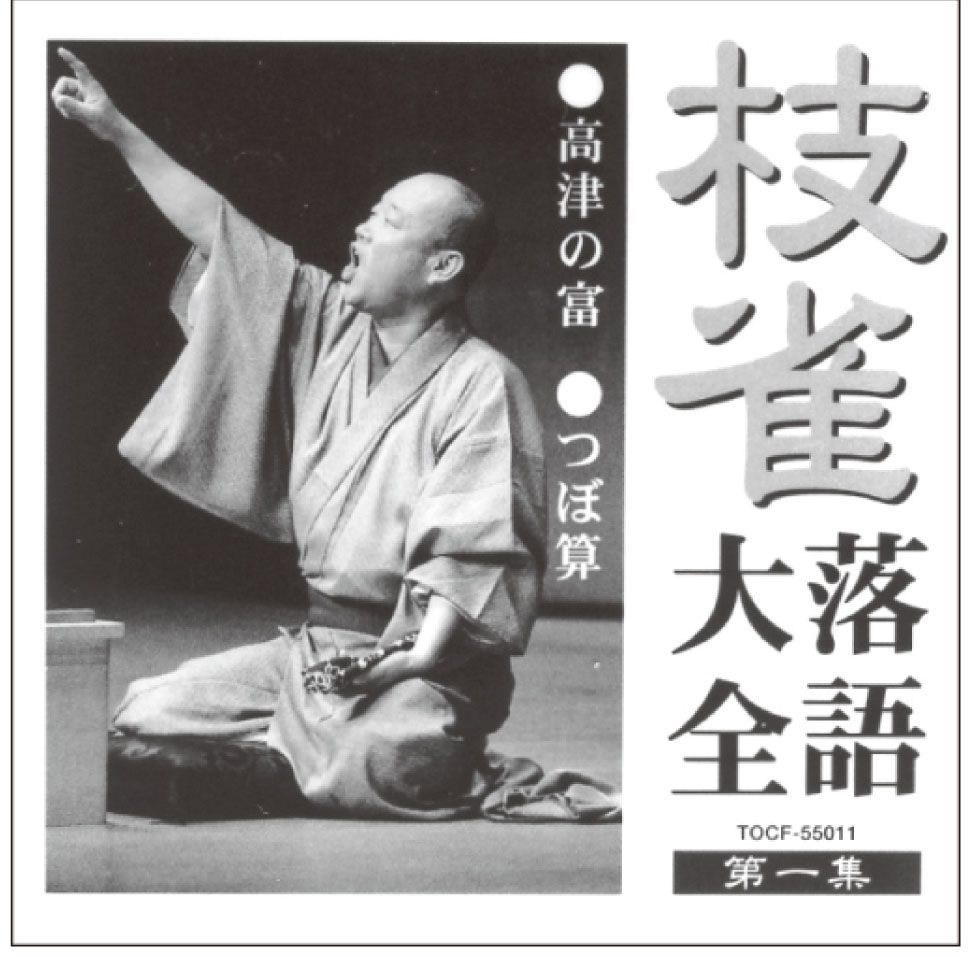
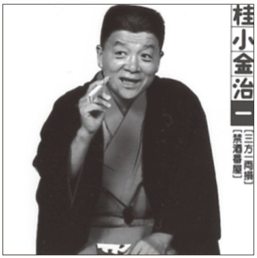
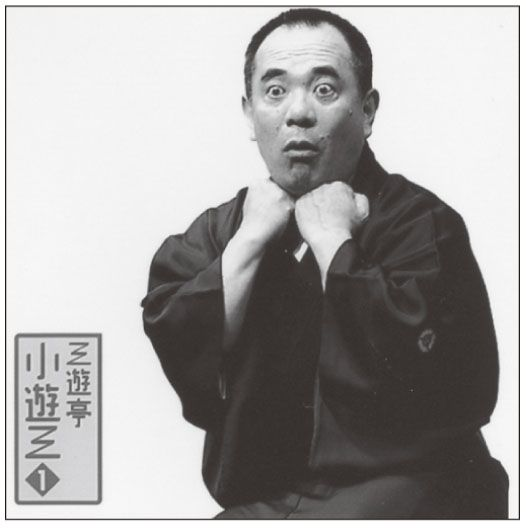
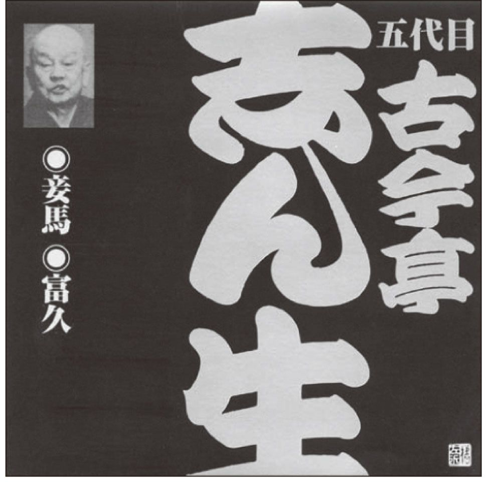

| 古典落語ＣＤの名盤 | |
| 京須 偕充 | |
| (2005) | |
二十一世紀を迎えるあたりから、落語が静かなブームの様相を呈している。ひところ閑古鳥が鳴いていた東京の寄席にも、じわりと客が戻ってきた。都市や地域のホール、街のさまざまなスポット、地方の公共施設でも落語の催しが増えて、しかも多くの客を集めている。客層も、昭和と平成の変わり目ごろからだんだん若返ってきた。若手落語家のイベントでは、若いカップルたちが客席を埋めている。
そして近年、落語のＣＤは、故人から現役に至るまで続々発売され、通信販売のものを含めると、相当量が出回るようになった。
まさに我が世の春を迎えつつある落語界だが、落語の魅力が十分に知られているかといえば、決してそうとは言いきれない。落語とは何か、どんなおもしろさがあるのか、どのように楽しめばいいのか――、などの手がかりが得られないまま、落語の前を素通りしている人はとても多い。
落語というと、着物（ではなく和服というのが今風だろうが）を着て、座ってしゃべる古いスタイルの笑話芸――といった認識しかない人も多い。それではコントや漫談、漫才などの他の笑話芸と、衣装や「立つか、座るか」くらいでしか区別がつかないことになる。
落語は、ばかばかしいことを言って笑わせるだけの芸能ではない。落語が、他の笑話芸に比べて際だっている点は、その物語性にある。ストーリーがあって、主人公がいる。だからこそ、そこから人間ドラマが生まれる。
コントはギャグやジョーク、漫才や漫談は身辺雑事、世間話を主体に笑わせるが、そこにテーマ性はあってもストーリー性は薄い。ストーリーがあるという点で、落語は講談に似ているが、講談が実録性を生命とするのに対し、落語は徹頭徹尾フィクションを貫く。「ばかばかしいお笑いを一席」が落語の〝表札〟で、そこでは狸だって人間と話ができるのだ。
落語のストーリーはすべて、笑いの人間ドラマである。誰の一日にも起こりうる、誰の人生にもある、さまざまな行き違いや失敗、トラブル、やぶへび、勘違い、他人から見れば滑稽な思い込み......などが思い切り戯画化されている。落語の登場人物たちは、みんな「私たち自身」なのだ。落語が一過性の流行に終わらず、三百年にわたって名人芸とともに磨かれてきた理由は、ここにある。
今やＣＤのおかげで、いつでもどこでも、寝る前のベッドのなかでも、走るクルマのなかでも、この落語という優れた人間ドラマを、しかも名人芸とともに楽しむことができる時代になった。
本書は、長年落語を聴いてきた体験、そして落語のＣＤ制作に携わった経験から、私が皆様にお勧めできるＣＤを、噺ごとに厳選して掲載した。そして、噺のあらすじ、そして聴き所とお勧めの演者を併せて記した。まずは、これらのＣＤを十枚ほど揃えてほしい。多忙な現代人も、また常設の寄席などがなく、ナマの落語から遠い地域の方々も、落語ワールドに浸ることが叶うだろう。
では、マクラはこのくらいにして、お茶を一服、これからいよいよ本題に入ることにいたしましょうか――
目次
口上 上を向いては歩けない
『上を向いて歩こう』って歌があった。海外名『スキヤキ』。調子のいい歌だったし、趣旨もBoys be Ambitiousよりずっとカジュアル。世相史に残るソングである。
万事、上昇志向時代の歌だった。右肩上がりに疲れを覚えるようになる四半世紀も前だった。向上心を失ってはいけないが、背伸びと爪先立ちの連続では危険だし、いずれ整体のご厄介にもなりかねない。
呑気な庶民が主役の落語にも、空を飛ぼうとして尻餅をつく笑い話がたくさんある。無理しなければいいのに。ありのままでいいのに。ほゥら剥がれた付け焼き刃。
上を向いて歩いたほうが安全だって？ なるほどね、街はビルの建設ラッシュ、「頭上注意」。でも、足元だって危ないんだ。うっかり歩けないよ。
【はなし】
「植木屋さん、ご精が出ますな」
炎天下の庭、お屋敷の旦那様は縁側から声をかけてくれた。まぁ、ここで一服おやり。涼み酒のお裾分け。少し冷やした柳蔭、上方が本場の米リキュールだ。鯉の洗いもお上がり。打ち水に濡れた青いもの（植栽）を吹き抜ける風は心地よいなぁ、植木屋さん。ところで、
「植木屋さん、菜をお上がりか？」
青菜の浸し、大好きです。「これよ、奥や」と旦那は手を打った。奥方、三つ指ついて登場。菜を、と言えば奥方、「鞍馬より牛若丸が出でまして、その名を九郎判官」。旦那静かに「義経......」。あいにく菜がないそうだ、植木屋さん。
つまり、客にそれと悟られない隠しことばのやりとり。その名（菜）を九郎（食らう）判官」、そこで「義経（よそう）」ってわけ。
なるほど！ これぞ上流の生活。植木屋、いたく感動した。わが家へ帰る。「おまえさん、鰯が冷めちまうよ！」。ああ、鯉にはほど遠いわが暮らし、鰯の似合うこのカカア。
せめて、上流ごっこぐらいしてみたい。友人が来た。次の間なんかないから、酷暑もものかは、かみさんを押し入れに押し込んだ。
「植木屋さん、ご精が出ますな」
「よせよ。おまえが植木屋、おれ、大工」
「上方の友人から貰うた柳蔭、お上がり」
「おい、ことばが変だぞ。ご馳ンなろう。......なんだ、ただの酒。燗がついてるじゃねぇか」
「鯉の洗いをお上がり」
「豪儀だな。......なんだ、鰯の塩焼きだよ」
「青いものを吹き抜ける風は心地よいな」
「どこに青いものがある」
「掃き溜めと羽目にぶつかった風は気色が悪いな。植木屋さん、菜をお上がりか」
「植木屋じゃねぇってのに。菜は嫌いだ」
おい、おれの酒と肴を奪っちゃって、それはないだろう。頼む、好きと言ってくれ、食わせやしないから。泣いて訴え、手を打った。これよ、奥や。
「旦那様ァー」。汗ダルマのカミさん、湯気をたてて押し入れから転げ出た。友人は仰天。
これよ、植木屋さんに菜を。
「旦那様ァ......、鞍馬より牛若丸が出でまして、その名を九郎判官義経」
「うッ......、弁慶にしておけ」
【ききもの・ききどころ】
長屋次元の上昇志向が生んだ滑稽な失敗話。身につかないことはしないほうがいい。
封建時代のような絶対的な身分格差が薄れ、国民の大半が中流意識をもつ世の中になっても、人間はとかく上を向いて歩きたがるから、この噺の生命は朽ちることがない。
植木屋夫婦と友人の庶民像は、ある線以上の表現力をもつ落語家なら誰でも描けるが、お屋敷の旦那像はなかなか描き出せるものではない。技巧よりも演者の鷹揚な風格があってこそ可能なもの。近年では五代目柳家小さんが絶品だった。
もっと古いところでは、六代目春風亭柳橋も印象に残る。この人の、眉毛の長い温顔と落ち着いた声音は、ピッタリ旦那様だった。旦那らしい旦那のいる光景が絵になると、猿真似植木屋の失敗が生きて深い笑いを生む。
桂文珍が上昇志向に加えて遊び心を強調するのは現代的な解釈といえる。
この噺には、京都鞍馬の牛若丸の故事が使われ、みりんを焼酎で割った、ほんのり甘い柳蔭が飲まれる。もとは上方落語という色が鮮明だ。江戸東京では柳蔭を「直し」と呼ぶが、広く普及しなかったのではないか。
判官はハンガンとも言うが、能、浄瑠璃、歌舞伎では義経をホウガン、「仮名手本忠臣蔵」なら塩冶ハンガンと相場が決まっている。上方では、随行したりご馳走になることを「弁慶」というのだが、東京ではとっさのごまかしで口走っただけのサゲ（落ち）になる。
【これぞ名盤ＣＤ】
■五代目柳家小さん「ＣＤ‐ＢＯＯＫ五代目柳家小さん落語全集」20枚組 小学館
■六代目春風亭柳橋「ＮＨＫ落語名人選20」ポリドール
■桂文珍「桂文珍11」ソニー・ミュージック
【はなし】
二十になってもぶらぶらしている愚か者の与太郎に何か仕事をさせよう。八百屋の伯父が荷担ぎのかぼちゃ売りをさせることにした。
いいか、大きいほうは十三銭、小さいほうは十二銭、商いは上を見てするんだぞ。
つまり、十三銭、十二銭は原価、上を見ろとは掛け値をして利潤を稼げとの意味だが、これでは与太郎にはわからない。天秤棒の両端にかぼちゃの荷をくくりつけ、担いで歩き出したが、ちっとも売れない。あ、そうか、売り声やらなきゃな。練習のつもり、「かぼちゃッ」と大声を出した。角を曲がって来たおじさん、出合い頭でびっくり。脅かすな、おれがかぼちゃと言われたみてぇだ。「いやァ、おじさんはジャガイモだ」。
でも親切に売り声なら「唐茄子（かぼちゃ）や」がいいと教えてくれた。暑い日盛り、狭い路地へ入る。前方に蔵、行き止まりだ。担いだまま方向転換をしようとした。天秤棒が両側の家につかえて回れない。路地を拡げてくれぇ！ 無理にガタガタやったので住人の職人が飛び出してきた。
この野郎、ウチの格子を傷だらけにしやがって。ばかだな、天秤降ろして体だけ回せ！
「あ、回れた」
「あたりめぇじゃねェか」
だけど、とぼけていておもしろいかぼちゃ屋だな、と近所のおかみさん連中を集めてかぼちゃを売りさばいてくれた。そりゃ、原価だもの、安いはず。その間、与太郎は口を開いて空を見上げっ放し、何の役にも立たない。お節介な職人も苦笑いするばかり。結局、完売した。
伯父の店へ帰る。そうか、よくやった。売り上げを数える。えれェな、原価と儲けを別にしてあるんだな。ちがう、それで全部だよ。......と、原価で売ったのか、ばかやろう！
いいか、十三銭は十五銭、十二銭は十三銭に売るんだ。上を見ろって言ったろ！
「見たよ。喉の奥までお天道様が当たってカラカラんなっちゃった」
掛け値をしなきゃ女房子が養えないんだ、もう一度行ってこい！
またさっきの路地へ。おい、かぼちゃ屋、また来たって、もう売れないよ。
職人もようやくわかった。おもしろいやつと思ってたら、こいつ、ばかなんだ。そうか、おまえいくつになる？ 六十？ まさか。
「そう、原価は二十」
「齢に掛け値をするやつがあるか」
「掛け値をしなきゃ女房子が養えない」
【ききもの・ききどころ】
上を見ろ、なんて商売人の言い方をしたって与太郎君にわかるわけがない。なぜ初めから十三銭を十五銭、十二銭を十三銭と言ってやらないのか。与太郎の能力を承知しているはずの伯父さんがそんな不首尾をしでかすのは、噺を成り立たせる都合で、与太郎は笑いのための痛ましい犠牲者とも言える。
ここで「上を見る」のは上昇志向ではない。掛け値をする、利益を生み出すことだが、与太郎は素朴に空を仰ぎ、太陽のまぶしさに目を昏ませ、喉をカラカラに涸かした。気は荒いが親切な職人がお節介にも売り子になり、安いかぼちゃにおかみさん達が群がる間、口を開けっ放しで上を見ている図は何とも漫画チックだ。
上方落語『みかん屋』を四代目柳家小さんが東京に移して商品をかぼちゃに変えた。愚鈍だが愛嬌があって憎めない与太郎の商品としては、かぼちゃのほうがずっとふさわしい。
継承した五代目柳家小さんの口演が群を抜いている。小さんの演じる与太郎は過度に道化にすることがなく、よく見れば足りない男という仕立てだった。そうでなければ曲がりなりにも人の世を渡る人間にならないし、後味のよい笑いも生まれないというものである。
【これぞ名盤ＣＤ】
■五代目柳家小さん「ＣＤ‐ＢＯＯＫ五代目柳家小さん落語全集」20枚組 小学館
【はなし】
八っつぁん、珍しく隠居宅の床の間の掛軸に注目した。「雪折笹」の図。字句が添えてある。「しなわるるだけはこたえよ 雪の笹」。雪の重みにしなって耐えている竹も雪が解ければ立ち直る。世の中、辛抱が肝心。
これは画に添えた賛というもの。結構な賛でございますぐらいのことを言ってみな。ふだんガラッ八だ、八公だと呼んでいる連中も見直して、八五郎殿、八五郎様と言ってくれるようになるぞ。よォし、やってみよう。
家主の床の間。字ばかりの掛軸。「近江の鷺は見難し、遠樹の鴉見易し」。雪中、近くの白鷺は見えにくいが遠くの黒い烏は見易い。善行はなかなか認められないが悪事は千里を走るの意。「結構なサンですな」「根岸の蓮斉先生の詩だ」。失敗。今度はシと言おう。医者の家へ行く。
先生、大きな絵ですね。うん、いささか大幅だ。ああ、食い過ぎると胸やけする？ それは大福だろう。「仏は法を売り祖師は仏を売り末世の僧は祖師を売る。汝五尺の身を売りて一切衆生の煩悩を済度す。柳は緑、花は紅のいろいろ歌、池の面に夜な夜な月は通へども影も宿さず水も濁さず」
「結構なシで」「一休禅師の悟だ」
あれえ、また失敗。まてよ、初めがサンで、シ、ゴ......。そうか、わかった。今度は先回りしよう。友人宅。
大勢の人物が描いてある。頭の長い爺さんや腹のでかい坊主。男六人で女一人を囲んでやがる。口説こうってェのか？ こりゃ、寿老人に布袋に弁天そのほかだよ。字がいっぱい書いてある。「なか（長）きよ（世）のとおのねふ（眠）りのみなめさ（皆目覚）めなみのりふね（波乗舟）のおと（音）のよきかな」。頭から読んでも尻から読んでも同じ回文。「眠りの皆目覚め」とは母の胎内から生まれ出ること、波乗り舟の人生行路、行く末は極楽浄土の音楽に包まれて安楽でありたい、の意。
「結構なロクで」「七福神の宝船だよ」
どうもうまくいかない。くやしい、もう一軒トライ。「古池や蛙とびこむ水の音」
「結構なハチですなあ！」
「芭蕉の句だ」
【ききもの・ききどころ】
頓知ばなしのオムニバスのようでおもしろい。トントンと運べば楽しめるし、ばかばかしいようでいて文人趣味や風流の雰囲気が漂う佳品だ。
演者が正確に記憶してわかりやすく言い立てなければならない要素がいくつもあるから、口ならしの前座噺のように扱われるが、前座噺としてはハードルの高い噺である。
ほとんどの演者が「七福神」で止める。おめでたい感じがして正月の高座に向いた噺になるからだ。それに加えて、芭蕉の句は誰もが知るものだし、それと九をかけたサゲはわかりやすいが、六で失敗した八っつぁんがもう一度同じ轍を踏んで一目上がりし、八と言うのはおもしろみに欠け、屋上屋を重ねる観もある。
芭蕉の句は、もとは帰途に立ち寄る道具屋との問答だったという。また十一まで行く古いやり方もあるそうだ。ちなみに自分の描いた画に自作の賛をしたためるのが、「自画自賛」の語源だという。
三代目三遊亭金馬の鮮やかな舌さばきがこの噺の人気を高めた。昭和のなかば、ラジオ落語ブームのリーダーだった金馬は、落語をわかりやすく楽しませる第一人者で、落語の普及に尽くした功績は巨大なものだった。
金馬ほど派手ではないが、落語らしい落語の基本をじっくり表現した五代目柳家小さんも忘れられない。
【これぞ名盤ＣＤ】
■三代目三遊亭金馬「ＮＨＫ落語名人選36」ポリドール
■五代目柳家小さん「特選落語名人会５」キング
【はなし】
植木屋の職人が仕事をおえてわが長屋に帰ってきた。なにやら疲れている。というより落ち込んでいる。どうしたの、と女房。いやァ、じつはな――。
きょう、出入り先のお屋敷で庭木の手入れをしているところへ、お達しがあった。まもなく若様がこのあたりへ来られるから控えているように。そこで植え込みの蔭に隠れた。
大勢の家来にかしずかれて無邪気に遊ぶ若様。人形のようにかわいらしく立派なお召し物を着ているが、駆け回る姿は町の子どもと変わらない。一枚の穴あき銭を拾われた。不審そうに眺めていたが、ややあって老臣・三太夫さんに「これは何じゃ」と訊かれた。銭をご存じない！
老練な三太夫、逆に問い返した。「若君は何と思し召す？」「これは、まるくて真ん中に四角い穴があって裏に波が描いてあるから......、お雛様の刀の鍔であろう」
若様は御八歳とか。それにひきかえウチの倅だ。同じ〝オハッサイ〟だが、何かにつけて銭くれェー、お銭くれェー。それというのも安直に銭を与えるからだ、と植木屋は女房をなじる。長屋住まいをしてたって屋敷出入りをする植木屋だもの、せめてまわりから、お宅の坊やは品がいいぐれェ言われてみてえや。
お屋敷とくらべたって無理だよ、と女房は反論する。大勢養育係が付いている若様とちがって長屋のガキは親が面倒見切れないから、お銭に遊んでもらっているようなもんなのさ。だが亭主はそう簡単に割り切れない。おい倅、おまえ、お雛様の刀の鍔なんてこと言えるか？ ヘッ、言えらァそれぐらい。チャンチャラおかしいや！ ああ、何たる悪ガキ。
なおも小言を言おうとするので女房は倅に小遣いを与え、表行って遊びな、と外へ出してやる。おい、それがいけねエンだ！
出入り先のお店の隠居が訪ねてきた。庭仕事の話をしているところへ倅が帰ってくる。「こーんなもの拾ったあ、こーんなもォのォ......」。穴あき銭一枚、得意そうに大声の歌い調子。「まるくて四角い穴があって裏に波、これお雛様の刀の鍔かなぁ！」
隠居がびっくりした。植木屋さん、坊やはお銭を知らないのかい？ すっかり感心、ご褒美に手習い道具一式を買ってあげると言ってくれた。おい、よォくお礼を言いな。それは不浄な物だから捨てちまえ。
「やだい、焼き芋買って食うんだ」
【ききもの・ききどころ】
職人がお屋敷の影響を受けて上流を気どっても付け焼き刃は剥がれやすい――、という構図は『青菜』と同類で、ともに植木屋が主人公になっている。上流社会の生活にもっとも近接した地点で仕事をする稼業として、植木屋はいちばん打ってつけだ。
『青菜』よりも『雛鍔』のほうが植木屋夫婦ががさつではない。失敗も『青菜』ほど滑稽な仕上げになっていないが、こちらのほうが自然でワサビがきいている。
隠居に感心されて植木屋が大照れしながらうれしがるのは楽しいし、子どもも『真田小僧』などのように極端な悪知恵っ子に描かれていない。
なかなかの名作だが、『青菜』や『真田小僧』ほどにウケない。それに植木屋の一本気ぶりを表現する隠居との対話の部分がテーマの二重構造性を生んでしまって、全体がスッキリしない。演者が少ないのはそのためだろう。
三代目三遊亭金馬の十八番だった。子どもの表現に定評があっただけに、「こんなもの拾った」は耳に残っている。植木屋夫婦の子育て観の差異を浮き彫りにして笑いのひだをぐっと深くした三代目古今亭志ん朝は名演だが、滅多にやらなかった。さらに立川志の輔は一段と現代的な解釈を施し、隠居を同年輩の番頭に変えて植木屋の対応をよりストレートなものにしている。
【これぞ名盤ＣＤ】
■三代目三遊亭金馬「三代目三遊亭金馬落語傑作集６」コロムビア
■三代目古今亭志ん朝「落語名人会 古今亭志ん朝２」ソニー・ミュージック
■立川志の輔「志の輔らくごのごらく２」ソニー・ミュージック
【はなし】
野だいこの一八、夏枯れ対策とばかり、朝から炎天下を個別訪問、本日一日の〝旦那〟をあさるが、どうもうまくいかない。お座敷仕事でなくてもいい、せめて祝儀をいただきたい、昼飯ぐらいゴチになりたいなぁ！ 〝ユニホーム〟の羽織がうらめしいほどの暑さだ。
むこうから浴衣の男がやって来る。どこかで見た顔。先方も気がついて笑顔で近づいて来る。誰だっけ？ わからないまま、藁をもつかむ心境、声をかけた。いよゥッ、大将！
おゥ、どうしたい師匠。話はとんとんとまとまって昼飯をご馳走になることになった。浴衣掛けを見てのとおり、湯に行くつもりだったのだから昼飯だけだよ。
それでも結構、これを糸口にごひいきを頂ければ、と話だけは調子よく合わせて同道する。だけど......誰だったっけ。えェと、大将のお住まいは？ 知ってるだろ、以前のとこ。以前の場所だと言われて知らないとは返せない。手がかりは得られないまま。
汚い鰻屋の二階に通された。口振りからすれば、この人の馴染みの店らしい。汚いけど、穴場かな。酒に鰻と昼の宴が始まった。師匠、ウチへおいでよ、あげたいものがいっぱいあるから。ありがとう存じます、えェと、お住まいはたしか......。知ってるね、以前のとこ。〝旦那〟は手洗いに行くと言って席を立った。しめた、いい客つかまえたぞ。あの人、いい目してるよ。一八の期待はふくらむ一方。だけど手洗いへ行ったきり戻って来ない。芸人の立場、お迎えに行こう。えー大将、いかがいたしやした？ 戸を開けますよ、バァーッ、......あれ？ いないね。
お連れさんはお帰りになりました、と女中。あ、そう、粋な客だ。一人で好きなように飲み食いしろという配慮、うれしいな。あの人に未来を託したいね。おい姐さん、帳場で紙にくるんだもの、預かってるだろ、持ってきておくれ。
女中は祝儀どころか勘定書を持ってきた。えッ、まだ払ってない？ お馴染みのお客だからツケになるんだろ？ 初めての客？ 冗談じゃねぇ、帰るときになぜ催促しなかったの？
催促しましたら、おれは浴衣だからお供、二階で羽織を着ているのが旦那だって......。
やられた！ しかも蒲焼き三人前の土産まで持ち逃げとは。どうも目つきの悪いやつだとは思ったが......。ああ汚い店、まずい酒、ひどい鰻。帰る！ あれ、おれの履物がない！
「お供さんが履いていらっしゃいました」
【ききもの・ききどころ】
幇間には男芸者の異名もある。芸も達者だが客の機嫌のとりもちと座敷全体の仕切り、演出をする役目だった。中世の猿楽では太鼓打ち役と太鼓持ち役が別人で、持ち役が囃子方をかねたところから、はやし役に「たいこもち」の名が生まれたという。
幇間とは間をとりもつということだが、この二字で「たいこもち」、「たいこ」と読むのが習慣。音読みの「ホウカン」も明治以降は一般化した。現在はほとんど絶滅状態の職業。
特定の花街に登録していない、フリーの幇間を「野だいこ」といった。独力で仕事をあさるから言動が過剰になり、もっぱら落語に登場して笑いをふりまく。夏目漱石の『坊っちゃん』のバイプレーヤーになるほど、かつては珍しくない稼業だった。
それにしても野だいこを食いものにした男は許しがたい。野だいこが思わず大きな夢を託すほど巧妙だったのか、野だいこの眼力の限界なのか。芸人のしがなくも大きな夢はあっという間にはじけ飛んだ。客商売ゆえの羽織着用が裏目に出た皮肉な話。
八代目桂文楽が野だいこの陽気と悲哀をくっきりと表現した名演。五代目古今亭志ん生は特異で、悲哀を排した、ふてぶてしい野だいこを造形していた。三代目古今亭志ん朝は文楽、志ん生の両様をうまく一体化している。
【これぞ名盤ＣＤ】
■八代目桂文楽「ＣＤ‐ＢＯＯＫ完全版 八代目桂文楽落語全集」10枚組 小学館
■五代目古今亭志ん生「落語蔵出しシリーズ１」コロムビア
■三代目古今亭志ん朝「志ん朝復活 色は匂へと散りぬるを～は」ソニー・ミュージック
【はなし】
蔵前の商家のあるじが隠居して根岸に移り住んだ。閑静な土地に小僧の定吉と二人だけ、何の所在もない毎日。何か趣味をもとうにも、若いときから仕事一本で素養がない。
隠居所にはもともと茶室が付いていて茶道具が一式揃っている。ならば安上がりだから茶の湯でもやろうか。節約家なので趣味に投資はしないのだ。が、茶道の知識ゼロ。茶の湯の原料、何だったかな、あの緑色の粉末は？ 知ってます、と定吉が買ってきたのは青黄粉。なるほど色は似ている。
さっそく二人で茶室に入り、炉に消炭をぶちこんで渋団扇でバタバタあおぐ。サザエの壺焼きみたい。釜が沸騰、轟音を立てて煮えたぎる。風流だなぁ！ 茶碗に青黄粉と熱湯を入れて力まかせに掻き回したが、もとより泡は立たない。泡立ち薬入れ忘れたみたいだぞ。
それならと定吉は椋の皮を買ってきた。アク抜きや洗滌に使う発泡性の樹皮。これを湯釜に放り込んだから、掻き回すまでもなく盛大な泡が茶碗に盛り上がった。ガブリと飲めば口がしびれて気が遠くなる。それでも風流風流と日に三度もやっていたから、たちまち下痢に襲われた。少し休もう。
その代わり持ち長屋三軒に手紙を送って茶の湯に招待をする。家主の権限乱用である。その三軒、豆腐屋も鳶頭も手習いの師匠も、じつは茶の湯を知らない。知らないことがわかっては恥だから、いっそのこと長屋から引っ越そう。それほど、みんな思いつめてしまった。でも隠居の素養もどの程度か知れたものではない。イチかバチか招待に応じよう。三人とも茶のまずさに悲鳴を上げたが、口直しに羊羹を食べて急場をしのぐ。
うっかり客に飲ませて流儀や作法の話になるのを恐れていた隠居は、三人が難なくすんだので、近所の人を片っ端から招待し始める。みんなあきれたが、羊羹目あてに行くやつもいて、一ヶ月で法外な菓子代がかかった。
それでは、と自家製の菓子。ふかし芋と黒砂糖を摺り鉢で摺り合わせ、行灯の灯し油を塗った型で抜く。一見はいいがひどい味。これでついに誰も寄りつかなくなった。そこへやって来たのが旧知の客。茶で口はしびれ、思わず二つも手に取った菓子も一口で口が曲がった。そっと便所を借り、残りの菓子を窓から投げる。むかしの根岸、耕作中のお百姓の頬へビタッ。
「......ああ、また茶の湯けぇ」
【ききもの・ききどころ】
茶の湯ということばを知りながら原料を「茶」ならぬ青黄粉と思い込むのは論外だが、隠居よりずっと常識のありそうな長屋の三軒も、じつは茶道には縁がない。恥をかくことを恐れて転居まで考えてしまう。幸い、〝茶道難民〟には至らなかったが、この噺は上流コンプレックスとスノビズムの愚かさを明るく笑っている。
そして聴き手の多くも長屋の三人と同じような要素を持っているから、青黄粉と椋の皮という設定に無理があっても、噺そのものは現実感をもって受け入れられるのである。
隠居と小僧の試行錯誤だけでも軽い一席ものの噺の質量があるから、わりあい長い噺だ。長屋のトリオも商人、職人、もと武士と三者三様なので熟練の演者で聴きたい。
淡々と、しかし丁寧に演じて噺の本質を描いているのは六代目三遊亭圓生で、それをコンパクトにし、一段と滑稽にしたのが三代目三遊亭金馬。両者の味をうまくミックスしたのが桂文朝。一方、人物の一人一人にユニークな仕上げを施したのが十代目柳家小三治である。
【これぞ名盤ＣＤ】
■六代目三遊亭圓生「圓生百席27」２枚組 ソニー・ミュージック
■三代目三遊亭金馬「ＮＨＫ落語名人選７」ポリドール
■桂文朝「『朝日名人会』ライブシリーズ17 桂文朝１」ソニー・ミュージック
■十代目柳家小三治「落語名人会 十代目柳家小三治８」ソニー・ミュージック
【はなし】
京都の春、茶屋遊びにあきた旦那が山遊びを思いついた。愛宕山詣りがいい。野山の景色をめでながら歩いて行こう。
随行する大阪の幇間一八、かなわんなと思う。座敷の遊びならまかせとけだが、山登りに自信はない。それに京都の旦那は金があっても根はケチン坊。大方、外遊びのほうが安上がりと算盤をはじいたにちがいないのや。
でも文句は言えない。芸妓、舞妓、茶屋の女将や女中衆も連れて一行は洛中を西へ。
あれが愛宕山や。ああ、さよか、あんなもん地べたに出来たこぶやね、と一八は強がる。一八、おまえはすぐに大きなことを言うが、登れるか？ えーえ、あれぐらい、朝飯前。なら、途中で逃げるなよ。
登ってみたらきついきつい。一八ひとりが背中をあと押ししてもらって、どうにか中腹少し下まではたどりついた。みんな元気だが一八だけは降参だ。一八、大きなこと言うてはあかんで。ここで一服、楽しい弁当のひととき。
谷に綱が渡されて真ん中が輪になっている。土器投げといって素焼きの小さな皿を投げ、その輪を通す競技がここの名物だ。旦那はスイスイと土器を投げては輪を通した。ナニ、あんなものと一八しゃしゃり出たが、一つも命中せず。
旦那は小判三十枚を次々と投げ始めた。土器とはコツがちがうから、一つも輪を通らない。それ以上に、もったいない！ 一八、体を張って阻止したが旦那は淡々と全部投げ切った。
大阪の幇間が、京都の商人を内心ケチとあなどっていることを承知の旦那は、大金を投げ捨てて京都人の洗練された意気地を見せつけたのだ。さ、行こか。あの金は？ 拾うた人のものや。私が拾えば？ おお、みんなおまえのものや。
一八、谷底行きに踏み切った。が、狼が出るという道なき道しかない。ならば茶店の傘を借り、これを担いで落下傘。アイデアはいいが飛び降りる踏ん切りがつかない。崖っぷちで迷う一八。旦那の命令で若い衆が背中を突く。一八、傘もろともに深い谷底に消えた。
はっと気がつく。あ、小判あった。ここに一枚、かしこに二枚......。谷底から上へ大声、旦那ァ、三十枚いただきまァす！ おお一八、それはいいが、どないしてここまで上がるのじゃ？
はっ、どないしよ！ 着物をビリビリさいて縄をなう。先端に小石を付けて放る。長い嵯峨竹の先端に巻きつけた。力まかせに引く。竹が満月のようにしなう。トンと弾みをつけ、竹の反発力に乗って、ツ、ツ、ツと急斜面を急上昇、ヒラリ。ただいま！
えらい、金は？
「あーッ、忘れてきた」
【ききもの・ききどころ】
茶店の貸し傘は少し大きめだとしても、番傘だから人ひとり軟着陸させるほどの力はなかろう。絹の着物をさいた縄がどれほどの強度をもつか、嵯峨竹一本の反発力で百数十メートル下から這い上がれるかどうか、合理性は全くないが、そんな理屈を言わずに楽しみたい滑稽アクション落語だ。
しかし基礎には、京都・大阪の対立と金銭感覚のちがいなどがしっかり織り込まれている。花柳界遊びのアウトドア版としても楽しく聴けるし、京都郊外の自然の景観も描かれている。
三代目桂米朝、二代目桂枝雀、桂文珍がそれぞれの持ち味で楽しく聴かせる。
この噺には東京版があって、場所は同じ京都の愛宕山だが一八と旦那が東京人になるので心理の底の対立感は消える。こちらは八代目桂文楽と三代目古今亭志ん朝が名演だ。明るい芸で春の京都に遊びたい噺である。
【これぞ名盤ＣＤ】
■三代目桂米朝「特選!! 米朝 落語全集 第八集」東芝ＥＭＩ
■二代目桂枝雀「枝雀落語大全 第四期 第三十一集」東芝ＥＭＩ
■桂文珍「『朝日名人会』ライブシリーズ13 桂文珍８」ソニー・ミュージック
■八代目桂文楽「ＣＤ‐ＢＯＯＫ完全版 八代目桂文楽落語全集」10枚組 小学館／「桂文楽十八番集」７枚組 ビクター
■三代目古今亭志ん朝「落語名人会 古今亭志ん朝３」ソニー・ミュージック
【はなし】
食いつめた男、金策は二進も三進もいかない。豆腐の角へ頭をぶつけて死んじまえとののしる女房。そうだ、面当てに死んでやろう。
目の前に天を突く大樹がある。こんな木、あったっけ？ ここに首吊ろうかな。だけど、どうやればいいんだ、死ぬの初めてだもん。
死に方、教えてやろうか。ボロをまとい痩せこけた不気味な爺が出現した。おれは死神だ。じつはな、おまえとは前世から深い縁がある。おまえはまだ寿命が尽きていないから死のうとしても死ねやしない。金儲けを教えてやろう、医者になれ。
おれは医術を知らないよ。知らなくてもやれる。おまえにだけは死神の姿が見えるようにしてやったから、家に帰って医者の看板を出せ。頼みに来た患者の家へ行って、死神が病人の枕元に坐っていれば寿命はないが、足元にいればまだ寿命がある。足元にいたら、「あじゃらかもくれんキューライス、テケレッツのパ」と唱えてポンポンと手を打て。死神が立ち去って病人は嘘のように全快する。死神が枕元にいるとき、やっちゃァだめだよ。
半信半疑で看板を出したらすぐ依頼が来た。大商人の主人が死ぬか生きるか、すべての医者に見放されたが、易者の言を信じて依頼に来たという。貧相な医者の出現で病家も困惑したが、とにかく診察を頼む。死神は足元だ。しめた、あじゃらかもくれんキューライス、テケレッツのパ、ポンポン。
死神は消え、病人は起き上がって空腹を訴える。奇跡の名医だ！ 法外な礼金をもらった。噂が噂を呼んで大繁盛、門前市をなす依頼。幸いにも大多数が〝足元ケース〟、たちまち大金持ちになった。たまたま死神が枕元にいれば極近の死を予言、その通りになって名声ますます上がる。死神のおかげで生き神様になった。そうなると口やかましい古女房は邪魔、金をつけて追い出し、若い女と一緒になった。女にせがまれて伊勢・上方へ大名旅行、財産を使い果たすと、女は金の切れ目が縁の切れ目と去ってしまう。
なあに、また江戸へ戻って医者になりゃ金は戻ってくる。ところが今度はさっぱり患者が来ない。あっても〝枕元ケース〟ばかりで金にならない。ある大富豪の家へ呼ばれたが、やはり枕元。しかし莫大な報酬をほのめかされて一計を案じた。力があって気のきく奉公人四人を病人の布団の四隅に待機させる。
夜が明けて死神が一瞬の隙を見せた。それ！ 合図とともに四人が病人の布団を半回転、枕元が足元になった。すかさず「あじゃらか......」、ポンポン。死神、仰天して退散した。
われながらうまくやったな。手付け金をもらって一杯機嫌の帰り道、おい......と不気味な声。最初に会ったあの死神だ。おい、このおれにとんでもねぇことをしてくれたな。え、あなただったの？ 失礼しました。
もう手遅れだ。掟を破った男は死神に抗い難く地下の世界へ導かれる。あたり一面に灯る無数の蝋燭。すべての人の寿命だという。男はあんなことをしたために、きょうの病人と蝋燭を取り替えてしまった。これがおまえの寿命だ、ほら、もう消えるよ......。
男は必死に謝るが死神はひややか。まァ、この燃え残りに火を接いでみな。震えていちゃァ消えるよ、消えれば死ぬよ......ほら、ほら......、ほォら、消えた......。
【ききもの・ききどころ】
グリム童話から生まれたらしいオペラのストーリーを聞いて、幕末・明治の名人、三遊亭圓朝が滑稽と怪異の入り混じる一席にまとめた。火が消えて演者が前へ倒れ、主人公の死を示してサゲになるという珍しいタイプの噺だ。
それを継承した六代目三遊亭圓生の演技はすばらしく、一種の異次元空間をありありと見せてくれた。
それにしても特異な結末だから、むかしから改変、改訂が絶えない。作者圓朝直門の初代三遊亭圓遊はすでに明治のなかばに陽気な生還版を作っている。
いったん生還するが、油断で火を消してしまうのが十代目柳家小三治、立川志の輔など。しかし、そのプロセスはそれぞれちがう。圓生がやったオリジナルの継承者は最近少数派のようだ。
死神との縁で巨万の富を得た主人公はあっという間に元の木阿弥になるばかりか、かけがえのない命まで失ってしまった。しょせん、それだけの人物だったのだろう。この噺は人間の運と素質は結局限られたものだということを語る、手のこんだ寓話のようである。志の輔は「寿命」ということばをすべて「運」に置き換えて演じている。
【これぞ名盤ＣＤ】
■六代目三遊亭圓生「圓生百席23」２枚組 ソニー・ミュージック
■十代目柳家小三治「落語名人会 柳家小三治17」ソニー・ミュージック
■立川志の輔「志の輔らくごのごらく１」ソニー・ミュージック
いま、落語のＣＤが、実にたくさん発売されている。ＬＰレコードとカセットテープの時代は往年の名人クラスのものがほとんどだったが、ＣＤの時代に入って現役世代のものもかなり数が多くなった。おそらく、七、八百種類はあるのではないだろうか。
これはＣＤショップなどで売られている商品に限った話である。時折、新聞に大きな広告が載る通販商品を加えたら、とても勘定し切れない。盛り場の街頭や駅の通路などで十把ひとからげにされている得体の知れない超廉価盤までは、とてもお相手できないほどの活況だ。
ただ、どこのＣＤショップへ行っても目当ての商品がすぐに手に入る、という状況にはない。大都市圏以外では、とくにそうだ。大都市だって、品揃えの行き届いた店は、東京、大阪で十指に満たないほどである。とくに小規模なショップは通常、ヒットアルバムを置くだけで精一杯だから、それにもかかわらず落語コーナーを設けていれば、人間国宝ならぬ〝店舗国宝〟として顕彰したいくらいのものである。
ＣＤショップ、むかしでいえばレコード屋さんは本屋さんの五分の一の軒数もない。ヒット一極集中の傾向が病的に高くなるのも当面やむを得ないことなのだろう。
それでも落語のＣＤは続々と発表されている。おそらく、レコード百三十年ほどの歴史の中で、カタログはいまがいちばん豊富だろうし、この記録はごく緩やかなカーブながら更新されていくと見ていい。
販売スポットがひどく限定されているのに、なぜ落語のＣＤは増えるのか。それは、
一、録音商品で愉しむ習慣の定着（ユーザー・サイドの理由）
二、ゆっくりだが着実に売れる（ディーラー・サイドの理由）
三、メーカーにとって利益率が低くない（メーカー・サイドの理由）
四、若手落語家の活躍による業界の活況（ハナシカ・サイドの理由）
――などによるものだ。ユーザー、ディーラー、メーカーの後塵を拝して四番手にされたハナシカはむくれるかもしれないが、これは「トリ」をとってもらったまでのこと。
それはさておき、大判のＬＰや、うっかり蹴とばしかねないカセットテープより、コンパクトで機能的信頼度の高いＣＤのほうが、運転中やベッドサイドの友になりやすい。半世紀前に全盛を誇ったラジオ落語の愉しみが、べつのかたちで復活したのだ。しかも流れて消えるラジオとちがい、お好みの噺と落語家を独占私有して、いつでも聴くことができる。これがユーザー側の理由。
ディーラー・サイドからすれば、熱しやすく醒めやすい〝ヒットもの志向のユーザー〟とちがって、落語リスナーは腰を据えて買いに来てくれる常連客だ。なにしろ没後三十年以上になる五代目古今亭志ん生のＣＤがいまだに売れるのだ。落語は、クラシックやジャズでさえ薄れつつある極め付き、決定盤の世界をいまも保っている。
そしてメーカーにとっては、往年の放送録音や記録録音からもＣＤを作れるし、新録音をしたところで落語家の一人芸だから、録音費用や権利料を低く抑えられる。投資の回収には若干の日月を要し、個々の利益額はそれほど高くないが、長期的に見て利益率はすこぶる健全である。
さらに平成に入ってから、若手落語家の活躍がめざましい。これといったスーパースターはまだいないが、かなりのグループ効果を挙げて落語のファン層が劇的に若返ってきた。中高年層が老名人の至芸を堪能するジャンル、という固定イメージは、すでに過去のものである。
だから、落語ＣＤの取り扱いにいまだに二の足を踏んでいる、あるいはお座なりな対応しかしていないショップは、先が見えていない、と言われても仕方がないだろう。
ただし、どこの店にも落語あり、となったら、かえって危ない。何といっても足の遅い商品だから、なかなか買いにくい、ぐらいでちょうどいいのかもしれない。〝過ぎたるは及ばざる～〟になっては元も子もないのだから。
それにしても、ふんだんにある落語ＣＤをどう見分け、どんなふうに集めたらいいのか。それ以前にどんな落語家のどんな噺が入手可能なのかさえ、よくわからないというのが、いまの落語ＣＤをめぐる情勢である。
口上 ニセモノならばホンモノになれる
世の中、風向き次第で夏にも冬にもなる。時代遅れもレトロと評価されればいい。塩辛すぎてもふるさとの味と称せばまかり通る。不細工も不出来も手作り民芸品ならＯＫ。雑草や害虫には自然保護を適用しない。駆除しても生態系は破壊されないらしい。凄腕政治家が一夜にして悪党呼ばわりされる。むかしだって、ジャンヌ・ダルクは魔女にされた。
そのくせ世間は「ホンモノ」に弱い。ホンモノがニセモノになればあっさり離れ、ニセモノがホンモノになればたちまち群がる。ホンモノを見分ける自信はなく、「ホンモノ」といわれるモノに弱いだけの話なのだ。
世の中の価値や観点が変われば、ニセモノがホンモノになることがある。ニセモノのまま、ホンモノ以上の価値が出ることだってある。鑑定に左右されない自分の価値観をもってこそ、ホンモノの人間じゃないのかね。落語は「鑑定」を鑑定して笑わせてくれることがある。
【はなし】
京都・清水寺、音羽の滝の前の茶店。人品のいい初老の男客が茶碗を見ては首をかしげる。茶を空け、ためつすがめつ眺めては茶を注ぎ、都合六回首をかしげて立ち去った。
その客が音に聞こえた名鑑定家で、なにしろ首一回かしげるごとに値が百両上がるといわれる茶金こと茶屋金兵衛だったから、目撃した大坂からの流れ者は色めき立った。この男、荷担ぎの油屋。世帯道具にしたいと称して茶店の亭主から茶碗を貰おうとした。しかし亭主も茶金の挙動を見ていたから譲らない。結局、油屋は有金二両と油の荷全部を引き換えにして強奪同然に茶碗をせしめた。
箱に入れ、もっともらしく装って茶金の店へ。これ、六百両はする値打ち物、鑑定して買い上げてほしい。見れば清水焼の最下級品、どこにでも転がっている数（雑）茶碗だから番頭は吹き出した。新品でも三文の値打ちしかおへん！
揉めているところへ茶金が現れた。どれどれ。が、鑑定には及ばない。答えは同じだ。油屋、必死で過日のいきさつを言い立てた。
「あ、あの茶碗......。これ、漏りますのや」
傷もヒビもないのに何度試してもポタリ、ポタリ。で、はてな？ 六回首をかしげた。
そんなアホな！ とはいえ、早合点して一山当てようとした油屋は文句が言えない。気の毒なので茶金は油屋に三両貸して帰した。
茶金は関白鷹司公に拝謁の折り、おもしろき話は、と求められてこの話をした。殿下、茶碗を見たいとおっしゃる。なるほど、ポタリ。直筆の歌の短冊を添えられた。「清水の音羽の滝の音（落と）してや 茶碗も日々（ヒビ）に森（漏り）の下露」。評判は帝のお耳に入り、茶碗は御所へ、ここでもポタリ。帝は箱に万葉仮名で「はてな」としたためられた。中身は石ころでも、箱書と短冊といきさつが飛び切りだ。豪商・鴻池善右衛門が千両で買う。
「油屋はん、じつは千両で売れました」
「そういうやつや、おのれは！」
しかし、油屋が持っていれば三文の値打ちもないが、茶金が手にとったから千両になったのだ。油屋も納得する。茶金は油屋に五百両を与え、大坂へ帰って堅く働くようにさとした。と、ある日、油屋が大勢の人を使って大きな品を持ち込んで来た。十万八千両の大儲け？ いったい何を持ってきた？
「水がめの漏るやつ見つけてきた！」
【ききもの・ききどころ】
ガラクタ茶碗自身には何の〝野心〟もないのに、かかわる人間が特別だと周辺の思惑で大きな価値が生じ、勝手に値がつり上がる。茶碗そのものではなく、箱書きと短冊が評価のほとんどなのさ、と言われそうだが、この噺の場合、肝心の変な茶碗がなければ、その二つもなかったわけだ。品物ばかりでなく、人間の評価も実態とは無縁の要素で決まることがよくある。
三代目桂米朝の知的な語り口がこの噺の寓話性に適っている。落語に帝や関白がかいま見えるのは稀な現象だが、それが自然に納まるのは演者の年功と貫禄だろう。
二代目桂枝雀、桂文珍は、早合点して投機的な欲望に踊る油屋の姿と、それが見事にはぐらかされるストーリーのおもしろさを個性的に描いている。枝雀の油屋は飄逸、文珍の油屋は陽気でたくましい。
何が値打ちでどう高値がついたのか、結局わからずじまいのまま、茶碗より何十倍も大きい水がめを持ち込む油屋なのだから、人物造形の線は太くありたい。
油屋を江戸っ子にした東京版『茶金』が古くからあって、五代目古今亭志ん生、三代目古今亭志ん朝が演じていた。『茶金』では関白の詠む歌が少しちがっている上に、帝まで歌を詠んでいる。
【これぞ名盤ＣＤ】
■三代目桂米朝「特選!! 米朝 落語全集 第五集」東芝ＥＭＩ
■二代目桂枝雀「枝雀落語大全 第三期 第二十一集」東芝ＥＭＩ
■桂文珍「桂文珍４」ソニー・ミュージック
■五代目古今亭志ん生「古今亭志ん生名演集六」ポニーキャニオン
■三代目古今亭志ん朝「志ん朝復活 色は匂へと散りぬるを～と」ソニー・ミュージック
【はなし】
松山村の正助は至って素朴な男。人呼んで正直正助。ことし四十二になるが大の孝行者で、十八年前に亡くなった父母の墓参りをいまだに毎日欠かしたことがない。領主に聞こえて御褒美を賜ることになった。
望みを申せ。金か、田地田畑か？
「金、あると働こうてぇ気になりません。毒なもんでがす。田地田畑、これ以上あっても耕せねえでお断り申します」
欲がなさすぎるのも困ったもの。何なりと申すがよいぞ、上の威光をもってどのようなことでも叶えて遣わす、と力説したのがいけなかった。正助、一世一代の大望を口にする。
「死んだ父っつぁまに会わしてくんろ！」
上の威光とまで言った手前、それは無理だとは言えない。どうしよう。たしか、正助の松山村には鏡というものがない。それほどの寒村。これ名主、正助は父に似ておるか？ 瓜二つでございます。
領主は正助に八咫の御鏡の御写（複製）を与えた。正助、生まれて初めて見る鏡。
「あれっ、父っつぁまでねえか。あんた、こげなところにござらしたか！」
余人に見せるなよ、との仰せを正助は堅く守って納屋の古葛籠の中に鏡を隠し、女房にも秘密にした。朝な夕な〝父〟に会うため納屋へ忍んで行く。
怪しんだ女房が正助の留守にそっと納屋へ入った。葛籠を開ける。女房も鏡を知らない。あれま、こげなところにオナゴ隠しとくだね。こら、ひとの亭主取る面かッ、狸のような面しやがってぇ！
正助が帰ってきた。なに泣いているだ？
白ばっくれるでねえ、葛籠の中は何だ！
「あ、あれあれ、あれは父っつぁま」
なにが父っつぁまだ！ とどのつまりは大喧嘩。外を通りかかった尼僧が仲裁に入る。これこれ、ふだん仲のよい夫婦なのにどうしたこと？ 理由を聞くが夫婦の言い分は水と油だ。オナゴだ、いやァ、父っつぁま。
どれどれ、わたしが納屋に行って葛籠の中の人と対面しましょう。もしも女だったら、よォく言い聞かせてやるで。尼僧は納屋へ。これも鏡を知らない。葛籠の中をじっと見た。
「正さんよ、お光よ、喧嘩せねえがええよ。中のオナゴ、きまりこと悪いって坊主になった......」
【ききもの・ききどころ】
絶海の孤島ならいざ知らず、この狭い日本で鏡のない里なんてあるはずがない。それに、ギリシャ神話の羊飼いの美少年のように、人類は水に映る姿で鏡の原理に目覚めているはず、なんて理屈を言っては幼い。
そんなことは百も承知で架空と現実を荒っぽくまだらにし、私たちの祖先は寓話を作り、人間の心の不思議にスポットライトを当ててきた。原話は中国、あるいはインドにもあるというし、似た題材の狂言もある。
鏡を見ることが多い女性たちよ、映る自分がホンモノではないことを知れ。まず鏡の前で君は自分のためによそゆきの顔をする。しかも、鏡に映っているのは、写真でいえば裏焼きの顔だ。じつは人間は、ホンモノの自分を自分の目で見ることができない。そして、裏焼き顔の自分を知る人は、自分以外に誰もいないのである。
鏡あるがゆえに人間は自分のニセモノと一心同体になってしまう。考えてみれば恐ろしい。瓜二つの父親に涙し、自分を狸面とののしってすめば、むしろめでたしめでたしだ。
八代目桂文楽に尽きる。寄席でもよくやった掌編だが、理屈を言わせるすきを与えなかった。神様が語るかのように思わせてこそ寓話は力を発揮する。
八咫の鏡は朝廷の権威の象徴「三種の神器」の一器で、ちょっと話が大袈裟である。
【これぞ名盤ＣＤ】
■八代目桂文楽「ＣＤ‐ＢＯＯＫ完全版 八代目桂文楽落語全集」10枚組 小学館／「ＮＨＫ落語名人選104」ポリドール
【はなし】
ある漁場で不思議な形態の魚が捕れた。誰も魚名を知る者はない。お上へおうかがいを立てることになった。漁師一同、魚を役所へ担ぎ込む。
「どれ、見せい」と言ったが、漁師にわからないものが役人にわかるはずがない。だが知らないとは言えず、魚を預かった。絵師を呼んで模写を何枚も描かせ、これを辻々に貼り出して、「魚名存じおる者は申し出よ」。褒美は大枚百両。
多度屋茂兵衛という男が出頭してきた。魚の名を存じているという。念のため実物を見たい、という申し出も至極もっともらしい。茂兵衛はじっと魚を見て、
「これはテレスコでございます」
――？ もっともらしくなさすぎる。これで百両獲得とは合点がいかないところもあるが、誰も反証することができない。茂兵衛は百両を貰って帰った。
「仕方がない。ではその魚を干せ」
干したらずいぶん形状が変化した。また模写を貼り出し、魚名を募った。褒美は同額。またしても多度屋茂兵衛が現れた。じっと見て、
「これはステレンキョウと申します」
「多度屋茂兵衛、よっく承れ。そのほうが『テレスコ』と申せしものを干して『ステレンキョウ』と名が変わるか。上を偽る不届き者め！」
百両詐取の上、さらに騙ろうとした罪は軽からず、「テレスコ裁判」が多度屋茂兵衛に下した判決は打首。執行前に上の情で妻子との面会が許された。乳飲み子を抱いた女房のただならぬやつれように茂兵衛は驚いた。聞けば女房は赦免を祈って断食を思い立ったが、それでは乳が出なくなるので火物絶ちをしているという。加熱調理する食物を絶ち、蕎麦粉を水に溶いて飲む毎日とか。
茂兵衛は涙ながらに遺言をした。
「その子が大きくなっても、どうかイカの干したものをスルメと言わせてくれるなよ」
奉行は、はっと小膝を打った。
「申し訳は立った。即刻、無罪を言い渡す」
イカとスルメのひとことで命が助かった。それというのも、おかみさんが火（干）物絶ちをしたから......。
【ききもの・ききどころ】
登場人物のやりとりよりも落語家自身の地の語りで進める噺を地噺というが、この『テレスコ』はそれに近いものだ。サゲも人物ではなく演者が言っている。火物と干物の地口のサゲで、お世辞にも一級品の結末ではない。火物絶ちも現代人には実感がないだろう。茶断ち、塩断ちなど断ちものをして祈願するということも、いまはあまり聞かない。禁酒禁煙は盛んだが、祈願の性格はない。
だからといってこの噺を敬遠したり、サゲだけ無理に現代風にしてみたりするのは浅知恵だ。この噺は穏やかな小品だが、社会や世相を鋭く風刺していて、現代にもそのままあてはまる面が多々あるのだから、噺の根本に着目してもっと上演してほしいものだ。
世間の与える名称、レッテルのいい加減なこと、名前なんてどうにでもなること、何がホンモノで何がニセモノかわからなくなる世の中であること、何でもお上に頼る庶民たち......。いまも変わらぬ世のならいが、結果的に善人のようになった詐欺男を軸にして踊っている。
「イカをスルメと言わせるな」は、被告の反論が許されない時代の「聞こえよがし」による抵抗として、女房よりも奉行のほうを向いて言う演技をしなければならない。
六代目三遊亭圓生が模範口演。穏やかな中にもメリハリが効く。おもしろさでまさる三代目三遊亭金馬はサゲでもう一押し、火（干）物絶ちをしたのだからアタリメエ（スルメ）の話でございます、とやっている。
【これぞ名盤ＣＤ】
■六代目三遊亭圓生「圓生百席28」２枚組 ソニー・ミュージック
■三代目三遊亭金馬「三代目三遊亭金馬 落語傑作集９」コロムビア
【はなし】
大坂・大川町の小さな宿に風采の上がらない一人の客。が、この男、実態はケタはずれの財産家らしい。そう、奉公人は何千人いるのかなあ、数え切れない。何十という漬物桶の重しは全部千両箱さ。諸大名に各何十万両と貸してあるが、返さなくてもいいのに返してくるし、利息を置いていくので邪魔で困っているのだよ。
一度、大勢の盗賊が入った。金蔵を開け放して好き勝手にさせたが、千両箱八十ばかりしか持って行かなかったなァ。庭の隅に離れを新築したが、まだ見ていないんだ。何しろ庭の中を十日旅をしてまだ着かないほどだもの。
あまりのことに宿の亭主は口あんぐり。それならばお願いです、宿だけではやっていけないので副業に富の札を売っております。売れ残った一枚、買ってください。
大言壮語の手前いやとは言えず、一分で買う。千両当たったら半分の五百両は亭主にやるとまで約束してしまった。じつは宿賃の催促予防のために大ボラを吹いたのだが、半分ヤブヘビ、かえって一文無しになってしまった。
翌日、高津神社の富突き場は群衆で白熱、みんな千両の夢を語る。いや、わたしは二番の五百両が当たります、と確信する男がある。夢のお告げがあったとか。「辰の八百五十一番」、これ、五百両。五百両当たったら惚れた女郎を身請けして夫婦になる。朝目が覚めると刺身に鰻に天ぷらに酒、女と盃をやったりとったり。酔ったわ、寝ましょ。目が覚めると刺身に鰻に......、寝ましょ。目が覚めると......と、妄想はとまらない。
五百両当たらなかったらどうする？ 「うどん食うて寝ます」。
千両は「子の千三百六十五番」、次は二番の五百両。あんたが当たるんでしょ？ そう、辰だ！ 「辰の」、八百じゃ、「八百」、五十！ 「五十」（すごいですな、この人、執念で引き寄せた）「一番やろ！」「七番」......。
かの一文無しもやって来た。すでに番号が貼り出されている。一番が子の千三百六十五番か。わしのが子の千三百六十五番、......当たらないもんだ、これで完全に一文無しや。しかし、子と子で......千三百六十五と千三百六十五。ちょっとのちがいやな。......ん？ 子......子、千......千、三......三、ビャク......わっ！
宿へ飛んで帰り、悪寒がすると言って二階の部屋で頭から布団を被って寝てしまった。まもなく宿の亭主もガタガタ震えて戻る。当たったっタッタ。あんた変な物食べたんか？ ちがう、二階のお客様、千両当たった。でも、あんたが騒ぐことはないやろ。それが、半分の五百両いただけるんや！ え？ 五、ゴゴゴゴ......。お客様アーッ、二階へ駆け上がった。
やかましい！ こら、下駄のまま上がって来たな。そないなことどうでもよろし、起きていただいてお祝いをーッ、と布団を上げると、客は雪駄はいたまま寝ていた。
【ききもの・ききどころ】
東京版では『宿屋の富』。宿屋街が大坂では大川町、東京では馬喰町、富突き場が大坂では高津の宮、東京では湯島天神。上方版では主人公が初めから宿屋をだますつもりでホラを吹き、東京では宿賃を催促されて苦し紛れに嘘を言う。
「富」は宝くじの江戸時代版で、勧進元は神社や寺、名目は造営資金の調達などだった。盛んになりすぎ、借金してまで富札を買う者が続出して社会問題化、幕府は勧進元を大幅に制限した。札は一枚一分か二分。四分で一両だから、一分で千両なら四千倍になるわけだ。
当たった札を懐にドロンしてしまえばよさそうなものだが、富札は誰が何番を誰から買ったか明細に記録され、売り手の立ち会いなしに賞金はもらえなかったから、主人公は宿へ帰るしかなかった。むかしなりの手法で国民を厳しく管理し、富が犯罪を生まないように図った幕府の強力な行政指導である。
どんなに上手なホラでもホラはホラだが、それをあまりにも素直に信じた宿の亭主への天の配剤か、いったんは無一文になった男も、ホラの兆分の一ぐらいの金持ちにはなれた。
オリジナル『高津の富』では六代目笑福亭松鶴の主人公に、亭主に有無を言わせない強力な存在感があった。対照的にファンタスティックな口車が絶妙な二代目桂枝雀、両者の中間の線で楽しいのが桂文珍である。
東京版『宿屋の富』のスタンダードは五代目柳家小さんで、追い込まれて嘘を言う心理が自然な芸で楽しめた。東京版でありながら主人公をオリジナルに近づけたのは五代目古今亭志ん生と三代目古今亭志ん朝である。
【これぞ名盤ＣＤ】
■六代目笑福亭松鶴「ビクター落語１」ビクター
■二代目桂枝雀「枝雀落語大全 第一期 第一集」東芝ＥＭＩ
■桂文珍「桂文珍12」ソニー・ミュージック
■五代目柳家小さん「ＣＤ‐ＢＯＯＫ五代目柳家小さん落語全集」20枚組 小学館
■五代目古今亭志ん生「古今亭志ん生傑作選Ⅹ」ポニーキャニオン
■三代目古今亭志ん朝「落語名人会 古今亭志ん朝３」ソニー・ミュージック
【はなし】
ある藩で藩士同士が酒の上の口論、一方は斬り殺され、他方も酔いがさめてから切腹した。殿様は禁酒令を出す。予も飲まぬ。藩士が住まう武家長屋には、酒屋が酒を届けることができなくなった。一名「禁酒番屋」という検問所が設けられたからだ。
それをかいくぐっても飲みたいのが人情である。酒豪の藩士近藤は馴染みの酒屋に一升届けるように厳命した。駄目は承知、そこを何とかしろ、金に糸目はつけぬ。
ならばと酒屋の若い者が偽装工作だ。金に糸目はつけないのだから、まず、近頃はやりの南蛮菓子カステラの大きな箱を買う。中身のカステラは当方で賞味、空箱に五合徳利二本を入れ、菓子屋になりすまして番屋を通ろう。
向こう横町の菓子屋でございます、近藤様からカステラのご注文で。なに？ 酒豪の近藤が菓子？ 怪しいな、中身を取り調べるぞ。あの、これ進物用でございますが。おおそうか、ならば通れ。ありがとうございます、ドッコイショ。待て、カステラとはさように重い物か？ 取り調べる、これへ出せ！
徳利が出て来ちゃった。何だこれは。あの......水カステラ。何ィ？ 役人、湯呑みに注いだ。一口飲んで、しばしうっとり、同僚の役人もじっくり味わった。
こら、けしからん、あのここな偽り者め！ さよならッ。
二人目は偽装せず徳利のまま。ただし油の注文という名目で油徳利。酔ってはいても役人、二度目の役得を狙って、〝油〟を一口、あのここな偽り者め！ 合計二升、飲まれちゃった。
悔しい、もう一度。番頭は制止した。危ない上に飲まれ損だよ。いいえ、番頭さん、酒持っていきません。何を持って行く？ 小便。仕返しです。およし、お咎め受けたらどうする。なあに、小便を小便って言って持っていくんだ、飲むのはむこうの勝手。みんなの思いで徳利は満タンになった。堂々と番屋へ。役人は泥酔している。何だそのほうは？ はい、向こう横町の......、小便屋。何？ 小便のご注文。ばかッ、これへ出せ！
ご同役、町人とは愚かなもの、言うに事を欠いて小便とは。ふふ、今度は燗をしてありますぞ。ん？ 酒の性が悪いか、泡立ちおります。毎度お先でいたみいるが、......ウッ、こらッ、かような物を持って参るとはけしからん！ ですから小便だと申し上げました。
「うーむ、あのここな、正直者め」
【ききもの・ききどころ】
少々不潔に傾くのが傷だが、噺の段取り、構成がうまく出来ているし、いつに変わらぬ取り締まり役人の実態が如実に描かれた名作だ。不潔感を抱かせるようでは、芸が至らないのである。
五代目柳家小さんがその名作の真価を存分に楽しませてくれた。役人の三段階の生理表現は的確で、しかもゆとりと愛嬌があった。一口、舌鼓を打って「水カステラ......」と息を吐くように言う呼吸には、禁酒番屋の役人には不適任な飲ん兵衛ぶりがにじみ出ていた。
十代目桂文治も十八番にしていて、発端の果たし合いの場を丁寧にやった。ちょっと講釈めいた口調になる武士の表現には独特な魅力があった。同世代の桂小金治も隠れた名演で酒屋の若い衆が生き生きしている。
もちろんフィクションだが、この出来事が国許でなのか江戸屋敷でなのかが、もうひとつはっきりしない。何としても酒を届けてほしい、また届けたいという状況は国許での、つまり城下町の環境であるほうがうなずけるが、ならば番屋は城門の内なのか外なのかと考えてしまう。
江戸屋敷なら商人の出入りが頻繁だから、武家長屋近くに番屋を設けるのは自然だが、江戸で一藩のみの禁酒令など意味が薄かろう。
ま、そんな理屈はさておいて、九回裏二死で町人が武士・役人を大逆転した愉快痛快劇か。
【これぞ名盤ＣＤ】
■五代目柳家小さん「ＣＤ‐ＢＯＯＫ五代目柳家小さん落語全集」20枚組 小学館
■十代目桂文治「『朝日名人会』ライブシリーズ14 桂文治２」ソニー・ミュージック
■桂小金治「桂小金治１」ソニー・ミュージック
【はなし】
人力車夫が酔っぱらいを呼びとめた。帰り俥でお安く致します、いかがで？ 返り車なんて危ねえな、ひっくり返りゃ怪我をする。ちがいますよ、帰り道なので安くしますから乗ってください。じゃ、乗ってやろう。どちらまで？ 知らない、乗れってぇから乗っただけだァ、おめえの好きなところへ行けェ。
おっと車屋、目の前の家に用があるんだ、おれの代わりに戸を叩け。へい。叩いたら、おかみさんが出て来た。あら、おまえさん、また酔っぱらって。え！ こちらの旦那なの？ そう、どこから乗せたの？ それが、お宅の戸袋のところでお乗せしましたんで、まだ車動いていません。あら、ごめんなさいね、と女房は車夫になにがしかの金を渡して帰した。
おまえさん、どうして家の前で乗るのッ。あいつが乗れと言ったから。しょうがないわね、酔っぱらって。もう寝なさい、お寝。......お、おまえね、亭主に寝ようと誘うのはもっと若いうちだよ。お寝、だなんて、なぜそう亭主をおびやかす。晩酌いかが、ぐらい言ったらどうだ。
だめ、酔ってんだから。そう言われると飲むッ、と言い張るのが男ってもんだ。もう一杯いかが、と言われると、酔っているからやめとこうとなるもんだよ。口のきき方気をつけろっ。じゃ、いかが？ せっかくだからいただきましょう。ずるいよ、おまえさん！
つまみに佃煮出しな。昼間、あたしがいただきました。鮭の残りは？ いただきました。じゃ、横町のおでん屋でおでん買ってこい、おれはニャクとヤキ。何それ？ こんにゃくと焼き豆腐だよ、それぐらい覚えておけ。おまえも何か買いな。じゃ、あたしはペン。何だそりゃ？ はんぺんよ。
おい、行くなら早く行けよ。横町まで行くのに鏡の前へ坐って忍術使いみたいな目つきするない。おめえなんぞ化粧なんかしたってどうなるもんか、早く行けーッ。
......へ、亭主の威におそれて行ったよ。しかし、こんな酔っぱらいの面倒をよくみてくれる。ありがてえ。器量だって十人並み以上だし、本人の前じゃ言えないけども、おれには過ぎたいい女房だ。口ではうるさく威張っているものの、陰じゃァ、おれァいつもこのとおり手を合わせてるんだ。なァ、おかみさん、ありがと......、あ、おめえ、まだいたのか！ さァ大変、元帳見られちまった......。
【ききもの・ききどころ】
ふつうはここで噺をおえる。ここまでだと何が「替わり目」なのか、題名の意味が不明なので『元帳』とする場合もある。
このあと、女房がおでんを買いに行っている間に荷担ぎの鍋焼きうどん屋が通りかかるので亭主が呼びとめる。自分の燗酒がぬるいので、うどん屋に燗のつけ直しをさせるのだからずうずうしい。うどん屋はうどんの注文を期待して言いなりになったが、亭主がうどんなんか食えるかと毒づくので、ぼやきながら立ち去る。帰った女房が気の毒がってうどん屋を大声で呼ぶ。うどん屋が「いけねえ、銚子の替わり目だ」。ここが本来のサゲ。
お銚子の酒がなくなって新しい燗酒を頼むタイミングを、むかしは「銚子の替わり目」と言ったのだが、いまでは死語同様になっている。ストーリー性の希薄なスケッチ落語だが、酔漢の習性、生態がよく描かれていておもしろい。いまでは人間国宝ものの「亭主関白」も、じつは女房の尻に敷かれているという、いつに変わらぬ夫婦の実態である。むかしの設定だからこそ夫婦の裏表、本音と建前が笑いをかもす。
古今、多くの演者が手がけていて、それぞれに楽しめる噺だが、これ一席、と言われれば、ためらいなく五代目古今亭志ん生をあげる。まるで志ん生夫婦のドキュメントそのままといった感じがして、他愛のないやりとりにも生活感がこもっている。
【これぞ名盤ＣＤ】
■五代目古今亭志ん生「古今亭志ん生傑作選Ⅱ」ポニーキャニオン
【はなし】
講釈師、不動坊火焔が巡業先で急死した。百円という多額の借金があったことがわかって、残された女房お滝は路頭に迷いかかった。家主は再婚をすすめる。借金を肩代わりすることが新しい亭主に課された条件だ。家主は同じ長屋の独身男吉っつぁんに目をつけた。働き者だし、小金ももっているからだ。
ほんと！ 吉っつぁんは夢かと喜んだ。じつはお滝さんにぞっこん惚れていたのだ。彼女は本来おれの女房なのだが不動坊に貸している、と無理に自分に言い聞かせなければ気がおかしくなりそうなほど好きなのだ。百円なんてお安い御用、お滝さん、いただきます！
そうか、じゃ吉日を選んで輿入れさせよう。大家さん、待てないよ、思い立ったが吉日って言うでしょ、きょうにして！
有頂天の吉っつぁん、降って湧いた楽しい新婚生活の妄想を銭湯の湯船の中でしゃべりまくったから噂がひろがり、同じ長屋の独身トリオの耳にも入った。みんなお滝さんに惚れていたから怒ったのなんの。二人の仲を裂いてやる！ 不動坊の幽霊を出そう。そいつはいいや。だけど幽霊、どこにいるのかな？ ホンモノじゃないよ、寄席の怪談噺で幽霊役やってる前座にやらせるんだ。
綱で吊った幽霊が台所の引き窓から降下して、「うらめしい」と言う趣向だ。効果音はトリオの一人、チンドン屋の万さんがドロドロドロ......と打つ「うすどろ」の太鼓。青い焼酎火はアルコールに点火する。手分けして準備、深夜、長屋の屋根に全員集合した。
万さん、太鼓だけ持ってくればいいのに、何でチンドン正装で来たの？ このほうが気分が出るんだ。だけど太鼓を前に付けて梯子上がれないだろ？ 大丈夫か、落ちるとえらい音するぞ。
ドタバタしながら準備完了。が、一升瓶からアルコールが出てこない。おい何買ったの？ あんころ。ばか、アルコールだよ！ あんころ餅に火がつくか！ でも食べ過ぎると胸が焼けるよ。ばかッ、太鼓打ちなッ。チンチチドンドン......。だめだよ、それじゃ！
幽霊役が吊り下がった。吉っつぁんびっくり、何だてめぇは！ 不動坊の幽霊だぁ。ふん、怨まれる覚えはねぇぞ、借金肩代わりするんだから。あ、それはちっとも存じませんで、失礼。
しまらない幽霊があったもの。勝手に吉っつぁんと示談交渉、祝儀をもらう。「うらめしい」どころか「高砂やァ」。吉っつあんもあきれた。なんだ、おまえは？
「へい、幽霊（遊芸）稼ぎ人」
【ききもの・ききどころ】
上方では『不動坊』だが、東京に移入されてフルネームの『不動坊火焔』になっている。変な講釈師名のようだが、むかしならありそうな名前。不動明王は火焔を背にする図が多いので、それにちなんだものだろう。滝に打たれる図もあるから女房はお滝という洒落だ。
上方のサゲは、明治になって芸人に与えられた身分証明の鑑札「遊芸稼人」にもとづいている。東京のサゲは、まだ（幽霊が）宙に迷っているのか、と吉っつぁんにとがめられ、幽霊役が「ぶら下がっております」と答える。
脇役にせよ落語家が出てくる噺は珍しい。家主が民生委員的役割をしたり、小さな長屋社会が世間の縮図になったり、男たちの気持ちが赤裸々に描かれたりと実生活の臭いが強く、しかし滑稽極まりない噺である。引き窓は紐を引いて開閉する、長屋の屋根に設けられた明かりとり用の窓。長屋の台所には天井がなかった。
上方では冬場の噺で、薄着の幽霊役が雪しぐれの屋根の上で震えたり、トリオの一人が冷えて尿意を催したりする。東京では怪談の雰囲気を重んじてか夏の噺になっている。
上方系では三代目桂米朝、二代目桂枝雀、桂文珍、東京版では五代目柳家小さん、十代目柳家小三治、三代目柳家権太楼と充実したラインナップが楽しめる。
【これぞ名盤ＣＤ】
■三代目桂米朝「特選!! 米朝 落語全集 第三集」東芝ＥＭＩ
■二代目桂枝雀「枝雀落語大全 第三期 第二十三集」東芝ＥＭＩ
■桂文珍「桂文珍７」ソニー・ミュージック
■五代目柳家小さん「五代目柳家小さん名演集四」ポニーキャニオン
■十代目柳家小三治「落語名人会 柳家小三治２」ソニー・ミュージック
■三代目柳家権太楼「柳家権太楼２」ソニー・ミュージック
【はなし】
名医尾台良玄の弟子銀杏はどこか一本、いや二、三本抜けている。そんな弟子でもかわいいもの、きょうは代脈、いまの代診をさせることにした。大商家のお嬢さんが年頃のぶらぶら病。心の病気だから、こんな変テコ若先生が往診したほうが薬よりましとでも考えたのだろう。
ただし銀杏よ、医者として一通りの作法は必要だぞ。まず羊羹が出るが、手をつけるなよ。先生、そんなのイヤだ！ ま、先方が箸で取ってすすめたら一切れは食べてよい。たった一切れ？ あとは包んでくださるから心配するな。お嬢さんの脈をとり舌を見て、そして胸から腹のあたりを軽く触れて診察しなさい。えへへ、あの綺麗なお嬢さんに触れる！ 下腹にしこりがあるが触れてはならんぞ。先日わしが触れるとな、放屁をなさった。何です、それ？
おならだ。うそ、あんな綺麗なお嬢さんが？ うむ、お嬢さんの顔が真っ赤になってしまった。このままではわしがうとんじられて病家を一軒失う。そこで老母が手すすぎをすすめても聴こえないふりをした。齢のせいで耳が遠くなったから何事も大きな声で願いますと言ったところ、お嬢さんは安心したのか顔色がもとに戻った――。
おまえにそんな機転はきかないから、くれぐれも手を触れないようにな。
銀杏、初めて大先生専用の駕籠に乗って大はしゃぎ、駕籠かきが呆れるほど。しまいに眠りこんでしまった。到着の声に寝呆けて駕籠の中ですっくと立ったから脳天を天井に激突させる。変な若先生の登場で病家もひと騒ぎだ。
羊羹いただきまーす。おいしかった、さようなら。あれ、先生、ご診察は？ あ、忘れてた。こちらが病間だね？ あ、お嬢さんこんにちは、脈をとるからお手々を出して。わ、細い手、おまけに毛深いねーえ。老母が、先生、それは猫の手でございます。
いよいよ待望の触診、興奮しすぎたか禁断の下腹のしこりをぐッと押した。とたんにブッ。
お嬢さん真っ赤っ赤、銀杏もうろたえた。あのあの、ゴロ、ゴロ御老母さん、大きな声でお願いしますよ、齢のせいで耳が遠くなったから。まぁ、大先生もそうおっしゃっていましたが、まだお若いのにもう耳が遠くていらっしゃいますか？
「そうですとも、さっきのおならなんかちっとも聴こえませんでした」
【ききもの・ききどころ】
国家試験による医師免許などなかった時代は、医者も徒弟制度の下で修業した。そのほうが「医は仁術」にかなう人間的な名医が生まれたのかもしれないが、危なっかしいお医者様も大勢世に送り出されたことだろう。
専属の担ぎ手二人を雇って自家用の駕籠で往診をする医者は、相当格式が高いのに、こんなひどい弟子を代脈に出した。いかにも笑いのための誇張である。薬品や医術が発達していなかった時代の医者は心のケアを重視する傾向があったようだ。現代医学を生んだ西洋でも、中世までの医師は多分に呪術師的側面をもっていたといわれる。
社会的地位がいまよりずっと高かった江戸時代の医者だが、落語の中ではほどほどにずっこけて笑いのネタになっている。しかつめらしさが看板の職業を裏から描くのが落語の意地悪なところである。どうやら銀杏は永遠にホンモノの先生にはなれそうもない。
軽く明るい噺なのでいまでもよく演じられるが、案外長いため寄席でやるときは駕籠道中のくだりをカットするのがふつうだ。カットなしで楽しませてくれるのは六代目三遊亭圓生と三代目古今亭志ん朝のＣＤである。
【これぞ名盤ＣＤ】
■六代目三遊亭圓生「圓生百席27」２枚組 ソニー・ミュージック
■三代目古今亭志ん朝「落語名人会 古今亭志ん朝12」ソニー・ミュージック
【はなし】
浜町あたりの妾宅である。夜更け、老いた旦那を門口で送り出す妙齢の妾。裏口から忍び込んだ泥棒は度胸があるのか呑気なのか、膳の上の結構な酒や肴の残り物をチビチビパクパク。
あら、おまえさん誰ッ。いけね、妾が戻ってきた。口の中の物を無理矢理天理に呑み込んでから、静かにしろ、金を出せッ......たって、ちょっと締まらない。
あら、おまえさん泥棒？ まーァ、よかった。ナ、何だい、この反応は？
あたしもね、いまじゃこうしているものの、もとはおまえさんの仲間なのよ。えーッ、道理でちっとも驚かないと思ったよ。
さっきのあの旦那とはすでに別れ話の最中、あした手切れ金が届けばあたしも自由の身なの。だけど急にむかしの稼業にも戻れない。亭主が必要。あたしの好みを言えば、勝手に他人の家へ上がり込んで、そこらにある物を平気で食べて、金を出せって脅すような剛腕の人がいいんだけど......、あら、まるでおまえさんみたい！
トントン拍子に夫婦約束、二人は新婚生活の甘い夢を語り合う。おれ、泊まっていくぜ。だめ、今夜までは二階に用心棒が二人寝泊まりしているの。剣道家と柔道家。
あ、そりゃやばいな、帰るよ。あした昼過ぎに来て。庭に入って来ても大丈夫だという目印を出しておくから。今晩浮気すると承知しないわよ、ちょっとガマ口見せて。あら、たくさん持ってるわね。浮気のもとだからあたしが頂くわ。じゃ、あした、きっとね。
翌日、泥棒は鼻の下を長くしてやってきたが戸締まり厳重、目印は出ていない。人のいる気配もない。変だ。向かいの煙草屋で様子を聞く。あの......、向かいのお菊......のことでうかがいますが。あなた、ご親類？ まだ何もご存じない？ じゃお話ししましょう。お菊さん、明け方にご転宅ですよ。
え！ なぜ？ それがあなた、大笑い。まァお聞きなさい。ゆうべ泥棒が入ってね、でも気丈だから色仕掛けでだましたってんですが、どこの世界に初めて会った泥棒と夫婦約束するやつがいるもんですか、ねえ、あなた？ ハ......ハァ。後難を恐れて引っ越しましたが、もうじきそのバカ泥が現れるってんで、近所じゃ楽しみにしてこっそり外をのぞいてるんです。もうじき来ますからここで待ってらっしゃい、ゲジゲジ眉毛で鼻があぐらかいてるやつだって......いやいや、あなたどうぞ、お気になさらず。
ひでぇッ、あの女は何なんです。え、知らないの？ もと義太夫語りだとかいうがね。
「どうりでうまく語（騙）りゃァがった」
【ききもの・ききどころ】
義太夫などの浄瑠璃は歌うものではなく、語るもの。それに人をだます騙りをかけた古くさくてつまらないサゲだが、噺そのものはとてもよく出来ていておもしろい。
数ある間抜け泥棒の話とはちがっていて、いわば泥棒という特殊な商売を借りて男の甘さと女のしたたかさを描いた噺である。
とはいえ二階に用心棒がいると聞いて逃げ出した泥棒が、煙草屋のおやじに「泥棒ならよく下見をすりゃいいのに、あの家は平屋だ」と言われ、なるほど平屋に二階はありませんなぁと納得するくらいだから、甘いだけではなく、プロの泥棒にあるまじき相当に間抜けである。
三代目三遊亭金馬がおもしろかった。明快無比の語り口で一夜の漫劇を浮き彫りにしたが、泥棒の間抜けぶりはごく単調だった。その不満をことのほかペーソス豊かに満たしてくれるのは十代目柳家小三治だ。一般男性の甘さを代弁する、ありふれた人間像でありながら、どこにもいないほどユーモラスな泥棒に仕上がっている。
【これぞ名盤ＣＤ】
■三代目三遊亭金馬「三代目三遊亭金馬 落語傑作集５」コロムビア
■十代目柳家小三治「落語名人会 柳家小三治９」ソニー・ミュージック
口上 江戸にもトリビアの種
講談師はよく、「講談を聴くと為になる、落語を聴くと駄目になる」と高座から冗談まじりに講談の有用性、さらには史実性と倫理性をアピールする。
いつの時代でも為にするのはいけないけれど、為になるのは結構なことだ。が、〝為偏重〟の時代が少し長すぎたのではないか。文明開化、富国強兵、鬼畜米英、高度成長――〝為主導〟の御時世には必ず犠牲の代償があった。ＩＴ革命だって危ないものだ。
とるに足らないこと、役に立たないものでも、自分が楽しめて、満足すればいいじゃないか。駄目と言わば言え。トリビアの種がテレビで人気番組のテーマになる時代がやって来た。でもこれ、いまに始まった知恵じゃない。
江戸のむかしは、みんながトリビアンだった。落語なんてトリビアの中のトリビアさ。
【はなし】
町内に「あくび指南所」が開設された。何にでもすぐとびついて稽古をするが長続きしない男がさっそく行ってみる。よせよ、と言いながら友人も同道した。侘びた稽古所のたたずまいに奥の深さが感じられる。役に立たない「あくび」を教授するなんて洗練の極致だよ。
さっそく稽古にかかる。生理的に出るのは〝駄あくび〟、お教えするのはもっと内側から自ずとにじみ出るあくびです――と、いかにも風流人らしい指南所の主は精神性を強調した。
いろいろなあくびがあるが、代表的なのは「四季のあくび」。初歩の方へのおすすめは「夏のあくび」だそうな。真夏、隅田川は首尾の松の梢の蔭、日ざしを避けて舫った舟の上。客はキセルで煙草を吸いながらけだるく船頭に声をかける。
「おい船頭さん、舟を上手へやっておくれ。山谷堀から上がって一杯やって、晩には吉原で新造でも買って粋な遊びでもしましょうか。舟もいいが......一日乗っていると......退屈で...退屈で......ア......（とあくびして）ならない......」
これがお手本。さ、おやりなさい。煙草代はいただきませんから自由にお吸いください。
じゃ、まず煙草から。あ、これは高級煙草。うめえ！ もう一服、また一服。あなた、煙草ばかり吸っていないで早くあくびをなさいよ。
「おい船頭、舟を上手へやっつくんねェ」
そんなぞんざいな言い方はいけません。やっておくれ、と。
「山谷堀から上がってペイチやって......」
ペイチはいけない、もっと品よく。
「一杯やって、......吉原へ繰り込もうじゃねえか。しばらく行ってねえから女郎ァ焦れてるよォ！ 『おまはん、どこで浮気してたんだよっ』て、おれのことキュッとつねるから『痛ェッ』」
何を言ってるんです、あくびはどうしました。
あ、あくびネ。......退屈で、退屈だ......と、あれ？ あくびにならない。ウ......ハクション！
不器用なお方だな。もう一度お手本、お稽古。が、またしても吉原への想像に耽って脱線、やり直し。いつまでたってもあくびにならない。黙って見ていた連れの男はたまりかねた。
「いい加減にしやがれ、どっちもどっちだ。おれのほうがよっぽど......退屈で......退屈で（と深～いあくびをし）ならねえや」
「あ、お連れさんのほうが器用でいらっしゃる」
【ききもの・ききどころ】
江戸後期から昭和戦前あたりまでは庶民の町に稽古所、音曲や踊りの指南所が多くあった。戦後でも小唄、のちには民謡の教室がずいぶんあったし、いまのカラオケ道場なども似たようなものなのだろうが、師弟の絆や稽古の手法、弟子同士のコミュニケーションのあり方はずいぶんちがってきたようだ。
音曲や踊りなら素養や資格の取得にもつながるし、上達すれば披露もできるが、あくびではどうにもならない。あり得ない稽古を題材にして、スノビズムの愚かさと、とかくインチキが装うもっともらしさとを風刺した名作だ。あくびに仮託して風流や高尚趣味が皮肉られている。
洗練された江戸前演出の三代目三遊亭小圓朝が懐かしいが、想像の吉原へ脱線するお笑いでふくらませた五代目古今亭志ん生がこの噺を人気落語に押し上げた。飄然とした口調を聴いていると、こんな浮世離れの世界が実在するかのような錯覚に誘われる。
五代目柳家小さんもやりとりの妙がさすがだ。志ん生流を十代目馬生から受け継いだ十一代目金原亭馬生は、あくび各種の陳列が楽しい。風刺味たっぷり、笑いの奥も深いのは十代目柳家小三治で、聞き応えはこれが一番。
【これぞ名盤ＣＤ】
■五代目古今亭志ん生「古今亭志ん生傑作選Ⅸ」ポニーキャニオン
■五代目柳家小さん「ＣＤ‐ＢＯＯＫ五代目柳家小さん落語全集」20枚組 小学館
■十一代目金原亭馬生「『朝日名人会』ライブシリーズ４ 金原亭馬生１」ソニー・ミュージック
■十代目柳家小三治「落語名人会 柳家小三治２」ソニー・ミュージック
【はなし】
参勤交代で江戸に詰めている大名、つれづれなるままに野駆けを思い立った。いわば自主トレ軍事教練。質実剛健のむかしを忘れないのは結構なことだが、例によって発想即実行、周囲の者はたまらない。とるものもとりあえず、近習十数名がおっ取り刀で殿様を追う。
その当時まだ草深かった目黒の台地を殿様はお元気に駆け回る。馬に乗っている殿様はいいが、乗られている馬と徒歩で駆けずり回らされる家来たちはへとへとだ。朝飯もそこそこに飛び出してきた者もある。が、相手は殿様、文句は言えない。「実戦ならば、敵は時刻を選ばず攻めて参るぞ」と言われれば一言もない。
昼になった。殿は空腹、小休止。昼飯をご所望になる。前もって予定の野駆けならば結構なお弁当の支度があるのだが、この日はそれどころではなかった。だが、何もございませんとは言えない。
折しも近くの農家で焼くさんまの匂い。殿様の鼻はヒクヒクとうごめいた。背に腹は代えられない。家来が農家へ赴いて焼きたてを調達した。鯛などの高級魚で育った殿様、さんまのように脂の強い下魚は未体験だ。まして炭火の中に突っ込んで焼いた黒焦げの野性味だ。季節は秋、まさしく旬。殿様、感動に震えつつ何匹もお代わりをなさった。
しかし、さんまのような卑しい魚を召し上がったことは決して口外なさいませぬよう、と堅く口止めをされた。知れれば家来の失態になる。殿様のさんまへの思いは日々つのるばかり、しかし口には出せず一人悶々と悩みの月日をかこつのみ。
ある日、親類筋の大名の宴に招かれた。本日は特別の趣向、何なりとお好みの食べ物をお申し付けを、という誘いに殿様は迷わず「さんま」。
料理方が驚いた。さんま？ 按摩じゃないのか。どうしてご存知なんだろ。とにかく日本橋の魚河岸第一の問屋からさんまを取り寄せた。高貴の御身に脂が障るといけない。蒸しにかけて脂抜き。小骨一本一本を取り除き、つくね状にしてあんかけに。椀の中に納まったから塩焼きの雄姿とは似ても似つかない。殿様、一口召し上がってがっかり。まるで別物だ。
「このさんまはいずれから？」
「はは、日本橋の魚河岸より」
「いかん、さんまは目黒に限る」
【ききもの・ききどころ】
江戸時代の目黒は野駆け、鷹狩りなど武道フィールドワークの名所だった。目黒川によって品川の海辺と直結しているから魚の調達も容易だったろうが、草深い目黒をさんまの本場なり、と、したり顔してみせる大名のかわいらしさが笑わせる。
三代目三遊亭金馬が、そのむかしラジオで盛んに演じて、あたかも極め付きのような観があった。省略の多いコンパクトな演じ方だったが、明朗で、それこそ子どもにもわかるおもしろさだった。今もってこの噺のトップの座にふさわしい。
八代目林家正蔵（彦六）は野駆けで疲労困憊する近習たちのありさまや、さんまの御下命にあわてふためく台所方の描写なども聴かせたし、皮肉を漂わせながら悠々と語るさまがこの噺にふさわしかった。いわばおとなの『目黒のさんま』だろう。十代目金原亭馬生の野駆けスケッチもおもしろかったのだが、市販のＣＤが見当たらない。
食べ物に心を奪われたり、まして、どこが本場だ、などとこだわったりするのは、むかしの日本では慎むべきとされていた。そんな時代にさんまごときを思いつめたとは、大名も悲しい商売だったようである。
【これぞ名盤ＣＤ】
■三代目三遊亭金馬「ＮＨＫ落語名人選６」ポリドール／「特選落語名人会17」キング
■八代目林家正蔵（彦六）「古典落語の巨匠たち～寄席の噺 ホールの噺～」テイチク
【はなし】
品川の女郎お染は妓楼の板頭、すなわちトップの座を占めてきた売れっ妓だったが、次第に年長組になって若い妓に押し出され気味、近頃はお茶を挽くことも多くなった。遊里の紋日、夏への衣装替えのシーズンには女郎が自費で衣装を新調し、若い衆たちに振る舞いをしなければならないが、その金の工面がつかない。
かつて全盛を誇っただけに凋落の身が情けない。いっそ死んでしまおう。金に詰まって死んだとは思われたくないから心中にしたい。相手になる男を物色し始めた。老父母や子どもを持った大黒柱ではかわいそうだから......、そう、貸本屋の金蔵さんにしよう。独身で大食らいでばかで助平、生かしておいても為にならないから。
生まれて初めて女のほうから頼られたので、金蔵すぐにその気になった。店をたたんで親分宅へそれとなく暇乞い。「暇乞い？ 旅か。どこへ行くんだ」「西のほう」「いつ帰る？」「盆の十三日」「何だと？ おめえ、品川の女郎に心中でももちかけられやしねえか？」
ふだん世話になっている親分に図星を指されて、金蔵は一目散に逃げ出した。
親分のところに心中用の脇差しを忘れてきたというので、お染は金蔵を夜の海へ誘い出す。むかしの品川は海辺だ。桟橋の突端まで行く。投身して死ぬつもりだ。
「金ちゃん、しっかりお歩きよ。桟橋は長い」「命は短ぇ」。いざとなっておびえる金蔵。お染はそのへっぴり腰を突いて海中へ落とし、自分も続こうとしたところを、駆けつけた若い衆に抱き止められた。
「お染さん、早まるな。金が出来たぜ」。旦那の一人が持ってきたという。そうとなれば死ぬことはない。が......、「一人、先に行っちゃったのよ」「誰？ あァ金蔵。あいつならいいや」。引き返すのは気がひけるけど、「金ちゃん、あたしもいつか死ぬわ。いままではながなが失礼」。失礼すぎるよ！
金蔵、ガバガバ海水を飲んで苦し紛れに立ち上がったら、水は膝まで。素直に横になってもがいていたってわけ。
家を処分したので帰るあてがない。ずぶ濡れ白衣の死装束、まるで亡者のようないでたちで親分の家の戸を激しく叩いた。深夜のこと、博打をやっていた親分はじめ一同は捜査が入ったと勘違いして大パニック。親分の背中から梁へ駆け上がるやつ、縁の下へ逃げようとして糠味噌桶にはまり、桶の縁で股間を打って、大切な〝玉〟が飛び出たと言うやつ。親分、これ、あっしの形見の玉。どれ......、茄子の古漬けだい！ いやはや、とんだ騒動......。
【ききもの・ききどころ】
博打場のパニックがハイライトで、ここが噺の一応の切れ場になる。便所へ落ちた与太郎が汚物もろとも這い上がってしまったり、もと侍の博徒がさすがに騒がず端然と座しているのを褒めたら、じつは腰が抜けていたり、といろいろな切り方がある。
いまはほとんどやられないが、噺はさらに先があって、翌日、親分主導で金蔵たちがお染に仕返しをする。怪談仕立ての段取りにおびえたお染が亡き金蔵への供養にと髪を剃り落とすと、ざまァ見やがれと金蔵が出てくる。あんまり客を釣る（だます）から、てめえが魚籠に（比丘尼）されたんだ、という古めかしいサゲだ。
トップの座を降りたくない女郎があくまでも体裁にこだわって心中を偽装したのがまちがいのもと。小事にとらわれて大局を見逃すのは人間の性だろうが、それに加えて安直に付き合い心中を引き受け、あとでおじけづく金蔵のようなばかが踊ると噺がおもしろくなる。
五代目古今亭志ん生、三代目古今亭志ん朝、六代目三遊亭圓生、立川談志など名演名盤に事欠かない。舞台は吉原ではなく、江戸の中心から一里離れた東海道の宿場・リゾートの品川だが、江戸の廊噺の代表作といえよう。圓生と談志は後半まで口演している。
【これぞ名盤ＣＤ】
■五代目古今亭志ん生「古今亭志ん生傑作選Ⅵ」ポニーキャニオン
■三代目古今亭志ん朝「志ん朝復活 色は匂へと散りぬるを～り」ソニー・ミュージック
■六代目三遊亭圓生「圓生百席23」２枚組 ソニー・ミュージック
■立川談志「立川談志ひとり会―第五期―」コロムビア
【はなし】
夜、町を流して歩くそば屋。材料と食器、水、七輪、炭、そして看板の行灯などを振り分けにして担いでいる。「そばーあゥーい」「おーい、そば屋、寒いな。卓袱一杯、熱くして頼む。景気はどうだ、よくねえ？ 倦きずにおやり、商いってくれェのもんだ、いまによくならァ。丸に矢で『あたり屋』とはいい屋号、ひいきにするぜ」
これから賭場へ行くのに幸先がいい、と男は上機嫌だ。
「もう出来た、早いねえ。こちとら江戸っ子、気が短ぇんだ。割箸とは結構だよ、割った箸を出すそば屋が多いんだ。いい丼だな、ものは器で食わせるっていうからな。いい匂い、だしに鰹節おごったね。細いそばだね！ 腰があってうめェ。竹輪が本物で厚切りだねぇ！」
と褒めちぎって食べたあと、銭が細かいから手を出せと言ってそば屋の掌へ一文ずつ、「ひィふゥみィよォいツむゥなナやァ、そば屋さん、何時だい？」「へえ、九ツ」「十、十一、十二......」と十六文払って立ち去った。
一部始終を傍観していた閑な男がある。よくしゃべったね、あいつ。あんなにそば屋の機嫌をとることはねぇや。食い逃げかと思ったら払ったね。子どもみたいに一文っつ、ひィふゥ......なナやァ、何時だい？......変なところで聞いたな。へえ、九ツ、で、十、十一......、変だぞ？ 指を折ってみる。なナやァ、で九ツ、十......あ、やりやァがった。よし、おれも......。
翌晩、張り切って早目に町へ。「そば屋さん寒いな」「今夜は暖かで」「......そうだな。景気は？ いい？ いいあとは必ず悪......まあ倦きずにね」「商いですからね」「......そう。屋号は丸に矢が、......当たってないね。......あの、まだかい。遅いな、おれ江戸っ子、だけど気は長いから待つよ。箸が......、もう割れて先が濡れてる。やだな。丼、汚いね。まんべんなく縁が欠けて、鋸にも使えるな。ウ、辛い、お湯うめて。太いなァ、うどんか？ 竹輪薄いぞ、削ったのか。本物の竹輪......じゃなくて竹輪麩かい」。すべてチグハグ、まずいのなんの。
でも楽しみはこれからだ。手ェ出してくれ、......いツむゥなナやァ、何時だい？
「へい、四ツで」
「いツむゥなナやァ」
【ききもの・ききどころ】
上方では『時うどん』、江戸東京で『時そば』。それぞれの主流の麺を反映しているが、たんに食材がちがうだけでなく筋立ても少し異なる。上方では、二人合わせても一文足りないのに、一杯を二人で食おう、とうどん屋を呼び止め、この手法でごまかす。発案者に大部分を食われて損をしたドジな相棒が、翌晩その欲求不満を満たそうとして失敗をするという筋立てだ。上方のほうが自然で、前半の笑いも多いが、成功と失敗のコントラストのおもしろさは東京のほうが単純で鮮明だ。
いずれにしても、たった一文をごまかす喜びを求めて成功するやつと真似して失敗するやつの話。成功したところでたいしたことはないが、失敗はちょっぴり大きかった。
そば・うどんの値段は江戸時代中後期、長らく十六文だった。江戸時代の時刻は午前午後ともに九ツが十二時、以後、八ツが二時、七ツが四時、六ツが六時、五ツが八時、四ツが十時と進む。その間は「半」で表す。四ツ半なら十一時だ。この失敗の原因は、十二時と十時の二時間の時差にある。
五代目柳家小さんが食べる演技で聴き手の食欲をそそった。失敗する男をいっそう滑稽に描いたのが十代目柳家小三治。六代目春風亭柳橋は往年の名演で調子のよさが魅力だった。
【これぞ名盤ＣＤ】
■五代目柳家小さん「ＣＤ‐ＢＯＯＫ五代目柳家小さん落語全集」20枚組 小学館
■十代目柳家小三治「落語名人会 柳家小三治13」ソニー・ミュージック
■六代目春風亭柳橋「ＮＨＫ落語名人選20」ポリドール
【はなし】
奉公人が大勢居る、ある大店の旦那は家作（貸家）何軒かの地主も兼ねている。家賃収入もある裕福な好人物。だが義太夫道楽で、ひどくへたな上に人間離れした凶暴な悪声。だけど、やたら人に聴かせたがる。自宅へ招待、御馳走付きだが、みんな行きたがらない。
どうだい、みんな来るのかい？ みんな......、とまでは。それは仕方がないが、提灯屋は？ 大量注文が来て手が放せないそうで......。鳶頭は？ 明朝一番で成田へ行くので御勘弁をと......。魚屋は？ カミさん出産寸前。金物屋は？ 無尽の当日とか。豆腐屋は？ がんもどきの大量注文でかかりっきり。中に入れる紫蘇の実ですが、ナマがないときは塩漬けを塩出しして......。おい、がんもどきの製造法を聞いているんじゃないッ、来ないのか？ ハイ。
家作の連中、全員欠席。ならば奉公人がターゲット。番頭は？ 義太夫があるのなら、とお得意回りにお出かけでして......。以下、腹が痛いの熱があるのと仮病だらけ。
なに、眼が悪い？ 耳が悪いんじゃないんだから、いいだろう？ それが、旦那の義太夫に感動して涙を催すと眼に悪いというわけで。ふうん、おまえは？ あたくし......、因果と丈夫でして。何だその言い草は。じゃ、おまえは聴けるんだな。は......はい、でも年老いた母親があたくしを頼りにしておりますので、もしものことが......。義太夫を聴くと、もしものことがあるって言うのかッ？ 旦那、ついにキレちゃった。家作の住人は全員出て行ってもらうぞ。奉公人も全員解雇！
さあ大変だ、あんないい旦那が、どうして義太夫となると残忍性を帯びるのか。仕方がない、家作の住人一同が聴きにやって来た。
旦那、機嫌を直してください。だめッ、やりませんよ。でも、みんなやりくりして集まっておりますので。なぜ初めからそうしないんだ、気がなくなったからやりません。そんな芸惜しみをなさらずに......。おい、芸惜しみではないんだよ、そう言われると困ったなあ......とポーズしながらたちまちご機嫌が元に戻った。じゃ、やろう。うん、たっぷりやるよ！
さあ、どんどん飲んで神経をマヒさせとこうよ。義太夫が始まってからじゃ料理の味が変わっちゃう。しかし、これは祟りだね。あの旦那の先祖が義太夫語りを絞め殺したんだろう。みんな、やけだ。今夜は準備が整わないため旦那は御簾を下ろして語るという。それが唯一の救いだ。顔が合わないし、怪物声も少し和らぐ。
旦那は夢中、語り放題に義太夫を激唱。客席が静かになったので御簾をちょっと上げて見たら――、みんな横になって眠り込んでる。
起きろッ、帰れ！ 素読みにしてもすばらしい義太夫にあたしが節をつけているのに......、誰だ、節がつくだけ情けないと言うのは。そりゃあたしはへたですよ。そうです、とは何だ！
幼い小僧が泣いている。そうか、おまえだけが芸をわかってくれた。どこが悲しかった？ 「佐倉宗五郎」の子別れか、「先代萩」の飯焚きか？ そんなとこじゃない、あすこでございます、と小僧は指さした。あすこは義太夫を語った床だが？
「あすこがあたくしの寝床なんでございます」
【ききもの・ききどころ】
江戸後期から明治大正にかけて、とくに大阪で義太夫が大流行した。素人が師匠について稽古しては他人に聴かせたがったという。カラオケ公害はジャンルを問わず、いつの世にもある。
もともと上方落語で、『素人浄瑠璃』『素人義太夫』の別名もある。古くから東京でもよく演じられ、八代目桂文楽の十八番だった。文楽の特徴は旦那の機嫌が変わっていく、その往復の克明な描写にあった。旦那のオタクぶりと家作の住人たちの会話に重点を置いたのは六代目三遊亭圓生である。
五代目古今亭志ん生は初代柳家三語楼の改作型をやっていた。座敷で住人一同が義太夫の被害を語り合ううち、この家の元番頭が義太夫に耐えかねて西洋の某国に亡命したというナンセンスな笑いで結末をつける。三代目古今亭志ん朝はそれら三先輩のいいところをミックスしている。
【これぞ名盤ＣＤ】
■八代目桂文楽「ＣＤ‐ＢＯＯＫ完全版 八代目桂文楽落語全集」10枚組 小学館／「桂文楽十八番集」７枚組 ビクター
■六代目三遊亭圓生「圓生百席33」２枚組 ソニー・ミュージック
■五代目古今亭志ん生「キング落語１０００シリーズ」キング
■三代目古今亭志ん朝「志ん朝復活 色は匂へと散りぬるを～に」ソニー・ミュージック
【はなし】
台所の水がめが壊れた。新しいのを買うにあたって、いままでの一荷入りの倍、二荷入りにしたい。買い物下手のぼんやり男は悪賢い兄貴分にうまく値切ってもらうことにした。連れ立って瀬戸物屋へ行く。買い物の交渉は最初から兄貴分ペースで進む。
この水がめ、いくら？ 三円五十銭です。三円にまからない？ 五十銭なんてとても引けません。おい、大の男が二人で来たんだぞ、このとおり天秤棒と縄を持ってる。配達はさせずに自分たちで持って行くんだ。な？ 手間賃を考えれば、まけてもよくはないか？
なるほど、買い物が上手でいらっしゃいますな。瀬戸物屋は思い切って三円にまけた。
おい、何も言わずに早く担いで行くんだ。だって兄貴、これは一荷のかめ、ほしいのは二荷。うるさい、黙って歩け、そうすりゃ一荷が二荷になる、右へ曲がれ、また右、右、右。瀬戸物屋へ戻った。おい瀬戸物屋、すまないが、一荷じゃなくて二荷がほしかったんだ、こいつがあとから言うんだもの。兄貴、おれ、最初から言ってる！ うるさい、黙ってろ。
二荷入りは値段も二倍の七円だが......、あ、さっき三円にまけたから、......うーン、ええ!? おやじ、してやられた思いだ。七円を六円にするのは大出血だが、なりゆき上やむを得ない。六円で結構です。ところで、一荷のかめは不要だから三円で下取りしてくれるね？ 結構です。じゃ、さっきの三円と、一荷のかめを返して都合六円だ、いいな。ハイハイどうぞ。
さ、早く担げ！ 兄貴、やったね、おれにもわかったよ。うるさい、早く行くんだ。
あ、お客様ーッ。ぐずぐずしているから勘づかれちゃったかも。おやじ、なんだ？
どうも勘定が合いません。おい、おやじ、目の前の三円だけ見てたって六円にゃならないよ、一荷のかめを忘れるな。......あ、そう、はい失礼致しました......。さ、早く行こう！
あ、お客様ーッ！ この野郎、何度も呼び止めやがって、算盤入れてみろッ。はい三円は算盤に入るのですが、かめが入りにくくて......。
兄貴分はさらに攪乱を図ってポンポンまくし立てる。おやじは錯乱状態。うーん、結構です、品物お持ち下さい。それに、三円がここにあると心が乱れるから、
「この三円も一緒にお持ち帰りください」
【ききもの・ききどころ】
金勘定をごまかす噺はいくつかあるが、これは『時そば（時うどん）』のように間合いと呼吸でごまかすのではなく、強引に相手を錯覚させる手法だ。そば、うどんを食べるしぐさと擬音で楽しませるようなサビはないが、ペテンの趣向はこちらのほうがおもしろい。
もともと上方の噺。上方ではかめを壺といい、「こっちの思う壺や」とサゲをつける。「三円も持って帰ってくれ」は東京流だが、他にも独自なサゲをつける演者がある。
一荷、二荷という単位はもう耳になじみがない。それが難点だが、噺がわからなくなるほどではないだろう。むかしは大人数をかかえる店、屋敷、または豆腐屋など特定の職種以外は自前の井戸を持たず、共同井戸を使った。大坂や江戸の下町は埋め立て地などのため井戸の水質が悪かったので、飲料には別の水を水がめに蓄えた。上水や湧水を汲んで売り歩く水屋が毎日水を運んで水がめを満たす。天秤で担ぐ桶一個分の量が一荷で、十三リットルほどだったという。
誰がやってもおもしろく聴けるが、二代目桂枝雀が図抜けていた。あの、リズムの規則性が崩壊したようなテンポで語られると、瀬戸物屋のおやじでなくても脳みそが液状化しそうな感覚におちいってしまう。
【これぞ名盤ＣＤ】
■二代目桂枝雀「枝雀落語大全 第一期 第一集」東芝ＥＭＩ

【はなし】
亭主が昼寝をしている。女房がのぞく。なんと他愛のない顔、楽しい夢でも見ているのかしら。
「あんた起きて。どんな夢見てた？」
「夢なんか見てへん」
まぁ、白ばっくれて。どんな夢でも、夢のことなら怒りはしないから聞かせて。
「見てへん！ っちゅうのに」
見てない夢を話せないのは道理だが、女房は疑いをつのらせた。わたしに言えないような夢見たな。これほど頼んでも言わないとは水臭い。そういう人だったとは、悔しい！ 苦労して世帯切り盛りしているというのにィー！
喧嘩になった。隣人があわてて仲裁にかけつける。ふだん仲のよい夫婦が何てこっちゃ、わけ言うてみ。え、なに？ そんなことで死ぬの生きるのと騒ぐのか。
とりあえず、泣いている女房は隣人宅へ行かせて、さて男二人。ま、オナゴの前では言いにくい夢でも、わしになら話せるやろ。どんな夢見た？ 見てへん！ また喧嘩になった。
家主が仲裁に入る。何とあほらしい喧嘩や。隣人を帰らせる。これで一段落じゃ。さて、だいぶおもしろい夢見たらしいが、家主のわしになら話せるやろ。どんな夢見た？
たとえ家主はんにでも、見てない夢は話せません。それなら長屋出てけ！ そんな無茶な。
騒動は裁きの場へ。さすが奉行は家主を叱りつけて判決は正しく下したが、やおら人払いを命じて、
「はじめ女房が聞きたがり、隣家の男が聞きたがり、家主までもが聞きたがった夢の話、この奉行にならできるであろう」
お断りをしたら拷問が待っていた。松の木に逆さ吊り。ああ気が遠くなる、死にそう。何と悲惨な一生か......。と、一陣の突風、天より高いかというほど舞い上げられ、はっと気が付くと鞍馬の山中、目の前には大天狗。天狗の神通力に救けられたのだ。
「のぅ、人間とは愚かなものよ。何たる奉行じゃ。わしは人間ではないから夢の話など聞きたくないが......、女房が聞きたがり、隣家の男が聞きたがり、家主が聞きたがり、奉行までもが聞きたがった夢の話、聞いてやってもよい」
見ていない夢は話せません。何を小癪な！ 怒った天狗の尖った爪が首を刺す。ギャッ。
......と、昼寝の自宅。女房が、
「あんた、どんな夢見たん？」
【ききもの・ききどころ】
人間はつまらないことにも興味をもつものだ。他人の、しかも夢が気になって仕方がない。それを聞いたところで何の役にもたたないのだが、気になるものは気になるのだ。夢は見ていないと言い張られると、なおのこと詮索したくなる。
そうした人間の性向を描いているのがこの噺のおもしろさだが、女房も、隣家の男も......、と同じパターンを繰り返して権力者の奉行に至り、さらに超人間の天狗までもが、という構成の妙がもうひとつのおもしろさになっている。
天狗の羽団扇を奪って空を飛行し、七福神の宝船へ舞い降りる吉夢へと発展する『羽団扇』という江戸東京版の噺があるが、スタートラインに戻ってサゲをつける『天狗裁き』のほうが現代性がある。古い噺を三代目桂米朝が整えたもので、以後東西で演者が増えた。
その米朝、二代目桂枝雀がそれぞれの持ち味を発揮しておもしろく、まずは必聴。桂文珍は米朝型に拠っているが、家主から奉行への切り換えがスピーディで説明的にならないところに、夢らしさが感じられるし、天狗の場面に神秘的な「はめもの」（下座音楽）を入れて楽しませる。
三代目柳家権太楼はサゲのあとに「これ、ずぅっと......（続く）」という演者の捨てぜりふ風の註釈を添えた。蛇足との批判もあろうが、聴き手を一段と深くうなずかせる。
【これぞ名盤ＣＤ】
■三代目桂米朝「特選!! 米朝 落語全集 第三集」東芝ＥＭＩ
■二代目桂枝雀「桂枝雀落語大全集 第一期第八集」東芝ＥＭＩ
■桂文珍「『朝日名人会』ライブシリーズ21 桂文珍12」ソニー・ミュージック
■三代目柳家権太楼「柳家権太楼１」ソニー・ミュージック
【はなし】
若い者たちが寄り合っておしゃべりに興じている。好きなものは何？ こんな話題で話がはずむ。いちばん好きなものは？ いや、あの、二番目に好きなのが......。ちがう、一番を聞いているんだっ。う、三番目が......。ははァ、言い渋ってるな、一番は「女だろ！」「当たった」......。
次にこわいものを挙げよう、何がこわい？ 蛇っ。なるほどな、蛇のどこがこわい？ あれ、くねくねとヘビイキするから。ヘビイキ？ 蛇行とちがうか。あ、英語でダコウ？ くねるのがこわいのか？ 直進されたらもっとこわいぜ！
そんな他愛のないやりとりに年配者が一人紛れ込んだ。おっさんのこわいものは？ 水加減まちがえて炊いたご飯。いとちがう、おっかないもの。そうか、じつはな......、若気の過ちの話、聞いてくれ。
橋から身を投げようとしている女を抱きとめたのだが、どうしても死ぬと言って、言うことをきかない。勝手にしろと突き放して見殺しにしてしまったのだが、その女が闇夜の中を尾行してくる。いつの間にかその女に逆らいがたく橋の上に連れ戻されて、自分が川の中へドボーン！ へえーッ、こわい話ですな、どうなりました？ そこで目が覚めた。
何だ、からかわれたのか！ ただ一人、会話に加わらなかった男がふるえ出した。思い出すまいとしていたが、こわいものが目に浮かんできたのだという。へぇ、それは何？ 饅頭。
えェ？ 中に餡の入った？ ああッ、そんなこと言わないで！ 青ざめ、ふるえて早々に家へ帰ってしまった。変なものをこわがるやつ。
あいつ、もともといやなやつ。みんなで金出し合って饅頭を山のように買って、あいつの寝ている枕元に放り込んでやろう。悪い相談がまとまった。
こんばんは、ふるえはとまったか？ まァ何とか。そりゃよかった、高砂屋のおまんさんがお見舞いに来たぜ、それーッ。放りこんだ。うわーッ、キャー！ 外からそっと中の様子をうかがう。静かになった。死んだのでは？ 共謀の上に餡（暗）殺しては重罪に問われかねないが......、あれ、饅頭を片っ端からムシャムシャ食べてる！ そうか、こっちがだまされたんだ。
こら、本当にこわいものは何だ。
「濃～いお茶が一杯こわい」
【ききもの・ききどころ】
他愛ない噺のようだが、いつでもどこにでもありそうな世間話からスタートして、怪談噺めいた作り話でアクセントをつけ、次にありそうもない饅頭恐怖症に移って、おとなのいたずら、いじめでばかばかしく笑わせる。落語らしい落語であり、落語らしい構成をもつ、肩肘張らない名作である。
上方の落語で二代目桂枝雀がたっぷりと長く、とてもおもしろかった。三つの部分がそれぞれに充分な聴きごたえをもっていたし、怪談話の不気味さとフィナーレのドタバタが、魔法のような話術によってファンタスティック・ワールドを築いていた。
東京版は五代目柳家小さんが代表格だが、怪談のくだりはない。饅頭をこわがるやつも隣座敷に寝る、というふうに至って簡略である。
桂文珍は上方版そのままだが、全体をスリムに整えて東京版プラスアルファ程度の時間で不足なく笑わせてくれる。
【これぞ名盤ＣＤ】
■二代目桂枝雀「枝雀落語大全 第二期 第十一集」東芝ＥＭＩ
■五代目柳家小さん「ＣＤ‐ＢＯＯＫ五代目柳家小さん落語全集」20枚組 小学館
■桂文珍「『朝日名人会』ライブシリーズ28 桂文珍15」ソニー・ミュージック
【はなし】
江戸っ子は宵越しの銭を持たない。これが自慢。金銭に恬淡としている。というより、そう見られないと恥だと思う妙なこだわりがある。
神田白壁町の左官職人金太郎は柳原の土手でうっかり財布を拾ってしまった。厄介なことになったな。中には金が三両、印形（ハンコ）と書き付け。それで落とし主がわかる。神田竪大工町の大工吉五郎。訪ねて行った。届けに来たよ、受け取んな。
この野郎、せっかく落としてスッキリしているのに余計なことしやがって。印形と書き付けは受け取るが、いちどおれの懐を飛び出しやがった金に、二度とウチの敷居はまたがせねェんだ、てめえにやるから持ってけェ。
届けてやったのに何て言い草だ、そんな金が受け取れるか、ふざけるな！ 手の早い職人同士、たちまち喧嘩になった。家主が仲裁に入る。吉公、そりゃァてめえがよくない。江戸っ子として受け取りにくい金ではあろうが、きょうのところは受け取って後日礼にうかがうのが道ぞ。何を吐かしゃァがんでェ、くそったれ大家！ 大家といえば親も同然ってのに、よその野郎の味方しやァがって！
手がつけられない。家主も怒って自分の店子ながら懲らしめのためにお奉行様に訴えると言い、金太郎をなだめた。
聞いた金太郎の家主が黙ってはいない。こっちのほうからお奉行様に訴えろ！ 長屋同士の意地の張り合いになった。
裁くは名奉行大岡越前守。これ金太郎、届けた三両を吉五郎がいらぬと言ったとき、なぜ受けとらなかった？ 冗談言っちゃいけませんや、お奉行様。そんな金受け取るような了簡なら、あっしはとっくに棟梁に出世してまさァ。どうか出世だけはしたくねえ、人間、出世するようじゃぁいけねェと思えばこそ......。ほう、泣いておるな。いやいや、双方の正直と潔癖、奉行感心致した。褒美をつかわしたい。この三両に奉行が一両足し、改めて二両ずつを双方につかわそう。それならば受け取りくれるか？ うむ、このたびの裁き、「三方一両損」と申す。吉五郎も金太郎もその折、そのままに受け取らば三両ありしものが二両になった。奉行も一両を出したからである――。
二人の潔癖をめでて奉行から食事が下された。うまいうまいと賞味する二人。これこれ、腹も身のうち、あまり食し過ぎるなよ。二人が口々に、
「多かァ（大岡）食わねえ」「たった一膳（越前）」。
【ききもの・ききどころ】
江戸は将軍のお膝元、参勤交代のために諸大名の藩邸も各所にあり、全国でも飛び抜けて武家人口の多い都市だった。士農工商とはいっても階級相互の交流と依存関係が密だったのが江戸時代の社会だから、江戸の町人には「武士は食わねど高楊枝」的な倫理観が浸透していた。それが腕さえよければかなりの日銭が稼げた職人たちに「宵越しの銭はもたない」美学を生んだのだろう。しかし「金がないのは首がないのと同じ」とよく落語では言うから、この美学には相当無理をしてこだわっていたフシもある。
数ある大岡政談の中でも有名なもので、いまでも日本的妥協による解決を「三方一両損」と評すことがある。もちろんフィクションで、大岡越前守忠相は実在の人物だが、その裁判記録がはっきり残っているのは「白子屋政談」と呼ばれる事件だけだという。
江戸の町奉行は裁判だけが任務ではなく、都知事や消防長官、警視総監などにあたる権限を併せ持っていたから、滅多に裁判の席には就かず、それは部下の吟味与力に委せていた。
それでも名奉行の名裁きがエピソードとしていまに伝えられるのは、幕府の巧みな人心操縦があったからではなかろうか。名奉行、名裁きあれば善政なり。幕府はありがたいもの、という図式になる。御用作家めいた講釈師あたりが、次々とおもしろい政談を生み出したのかもしれない。
この噺はその目的を簡潔に、見事に果たしているが、ストーリーの展開はご都合主義そのもので現実離れしている。こんな些細なトラブルを奉行所が取り扱うはずがない。家主が不埒な店子を追い出すのならともかく、奉行所に訴えるとは不自然だ。奉行が被告原告双方に飯を食わせるなど茶番もいいとこ。ついでに言えば、サゲもそんな内容に釣り合う駄洒落。
とはいえ、そんな理屈を棚に上げれば、明るく楽しく、江戸っ子の気性を端的に描いた後味のいい小品だ。そのためには江戸前の語り口が必要になる。これからはだんだん、ふさわしい演者がいなくなりそうである。八代目三笑亭可楽のサビのきいた味わい、桂小金治の気っ風のよさでお楽しみを。
【これぞ名盤ＣＤ】
■八代目三笑亭可楽「ビクター落語４」ビクター
■桂小金治「桂小金治１」ソニー・ミュージック

通販中心のセット商品は別にして、落語ＣＤのほとんどは「一枚一演者」で構成されている。長い噺なら一枚に一席、短い噺ならば四席収録されているものもあるが、一枚二席がスタンダードだ。一枚に二演者が一席ずつというケースも少しはある。
ＣＤの機能をフルに使った七十数分の長尺もあるが、ほとんどは五十、六十分台のサイズ。ベッドサイドで愉しむ場合、寝つきがいいと二席目はおろか、一席目のマクラが終わらぬ間に......、なんてことになる。
音源には大別して、レコードメーカーが収録したものと、かつてラジオで放送した音源や実演会場の記録録音を転用したものとの二種類がある。録音状態は当然のことながら前者のほうが比較にならないほどいい。ラジオ番組や記録録音の場合、その当時、後年それが商品になることなど想定されていない。そのため、演者のミスや会場の不備によるノイズなどが混入しているケースがある。なかには、聴こえればよいという程度の認識で作られたＣＤもあるし、マニアが放送をエアチェックした音源まで商品化されている。
その、聴こえればいい、というのが落語の痛し痒しのところだ。本来なら廃棄物寸前の音でも声は聴けるから、その音質の怪しさゆえに「幻の名演」扱いされるものがあるのは、情けないかな世のならい。これは、クラシックの大指揮者でも起きる現象である。勝手にしやがれ、という他はない。
ラジオ音源の場合には、放送の際の時間枠が付きものだから、ほとんどがどこかカットされ、あるいは簡略にされた口演だ。ひどいのになると、放送局がテープにハサミを入れた箇所がはっきり聴きとれてしまう。それでも名人芸の本質は揺るがないから、聴かないよりは聴いたほうがいいということになる。
一方、会場録音ならば、ラジオ音源に比べて、さらに音は濁っているものの、演者が時間制限を受けることなく演じている。レコードメーカーが落語会や独演会を収録した場合も時間制限はない。しかも録音が鮮明だから、ＣＤとして何段かランクが上になる。
また、現在発売されている落語のＣＤのほとんどがライヴ録音だが、客のいないスタジオ録音のケースもある。耳なれた落語のあり方は当然ライヴにあるから、落語のＣＤに笑いと癒しのみを求める人は、スタジオで録音されたものは買わないようにすることだ。
だが数百にのぼる落語の演目の中には、現代の実演に向かない、つまりライヴの機会を得にくいものも少なくない。その意味で、名人級の演者が追求し、掘り下げた話術の妙を完全無欠に聴きとるには、精密で音場が純粋なスタジオ録音のＣＤのほうが向いている。毎度おなじみのライヴでは聴くことのできない発見もあるから、芸の探求を志向するならばスタジオ録音は無視できない（これについては【コラム３】でくわしく記す）。
そうしたもろもろの条件から、これぞ、というものを判断するには、ＣＤのパッケージ上に記載されている録音年月日や会場などのデータを読むこと。小さな活字で、必ず載っているはずだ。そこをとぼけているような商品には手を出さないこと。落ちていても拾わないこと。ときに「不明」とか「未詳」と記している商品もあるが、それはそれでまっとうな態度だからお見捨てなく。
年月日を見ても、それだけでは素性がわからないことが多いから、おおざっぱな指針をあげる。
レコードメーカーが本格的な自主録音を始めたのは昭和四十年代末、一九七〇年代に入ってからだから、それ以前ならば九割九分、ラジオ音源か記録音源だ。エアチェックも含まれているかもしれない。エアチェックでございますと告白するほど正直なメーカーが実在するかどうかはすこぶる疑問。
七〇年代以降なら録音の点で安心か、といえばそうでもない。細々ながらラジオ落語も続いているし、会場の記録録音は以前より増えているからである。これらについては、会場名や番組名、催事名などの記載から総合判断するしかない。
また、七〇年代後半あたりからは一般用の録音機器の性能が上がったため、素人の録音でもかなりまともに聴けるケースがある。こういうものを見つければ、まさに掘り出し物である。
明治末期から太平洋戦争直後あたりまでの録音を集めたＣＤもごく稀にある。レコードが片面三分半の時代だから、噺の冒頭の部分だけだったり、「かいつまみ落語」だったりするが、これらは貴重な文化財ではある。ＣＤ一枚に十席も二十席も入っていたら、まずその手の商品。これは落語通や研究者の資料向きである。
口上 バーチャルに科学は無用
一日中パソコンにかじりついて他人と口もきかず、情報の海原を遊泳しているつもりの輩は、さしずめインターネットという網で捕獲された大量のイワシの一匹にすぎまい。
科学は迷信を排除したはずだったが、人間が科学に隷属すれば、新たなる邪教信仰にもなりかねない。科学にまちがいはなくても、人間にまちがいは付きものだからである。
「バーチャル」がちょっとした流行語だが、これとてパソコンがもたらした現代人専用の能力ではないのだ。おそらくむかしの人のほうが、太陽と月の光で暮らした人たちのほうが想像力、仮想能力は高かっただろう。
落語をごらん。不自由で規制だらけの世を生きてきた人たちは、こんなにも想像に遊び、仮想で自分を楽しませ、周囲を笑わせていた。江戸にパソコンがあったら恐るべしだね。
【はなし】
大家の若旦那が夜ごとの吉原通い、ことば遣いも悪くなった。大旦那は勘当するとまで言い出す。ですから若旦那、せめて三日に一度ぐらいにしたらどうです、と番頭は忠告するが、若旦那は毎晩行くと言い張るばかり。
では、お好みの女郎を身請けして近くに囲いなさい。そのほうが安上がりだから、と言えば、おい番頭、あたしは女が欲しくて吉原へ行っているんじゃないんだぜ、ときた。
吉原の夜の華やかな空気を吸っていたい。格子先で女郎の吸い付け煙草を吸い、登楼ると見せて登楼らず、かりそめの男女の会話を楽しむ。つまり素見だよ。これがいちばん粋なんだ。先端を行く若者はみんな素見さ。素見同士が女を張り合って、身なりから髷まで当世風を競うんだ。喧嘩になることもあるけど、そんなとき啖呵が切れて身軽に立ち回れる服装をしているほうが勝ちなんだ。どうだ、かっこいいだろ！
そんな夜毎がおもしろくてたまらないのさ。吉原がこの家へ引っ越してくるなら行かなくなるよ。では若旦那、二階に吉原を再現しましょう。そっくりに出来上がったら、そこでご辛抱なさいまし。広い二階座敷である。腕のいい大工に金に糸目をつけない注文、芝居の舞台ではないが、華やかな吉原の一隅が屋内に忽然と出現した。
こいつアいいや！ 若旦那もお気に入りだ。さっそく、とっておきの騒ぎ装束で二階にこもる。人通りがないのが実物とちがってさびしいが、なぁにこんなこと、大引け過ぎの深夜には間々あることさ。
妓楼の若い衆や花魁の等身大人形も配置されている。口をきかないのがものたりないが、なぁに自問自答に切り換えて、一人二役でその気になるのさ。
「ちょいとおまはん、寄っといでよ。あたし、お茶挽いてんのよ」「いやだ、一回りするんだから」「ふん、おまはん、お金がないんだろ」「ちがわい、こんちきしょう！」。そこへ土地の地回りが来た想定、「女相手の喧嘩はおれが買った」「何を！」
一人で組んずほぐれつ、ドタンバタン。階下の旦那は驚いた。何の騒ぎだ？ 小僧に様子を見に行かせる。
「あれ？ 一人で暴れてる。若旦那！」
「え？ あ、定吉か。これはとんでもないところで会った。おやじには内緒にしてくれ」
【ききもの・ききどころ】
芝居でいえば書割の大道具、映画ならばセットの中でわれを忘れ、想像の世界に浸りきる若旦那。自宅の二階ではなく、すっかり現実の吉原にいるつもりだから、〝思いがけなく〟出逢った小僧の定吉に父親への口止めを頼む。
いかにも江戸好みの発想と仕上がりである。パソコンの画面に吉原を再現するなどとは、くらべものにならない壮大なスケールの投資だが、これも都会的な、江戸的な遊び心といえるだろう。
ぞめき、ぞめくには「騒」の字を当てる。事件性のある険悪な騒動の意味ではない。花柳の巷でワッと騒いで遊ぶ風情だ。「素見」はウィンドウ・ショッピングのようなもの。以前はデパートや商店街をそぞろ歩くことも「ひやかす」と言った。語源は、江戸初期に吉原近辺に多くいた古紙再生の紙漉職人が、原料を水で冷やかしている間に廓をそぞろ歩いたことにあるという。
五代目古今亭志ん生の専売だった。浮世離れの境地に遊ぶ楽しさがたまらなかった。ここで描かれている吉原は明治までの姿だから、志ん生世代以後の演者の場合は、主人公も演者も聴き手も、完全に仮想の世界で楽しむということになる。それゆえか、三代目古今亭志ん朝は『二階ぞめき』を継承しなかった。
【これぞ名盤ＣＤ】
■五代目古今亭志ん生「ビクター落語18」ビクター
【はなし】
遠いむかし、まだ江戸が開け始めたころだろうか。浅草と上野のあいだ、入谷、下谷のあたりは草深く、田畑と畦道が広がっていた。田の中に太郎稲荷という小さな稲荷様。むかしは霊験あらたかとてにぎわったそうだが、いまは見る影もない。
かたわらに小さな茶店が一軒。稲荷に人が来なければ茶店に憩う人も少ない。茶を飲ませるだけでは成り立たないので菓子屋も兼ねているし荒物、つまり日用雑貨の類も商って細々と店を開けている。
亭主は正直者で信心深い。稲荷が荒れ果てぬよう、草に埋もれることがないよう、わが家のように掃除をし、雨風のいたみをつくろい、朝な夕なに手を合わせている。
それにしても客足の絶えがちな日々、拝みながら、つい愚痴も出る。もっと繁盛すれば稲荷様のお社をもっと立派に整えられるのに、とも思う。
店へ戻ってまもなく、にわかに夕立ち。土砂降りがなかなかやまない。
もともと通行人はある場所だから、茶店は雨宿りの客でいっぱいになった。長時間を過ごすから菓子も売れる。小止みになって立つときには新しい草鞋を買って行く。みんな帰った。
そこへ一人、新たな客。新しい草鞋がほしい。売り切れましたと言いかけて亭主が見上げると、いつも天井から吊している草鞋の残りが一足、まだあった。それを引いて取る。と、あとからもう一足、ぞろぞろッ。それも売れる。また引っ張ると、またぞろぞろ――。無限に草鞋が出てくるではないか。ありがたい、稲荷様のご利益。亭主はさっそくお礼詣り。この噂がぱっと広まって太郎稲荷は霊験あらたかと大評判、往時の盛況を取り戻し、茶店も栄えましたとさ、とここまでなら民話だネ。落語はそうはいかない。
近くに床屋がある。ここの亭主、心がけが悪い。怠け者のくせに欲張り、客扱いが悪くて汚い無精床だから、まるで客が来ない。来ないところだけは以前の茶店と共通項、と勝手に思って太郎稲荷に詣でる。どうか茶店と同じご利益を――。
店へ戻る。客が行列しているじゃないか。一年分以上のお客様。おい亭主、早く髭を当たってくれ！
ありがたいっ。客の顔に剃刀をあててスッと髭を剃った。あとから髭が、ぞろぞろっ......。
【ききもの・ききどころ】
素朴な民話のようでいて皮肉な結末がある。こんな奇蹟をそのまま信じる人は現代にはいないだろうが、何を求めてか折目節目に神社仏閣に詣でる人々の数は減らないし、ご利益を求める打算型にわか信心もあとを絶たない。茶店の亭主型人間は現代では少数民族だが、床屋の亭主型は依然としてはびこっている。
そんな皮肉な見方をしなくても、『ぞろぞろ』は花咲じじい的勧善懲悪の、また報いの話でもあるせいか、民話風に扱われて平成の小学校国語教科書に載っている。
とくに力を入れてやる演者もいないが、ある程度、国民的に知られた噺になりつつあるようだ。固定した版はなく、場所を特定しないやり方もあるし、茶店の家族構成もまちまちだ。また稲荷を単なる神様とするやり方もあるし、稲荷や神様が人物化されて登場する型もあれば、人間界だけの話にするやり方もある。
八代目林家正蔵（彦六）の飄然とした高座が強く印象に残っている。老師匠の風格と噺とが融合して味わい深かったし、サゲの皮肉も絶妙だった。
教科書掲載以降を踏まえて、子どもにもわかりやすく明朗に演じたのは春風亭昇太だ。神様が何ともかわいらしく、いたずらっ子めいていて、いかにもあんなサゲをしでかしそうだ。皮肉抜きのいたずらが、いっそうの皮肉を生むというわけ。床屋の供えた酒を神様が飲んだらまずかったというのも、わかりやすくておもしろい。
【これぞ名盤ＣＤ】
■八代目林家正蔵（彦六）「ビクター落語」ビクター
■春風亭昇太「ぞろぞろ」ソニー・ミュージック
【はなし】
大家の若旦那が原因不明の病気になった。心を閉ざし、食欲はなく痩せ細るばかり。ある名医の診断によれば、心に深く思うことがあるようなので、それが叶えば、たちまち全快するだろうとのこと。金はいくらでもある家だ。それは金では得られない望みなのだろうか？
番頭が聞き出し役を仰せつかった。病間に入る。夏の土用のさなかに閉め切っているから、蒸れるような暑さだ。さあ若旦那、おっしゃってくださいまし。若旦那は弱々しく首を横に振るばかり。どうせ叶うはずがないから、このまま死ぬしかないんだよ......。
それでも少しずつ口がほぐれてきた。じつは......、あたしが欲しいのは、あのふくよかにまるい形の......。聞き耳を立てる番頭の脳裏に若い娘の胸もとが浮かんだ。うんうん、なるほど。......そして、甘酸っぱい香り、みずみずしい......。うんうん、若旦那も年頃、それから？ つややかな肌をした......。ハイハイ、その人の名は？
「みかん。みかんが食べたいんだよ」
えェッ？ 何てこった。ずっこけた番頭、つい状況をわきまえず、無分別にもみかん調達を確約してしまう。うれしそうな若旦那。なァンだ、みかんだなんてばかばかしい。戻って旦那に報告する。おい番頭さん、いまがいつだと思っているんだい。......ハッ、真夏！ 大変だ、ぬか喜びになれば若旦那は死んでしまう。番頭の死にもの狂いのみかん探しが始まったが、あるわけがない。
一縷の望みを託して江戸で第一のみかん問屋、万惣ののれんをくぐる。はい、みかんはございますが、お役に立つかどうか...。一個でも夏にみかんの注文があるならば、とみかん問屋の面目にかけて、みかん蔵ひとつを温存しているという。さっそく蔵を開けたが、山のようなみかんはどれもこれも腐敗していた。あの箱もだめ、この箱も......。しかし、ある箱にたった一個、無傷のみかん。さすがは万惣、よかった！
しかし、一個千両頂きます。ひと蔵を犠牲にして、来ないかもしれない注文に備えているのですから、決して法外な値段ではないと存じます。
生命には代えられない。千両箱と引き換えのみかん一つ、若旦那は感動とともに賞味した。中身は十房、若旦那は三房を残す。一房ずつ父母と番頭が食べてほしいと言う。ああ、一房百両だ、三房で三百両。自分がのれん分けの際に頂く金よりずっと多いじゃないか――。
何を思ったか番頭、みかん三房とともに姿を消した。
【ききもの・ききどころ】
ハウス栽培、冷蔵保存、輸入などさまざまな手段に頼れば、季節を問わず食材に恵まれる昨今だが、江戸時代にもそれなりの季節克服策はあったようだ。千両は法外だが、蔵ひとつを犠牲にしてでも問屋の誇りを保つ心意気は見上げたものだし、決して悪徳商法とは言えない。
氷室に保存した氷を夏に味わうのは、すでに平安朝の高貴な方々のぜいたくだったが、いくら金があったとしても、盛夏にみかんを食べるのは庶民には無縁の話である。みかんに恋患いするのもあり得ない話ではなかっただろう。
番頭がみかん探しに狂奔し、主殺しの極刑におびえるあたりに力を入れ、万惣での緊迫の発掘劇につなげるのが演者の腕の見せどころだが、いちばんおもしろいのは若旦那の言う形容をすべて女性に結びつけ、番頭が一人合点したあげくにずっこけるところだ。
たんなる勘違いが生み出したサゲなのだが、現代だからこそ、いっそうバーチャル性に富んで聞こえる。古典というものの不思議現象というべきだろう。
五代目古今亭志ん生の風のような語り口が印象に残る。三代目桂米朝は知的な表現だが、軽みと冴えがあってバーチャルセンス豊か。対照的なのが三代目柳家さん喬で、番頭の苦悩のドラマを濃厚に描いている。
【これぞ名盤ＣＤ】
■五代目古今亭志ん生「古今亭志ん生名演集十八」ポニーキャニオン
■三代目桂米朝「特選!! 米朝 落語全集 第二十四集」東芝ＥＭＩ
■三代目柳家さん喬「『朝日名人会』ライブシリーズ27 柳家さん喬２」ソニー・ミュージック
【はなし】
大名だって楽じゃない。国許にいれば退屈、参勤交代で江戸へ行き、幕府の監視下にあれば窮屈。形ばかりでもやらねばならない武術の鍛錬はシンドイ。いやだいやだ。予は加減が悪い、と始終仮病を使ってサボっているうちに、本当に具合が悪くなった。心の病だから薬は効かない。
気晴らし用に茶坊主が華麗な錦絵をご覧に入れる。「全盛花競六花撰」、吉原の花魁が何人も描かれている。どんよりしていた殿様の目の色が変わった。傾城とはかように美しいものか？ 絵空事ではあるまいな。確かめたい。ふだんは疎んじているご意見番植村弥十郎が召し出された。茶坊主は信用できないが「そのほうならば嘘は言わぬ。傾城はまことに美しいか？ どうじゃ」
こんなことで呼び出されたのでは張り合いがない。
あながち嘘とは申せませぬと答える。殿様たちまち元気回復、吉原へ参ると仰せになった。御大身の身であのようなところへ行ってはなりませぬッ。殿様、たちまち仮病モードに変換。重役一同が協議の結果、いっそお忍びでなく、堂々本格のお遊びにしようということになった。
殿様、吉原の宴に夢見る思い。ここで花扇という花魁と相思相愛になった。屋敷へ戻ったが、また行きたくなる。いけませんと止めればまた仮病。「傾城に裏を返さぬは敵に後ろを見せるに等しい。武門の恥辱」と勝手な理屈を言う。裏を返すの、馴染みのと、いっぺんで吉原の通になっちゃった。誰も抑えることは出来ず、吉原へ通う日々となる。花扇とはすっかり馴染みの仲になった。
やがて殿様は参勤交代で三百里彼方の国許へ帰ることになった。花扇は豪華な衣装の衲襠を殿様に贈る。これを見て、わちきのことをお忘れになりませぬように......。さあ国許へ戻ったが、花扇のことばかり想っている。その衣装をご意見番の弥十郎に着せてしなだれかからせたけど、全然おもしろくない。思いついて三百里離れた吉原の花扇と盃のやりとりをすることにした。三百里を十日で駆ける異能の足軽、早見東作が一升入りの大盃を担いでエッサッサ、吉原に到着。花扇はうれしく盃を受けて飲み干し、ご返盃をする。
また盃を担いでエッサッサ。東作は急ぐあまりに、さる大名の行列の前を突っ切って拘束された。だが、この風流に感心したその大名が盃の仲立ちをつとめた。東作再びエッサッサ、国許へ戻ってその旨を言上すると殿様はご機嫌、仲立ちをした大名にご返盃......、が、どこの大名だったか......。東作、盃担いでいまだに毎日探しているとか......。
【ききもの・ききどころ】
いかにも泰平の世の大名世界らしい、おおらかなトーンの噺で、三百里離れての盃のやりとりなどというスケールの大きいバーチャル性に笑わせられる。電話もメールもない時代だからこそ、こういう発想が生まれたのだろう。
サゲがとても秀逸だ。ドッと笑わせるようなギャグ性はないし、演者の地の語りで至極穏やかに噺を納めるのだが、江戸時代の足軽がいまでも盃を担いで日本のどこかを駆けているという、ＳＦチックな結末の付け方もバーチャル的だ。ストーリーが空間を超え、サゲが時間を超えた珍しい落語。
殿様が江戸を離れるまでは、やや平板で悠々とした大名噺だ。それでもおおらかに笑える。全体は穏和でドラマ性に乏しいから、かなりの長丁場をもたせるには手腕と芸と、そして演者の風格が不可欠である。
六代目三遊亭圓生がすばらしかった。その後、めぼしい演者がみつからないのは、落語界にとってさびしいことである。
【これぞ名盤ＣＤ】
■六代目三遊亭圓生「圓生百席18」２枚組 ソニー・ミュージック
【はなし】
赤螺屋吝兵衛はその名のとおりケチと勤倹で財産を残したが、三人の息子のうち誰を継承者にすべきか悩んでいる。そこで、それぞれに仮想の質問をぶつけて資質を試すことにした。私が死んだら、どんな葬式をしてくれるのかね――。
長男。赤螺屋ののれんに傷がつかないよう、盛大にします。三日三晩、東京中の名僧を集めて読経の大合唱。会葬者にはもれなく料亭製の三重弁当とお車代を渡す。芸者、幇間でにぎやかにして、出棺の際は打ち上げ花火。花火から落下傘が開く。お父っつぁんの位牌をぶら下げて降下させるよ。待ってました赤螺屋ァ！
「ばかやろうッ」
次男。弔い史上に残る、破天荒で画期的な葬式にしよう！ 古風に「お練り」の葬列。先陣を切るのは東京中の鳶職総動員による木遣り。粋なもんだよ！ 続いて芸者衆の手古舞、さらに山車。上にはお父っつぁんそっくりの人形が乗って算盤はじいてるよ。神田囃子がピイッ、トトテン、山車が電線をくぐるときに人形の鼻がひっかからないよう、ピョコッ、ピョコッと上下動。続いて神輿だ。神輿の中にはお父っつぁんの骨壺が納められてる。ワッショイ、ワッショイ、骨壺を隣町に取られちゃいけねえ！
拍子木がチョーン、静まって羽織袴の親類総代が弔辞を述べる。「赤螺屋吝兵衛君、粗食に甘んじ勤倹を旨とし、貯蓄額の増加を唯一の娯楽となせしが、栄養不良のためあの世の客となる。ああ人生おもしろし、愉快なり」
「ばかッ。おまえも跡継ぎにはできない」
三男。え、葬式？ 無駄だからやりたくないね。鳥葬、風葬がいいが、やるにしても金はかけないよ。棺桶は菜漬けの桶で我慢しておくれ。寺も坊主も金を取るから、なし。戒名もいらねえだろ。通夜は無駄だからしないよ。告別式も朝八時と言っておいて、その前に出棺しちまう。空振りになる会葬者はみんな手ぶらで帰る。これ以上の安上がりはないや。
「なるほど。こいつは見込みがあるな」
棺桶担ぎの人足を頼むのももったいないから、片棒はおれが担いじまう。だけど、もう片棒をどうしたものか......。
「心配するな。おれが棺桶から出て担ぐ」
【ききもの・ききどころ】
「片棒を担ぐ」という慣用句はいまも使う。むかしは棒を通した荷や籠を二人で担ぐことが多く、前を先棒、うしろを後棒、一方を片棒、相手を相棒などと言った。「お先棒を担ぐ」という慣用句も残っている。
むかし、死者は坐した形で桶に納められた。棺桶または早桶ともいう。棺桶を買えない貧乏弔いで漬物桶を代用に使うのは、多くの落語でお馴染みのところ。この噺は一応ケチの噺に分類されているが、ケチぶりの描写はほとんどない。もっぱら三人息子の個性的な葬儀のアイディアで笑わせるが、そこに日本人のさまざまな葬儀観が垣間見えるし、後継者不在の悩みや、創業者の苦労をあざけるような次世代の言動など、考えさせられる要素がある。
葬儀マニュアルに現代的なギャグを施して噺をリニューアル出来るため、近年やり手が増えているが、あまり現代を入れすぎると、棺桶の片棒を担ぐという江戸時代的なキーワードが台無しになってしまう。
旧世代では三代目三遊亭金馬と九代目桂文治がおもしろかった。文治版の復活を望む。現役では三代目柳家さん喬があまりギャグで崩さず、しかも息子たちの発言に父への抵抗と皮肉がこもっていて、手ごたえある笑いを生み出している。
【これぞ名盤ＣＤ】
■三代目三遊亭金馬「三代目三遊亭金馬 落語傑作集８」コロムビア
■三代目柳家さん喬「『朝日名人会』ライブシリーズ10 三代目柳家さん喬１」ソニー・ミュージック

【はなし】
大家さんが長屋の住人を招集する。また店賃の催促か。行ってみたらそうでもない。この長屋が世間で貧乏長屋といわれているので何とかしたいというのだ。ええ、別名〝戸無し長屋〟ともいわれてます。薪を買えないから、みんな戸を壊して焚きつけにしてるんでね。おい、だめだよ、そんなことしちゃ！
汚名返上のため、これからみんなで花見に行こう。毛氈に酒、蒲鉾と玉子焼きは用意したよ。ありがてぇ、それなら行きます。
ばれる前に白状するが、酒といっても本物じゃない。番茶を煮出して水で割った。まァ、色は酒そっくり。えっ、じゃ蒲鉾と玉子焼きは？ 大根の漬物を厚目に輪切りにして蒲鉾、沢庵の切り身が玉子焼き。色といい形といい遠目にはそっくりだ。毛氈はただの筵。
何だ、がっかり！ でも、みんな行くことにした。今月と来月の月番、毛氈に酒肴を包んで棒に通して二人で担いでおくれ。やだねえ、花見に行くってより、猫の死骸を捨てに行くみたいだ。おれとおまえはよく担ぐな。うん、羅宇屋（煙管の修理と清掃を専門とする職人）のじいさんが死んだとき焼き場まで担いだもんな。二度あることは三度、次に担ぐは大家さんかな。おい、縁起でもねえこと言うなよ。
花見の場所に着いた。高いところに陣取ろう。いや低いところにしよう。茹玉子が落ちて来たら拾って食うんだから。おい、なぜ毛氈を長く並べるの？ だって筵だもん、みんなで一列に坐って頭下げてりゃ、銭がもらえるかも。それじゃ乞食だよ。
さ、酒を注ぐよ。オ茶ケだろ、少しでいいよ......って言ってんのにこんなにいっぱい注ぎゃアがって、てめえ、おれに恨みがあるのかッ。......まずいねえ、甘口辛口ってのはあるが、〝渋口〟ときやがった。
〝蒲鉾〟ひとつおくれ。おれ蒲鉾好き。味噌汁の具は毎朝蒲鉾。うん、千六本に切ってね。〝蒲鉾おろし〟も乙だよ。玉子焼きおくれ。太いとこじゃなく、そう、固く押しの利いたところがいいや。
おいおい、みんなちっとも酔わないな。
あたりめぇじゃねえか、酔えるかい。でも仕方がねぇ、えー大家さん。なんだ？ つきましてはですな、酔いましたっ。もっと自然に酔っておくれ。じゃ......、さーア、飲んだ飲んだァ、酔ったぞ！ そうかい、いい心持ちかい？ 井戸へ落ちて溺れかけた気持ちです。
ところで大家さん、長屋にいいことがありますぜ。うれしいね、そうかい？
「だって、酒柱が立ちました」
【ききもの・ききどころ】
上方ではズバリ『貧乏花見』という。こんなにひどい長屋では全員がその日暮らしだろうから、急に仕事を休んで花見をする余裕などないのが現実だろうが、貧しき中にも風流ありの気概と、貧乏を明るく楽しむ庶民のたくましさが感じられる噺だ。
酒の代用品が番茶のスーパーアメリカンなのはいまでも笑える生活の知恵だが、大根の蒲鉾、沢庵の玉子焼きは実情とだいぶ合わなくなってきた。卵は戦後、物価の優等生だし、蒲鉾と大根もどちらが高価とも言えなくなったからだ。
とはいえ、酒と思ってお飲み、蒲鉾と思ってお食べ、と思い込みで意地にも風流を楽しもうという噺なのだから、妙に醒めた理屈を言わないで屈託なく笑ってほしい。サゲは吉兆とされる茶柱が〝酒〟に立ったということ。
自然体で淡々と演じながら、噺本来のおもしろさをじっくりと醸し出してくれるのが五代目柳家小さんで、他の追随を許さない。
【これぞ名盤ＣＤ】
■五代目柳家小さん「五代目柳家小さん名演集七」ポニーキャニオン
【はなし】
ここは小田原の宿場、夫婦二人のさびれた宿屋に浪人風の男が泊まった。十日もいるが朝昼晩一升ずつ飲み、二階の部屋でゴロゴロしている。怪しいよ、あいつ、目つき悪いもの。と女房の勘。宿賃を催促してみるとやはり一文無しだった。狩野派の絵師だという。宿賃代わりに何か描き残してまいろう。亭主、墨を摺れ！
自分で摺りなよ。おれは描く人、摺るのはおまえの役だ。チェッ、だけどこの墨、いい匂いがする。鼻だけは一人前のようだな。少しも悪びれず、大威張りで衝立に雀を五羽描く。何ですこれ？ 雀だ。わからんような目なら、くり抜いて銀紙でも貼っておけ。これを売ってはならぬと言い残して立ち去った。
どうしておまえさんはそう目が利かないのッ。女房は大むくれである。あの衝立だって無一文の経師職人に作らせたものだ。人を見る目がないから一文無しばっかり客引きするんだよッ、そんな目ならくり抜いて銀紙でも貼っとけってんだ。うるせえ、さっきも言われてらぁ！
翌朝、亭主が二階の雨戸を開けるとチュチュチュッと鳥が外へ飛び出した。見るとあの衝立に五羽の雀がいない。やがて餌をついばんだ五羽は舞い戻って衝立の中にピタリッ。これは名人の絵だ、と大評判になって、さびれた宿が連日超満員になる。領主の殿様が千両で買うというが、約束なので売れない。いずれ宿賃を払いに再来するという絵師の言を信じて待つのみ。
おまえさん、あの人早く来ないかしら、目つきがよかったよねぇ。何を言いやがる......。
老武士が泊まって絵を見た。これは名人の作ではない、絵に抜かりがあるぞ。止まり木が描いてないから、雀は疲れてやがて死ぬ。わしが描き添えてやろう。亭主、墨を摺れ。
はい、この墨、いい匂いですね。鼻だけは一人前だな。ええ、鼻の評判はいいんですが、目のほうがどうも......。老武士は鳥籠を描いて名乗らずに去った。雀が籠から出入りするようになって、領主の付け値は二千両に上がった。
待ちに待った一文無しが戻ってきた。立派な身なりだ。不勉強ゆえにか師である父から勘当されていたのだが、なぜか許されたという。おお、衝立か、売ってよいぞ。ありがとうございます。描き添えられた鳥籠を見せろ。見て絵師は落涙した。これは父の筆だ、この絵ゆえに許されたのか――しかし亭主、おれは親不孝者だな。どうしてです？
「大事な親を駕籠かき（籠描き）にした」
【ききもの・ききどころ】
絵や彫り物が生命を帯びて動く。科学的にはあり得ないことだが、あたかも生きているが如き名作が動くように見えたというのは、科学に侵されていない時代の一種のロマンだろう。
行灯やろうそくの揺らぐ、かそけき灯りが生む幻想でもあったようだ。蛍光灯で何もかも隈なく明るみに出され、現代のわれわれが見られなくなったものを、むかしの人は見ていたのである。幽霊でないだけ、しあわせというものだ。もっとも、この雀は行灯の灯りでは飛ばず、外光が射した瞬間に飛翔するのだから、噺は神秘的な演出をする。
サゲはカゴカキの地口で、あまり上等ではない。街道筋の雲助駕籠には暴力に訴える者や、暴利をむさぼるタイプが多く、そのため「駕籠かき」がとかく恐れられ、嫌われた。そんなことが噺の下敷きになっている。江戸などの都会の駕籠屋には、そんな不心得者はまずいなかったようだ。絵師の多くは町絵師だが、狩野派ともなれば大名お抱えで武家待遇の者がかなりいたようである。
五代目古今亭志ん生の独壇場だった。それを三代目古今亭志ん朝が見事に継承している。
【これぞ名盤ＣＤ】
■五代目古今亭志ん生「ＮＨＫ落語名人選31」ポリドール
■三代目古今亭志ん朝「志ん朝復活 色は匂へと散りぬるを～り」ソニー・ミュージック
【はなし】
按摩の梅喜は新開地・横浜へ稼ぎに行ったが、思うようにいかず、しかも身を寄せた弟からは邪魔者扱いをされた。失明以前、親代わりになって育てた弟なのに。情けなさとくやしさから死さえ思いつめた梅喜を、女房お竹はやさしく励ました。
死んだ気になって三七二十一日、茅場町の薬師様を一生懸命に信心なさい、目に霊験あらたかだというから、きっとまた見えるようになるよ。うん、そうしよう――。
満願の日、薬師堂で手を合わせる梅喜。おい、梅喜さん。そういう声はどちら様？ 上総屋だよ。あ、旦那――あれ、顔が......あ、目があいた！ 梅喜は躍り上がって喜んだ。が、杖をついてどこへでも行かれたのに、急に目があいてみたら、かえって見当がつかなくなってしまった。そこで、梅喜は上総屋に同行してもらって帰途につく。
危ない！ 人力車が突っ切った。失明前にはなかった文明開化の乗り物だ。乗っていたのは芸者。旦那、いまの芸者とうちのお竹と、どっちがいい女？ 梅喜は女房の顔を見たことがない。
梅喜さんや、お竹さんぐらいよく出来た女房はまたとあるまいが、あれほどまずい顔も滅多になかろうよ。へーえ、がっかり......。それにひきかえ梅喜さんは役者のようないい男だ。芸者の小春なんぞ岡惚れしているよ。
浅草寺の仲見世である。大きな姿見に二人が映った。なるほど、あたしはいい男、旦那はたいしたことありませんな。気を悪くしたか上総屋は消えて、「梅喜さん」と女の声。あたし小春よ、お祝いに一杯やりましょ。連れ立って待合にしけ込む。
お竹は上総屋からの吉報を受けて浅草寺へ。遠くに梅喜と女の二人連れが見えた。あとをつけて待合の庭に忍び込み、座敷の様子をうかがう。
梅喜さん、あたしがいくら惚れたって、おまえさんにはおかみさんがいるんだものね。へへ、姐さん、みっともない女房は叩き出しちまいますから、一緒になりましょう。そう、うれしいわ。お竹が飛び込んできた。梅喜の胸倉をつかむ。苦しいッ......。
......どうしたの、梅喜さん。やさしいお竹の声だ。......は、夢か。満願どころか、けさが信心の初日だ。さ、梅喜さん、行ってらっしゃいな。いやァ、もう信心はよそう。え、どうして？
「盲人なんて妙なもんだねぇ......。寝ているうちだけ、よォく見える」
【ききもの・ききどころ】
幕末・明治の名人・三遊亭圓朝の名作。もういちど光を、という梅喜の切ない夢は、寝ている間の思いがけない夢によって華やかにひろがり、目覚めてはかなくなった。信心はやめるというが、べつに女房の顔を見たくなくなったわけではないのだろう。梅喜は、心の眼、心眼が見た、かりそめの現実に何かを悟ったにちがいない。
禅に深い関心を抱いていたという作者・圓朝の思想が、盲人を通して語られているようだ。サゲは、叶わないであろう開眼の夢と、眠れば見られる無限の夢とをそっと摺り替えて、ひとつの決断をした男の、心の奥からの呟きだ。
決して湿っぽくならず、人の心の奥底が美しく描かれた噺なのに、演じる落語家があまりいないのは、この噺の深みをやりこなせないからでもあるが、一方で盲人の話として敬遠される風潮があるからだ。主人公は盲人だが、この噺の真のテーマは人間の「夢」だ。意識が見る夢と無意識が見る夢とは決して一致しないことを、この名作は語っている。盲人という題材にとらわれるのは愚かなことである。
八代目桂文楽がすばらしい。華やかな芸風の名人が淡々と語る結末の滋味はたとえようもない。
【これぞ名盤ＣＤ】
■八代目桂文楽「ＣＤ‐ＢＯＯＫ完全版 八代目桂文楽落語全集」10枚組 小学館
【はなし】
芸者遊びや女郎買いが過ぎて実家を勘当された若旦那は、しばらく実家出入りの職人の家に居候をしていたが、長引くうちに居づらくなった。若旦那どうです、働いては、と職人の亭主にもちかけられた先が、本人の願望とたまたま一致した。
あの湯屋なら行こう。乙なかみさんがいるんだよ。どうせ亭主は長くあるまいから、かみさんが見初める奉公人、つまりあたしが後釜に納まってお家横領だ。あとは左うちわの毎日さ。行ってくるよっ。湯屋とは大阪なら風呂屋、つまり銭湯のことである。
こんにちは。だめだめ、そっちは女湯、こっち側から入っとくれ。いや、あたし女湯好き。好きでもダメッ、変な人が来たね。あ、おまえさんか、奉公しようってのは。最初の仕事は外回りだよ。外回り結構ですね、芸者を連れて温泉の探訪でしょ。ちがうよ、燃料の古材や木っ端集めだ。それは色っぽくないな、番台へ上がらせてくださいな。
番台は初心では出来ない仕事だが、たまたま亭主の食事時。臨時に上がることになった。念願早くもかなったが、女湯はカラッポ、なあんだ。男湯は大入り。やだな、毛むくじゃらの尻、ホントに不ケツ、見たくない。でも、いまに女客が来る。粋な小唄の師匠が来て、番台を流し目に見て、あら、乙なおにいさんが......ウフ、弱ったなあ！
おい、と男湯の客が注目した。番台が一人でしゃべって、一人で弱ってるぞ。
番台は狭いけど妄想に際限はない。......女師匠に見初められ、ある日のこと二人で差し向かい、盃をやったりとったり。酔って大胆になった彼女が、ねぇ、おにいさん、あたし......。あァ、色男はつらいね。そこへ遣らずの雨、夕立がザァーッ。
見ろ、番台で雨降らしてるぞッ。
雷がガラガラ、ピシーン、近所に落ちる！
あのばか、番台から落っこった。しゃべりながら上がっていきゃァがる！
気絶した女を抱いて口移しに水を......、妄想の頂点で客に張り倒された。
ばか、てめえが変なこと言ってる間におれの履物が紛失した！
じゃ、こっちのを履いておいでなさい。順に順にと履かせ、
「いちばんしまいの人は裸足で帰します」
【ききもの・ききどころ】
一般的に女よりも男のほうが想像に耽りがちなもの。とくに若い頃は性的な想像にとらわれやすい。想像ならば誰と何をしても問題は生じない。そんな若者が主人公だから、居候だ番台だと設定は古風だが少しも古びない噺で、いまも人気演目の上位にある。
ロッカーがなかったむかしは、履物は入り口に脱ぎ捨てである。着物も、めいめいが籠に入れて脱衣場に置くだけだったから、盗難や取り違えが頻発した。番台は湯銭を取ったり備品を売ったりするだけでなく、全体の管理をしなければならなかった。女湯に見とれている閑はない。「湯屋」単独なら、江戸っ子は「ユウヤ」と発音する。
ガラス戸が普及する昭和以降は番台のある脱衣場と浴槽のある流し（洗い）場とは、湯気と音声が遮断されたが、それ以前は洗い場と番台との会話さえ容易にできた。湯がぬるいとか熱いとかの声を小耳にはさめば、番台はすぐにそれを火や水の係に伝えた。
たっぷりと演じ、湯屋の情景や主人公の奇矯ぶりも細かいのは六代目三遊亭圓生、軽妙なおもしろさは四代目三遊亭圓遊と十代目桂文治、湯屋の男客の反応がじつに滑稽なのは五代目柳家小さんである。
【これぞ名盤ＣＤ】
■六代目三遊亭圓生「圓生百席43」２枚組 ソニー・ミュージック
■四代目三遊亭圓遊「ＮＨＫ落語名人選62」ポリドール
■十代目桂文治「『朝日名人会』ライブシリーズ24 桂文治４」ソニー・ミュージック
■五代目柳家小さん「柳家小さん十八番集」７枚組 ビクター
【はなし】
浅草寺の雷門前。人の往来が多い場所に人だかり。ひどくそそっかしい男が群衆の股倉をくぐって最前列に出た。これから何か始まるんですか？ 始まらないよ、行き倒れなんだから。この場を仕切る人物が筵に横たわる男を指した。
おう、起きろ！ 起きないよ、死んでるんだから。え？ イキダオレなら生きているんじゃねえのかい？ 変な理屈を言いなさんな、まァ顔を見ておくれ、身元がわからなくて困っているんだ。
そそっかしい男は死人の顔をじっと見て......あ、熊の野郎だ。え、知り合いかい？ 隣に住んでるやつだよ。そうか、身元が知れてよかった。家族に知らせてやっておくれ。いや、こいつは独身者さ。じゃ親類の方は？ いや、身寄り頼りがないんです。困ったな、隣同士なら、おまえさんに引き取ってもらおう。いや、だけど......とにかくここへ本人を連れて来ましょう！
しっかりしておくれよ、おまえさん、本人はここに......。いや、本人を連れてきて、本人がまちがいないと言えば本人に引き取らせましょう、けさ本人に会ったらボンヤリしてましたから、ここで死んだのを忘れて家へ帰ったにちがいないんです、何しろそそっかしいやつですから。
長屋に飛んで帰った。同じくそそっかしい〝本人〟熊さんに会う。おめえ、雷門で死んでるぞ。そんな気がしねえな。それが図々しいてんだ、ゆんべどうしてた？ うん、吉原ひやかして馬道で一杯やって、雷門あたりまでは覚えているが......。そぉれ見ねぇ、悪い酒にあたって死んだの忘れて家へ帰って来たろッ。......そうかもしれない。じゃ、おれと一緒に行くんだ。どこへ？ 死骸を引き取りにだよ。よそう、いまさら死に目にあいたくない。ばかやろう、他のやつに持ってかれたらどうするんだ、早く来いッ。連れ立って雷門へ。
あの人、戻って来たよ、しょうがねえな。まちがいだったでしょ？ いいえ、この野郎が本人なんです。おい熊、この方にお世話になってるんだ、挨拶しろ。ええ、どうもこのたびはとんだご厄介になりまして......。困ったな、同じような人が増えちゃったよ！
思い込んだが最後、二人は周囲に耳をかさない。本人が本人を引き取って何が悪い！ 死体を運ぼうと二人で抱き上げたが、
「だけど、抱かれているおれはたしかにおれだが、抱いているおれはいったい......誰だろう」
【ききもの・ききどころ】
粗忽長屋という題だが、そそっかしい男を集めた長屋なんてあるわけがない。とんでもなくそそっかしい男が二人、ある長屋に並んで住んでいましたとさ、というほどの題名である。
そそっかしさもウルトラ級だが、この二人は思い込んだら百年目のところがある。ひどく粘り強く強情な粗忽である。あわて者らしい軽快なリズムはない。粗忽に名を借りて極度に根深い錯覚の世界を描いているように思える。
〝ここはどこ、わたしはだれ？〟風の意識のゆらぎは誰にでもあるが、それを徹底したかたちで二人の人物に託した噺だろうか。そう思えば、本人が本人と認めてその本人を引き取るのは正常なのかもしれない――と思わせるほど自然に演じて、不思議な世界へ誘ってくれた五代目柳家小さんが唯一最高の高座だった。
抱かれているおれはおれだが、抱いているおれは誰だろう、は、ふつうの意識へと覚めかかったような一瞬をすくい上げて結末をつけた、サゲの逸品。荒唐無稽に流れ過ぎずに、普通人の意識との接点で笑わせて終わるのである。
【これぞ名盤ＣＤ】
■五代目柳家小さん「ＣＤ‐ＢＯＯＫ五代目柳家小さん落語全集」20枚組 小学館
口上 「ＮＯ」と言えない日本人
「ＮＯ」と言える日本、と言われた時代がある。言えるのに言わず、曖昧を武器にした安全策でお茶を濁してばかりいる国や政官財のリーダーたちにハッパをかけたことばだったろうが、どうやらこれは日本人全体の体質らしい。
いやだと言ってしまえば、知らないと謝ってしまえば、出来ないと断ってしまえば楽になれるものを、体裁や体面にとらわれるあまり、些細な意地にこだわるばかりに、素直になれない人がたくさんいる。結果、いっそう困り、困らせ、物事がこんがらがってわけがわからなくなってくる。
そこに落語があるってわけ。落語の主役は駄洒落ではない。人間だ。愚かにして弱きもの人間、われら日本人。「ＮＯ」と言えれば苦労はないが、落語ネタも減っちゃうネ。
【はなし】
小倉百人一首の名歌、在原業平の「千早振る神代もきかず龍田川 からくれないに水くくるとは」の意味は？ と幼い娘に聞かれ、知らないとは言えない男は家を飛び出した。知らないままじゃ面目なくて帰宅できない。町内の物知り博士に助けを求めた。
が、この人物も、それこそ威信にかけて、知らないとは言えない男。
「それは......千早振る、だから神代もきかず、となって......からくれないに、と思う間もなく、水くぐるとは、となるんだ」
「それじゃ、ただのブツ切りだよ。歌のわけを教えてくんねえ」
「龍田川を川の名前と思うか？ どうだ」
「思うか、って言われりゃ、まあ思いますね」
「そこが畜生のあさましさだ」
ひどいね、無理矢理に思わせといて。
龍田川は江戸時代の相撲取り。それも大関まで昇進した。女断ちをして出世したが、もうよかろうと吉原へ行った。全盛の花魁・千早太夫を指名したが振られ、妹分の女郎、神代太夫も言うことをきかない。むなしくなって相撲を廃業、豆腐屋になった。
「変な話だね。なぜ年寄り株を買わないの」
うるさい。郷里の実家が豆腐屋！ 家業を立て直して三年たった。秋の夕まぐれ、一人の女乞食が卯の花、つまりオカラを恵んでくれとやって来た。顔を見れば誰あろう、自分を振った憎い千早のなれの果て。おのれっ、と突き飛ばす。前非を悔いたか、千早は店先の井戸へ身を投げて自ら命を絶った――、チャチャンチャチャチャン。長い長い愛の悲劇に口三味線まで添える大サービスだ。
「な、最初千早が振ったから、千早振る」
あ、これ、さっきの歌のわけ？ あんまり長いから別の話だと思ってたよ。妹女郎の神代も言うことをきかない。神代もきかず龍田川となるだろう。で、卯の花をやらなかったから、「からくれない」。
「ひでえな。オカラくれない、かい」
井戸へ身を投げた、「水くぐる」だ。
「なるほどねぇ。でも、『水くぐる』でいいのに『水くぐるとは』。その『とは』は何？」
「『とは』ぐらいまけておきなさい」
「そうはいかねえ」
「うーむ、『とわ』は千早の本名だった」
【ききもの・ききどころ】
どうしても「知らない」と言えない男のすさまじいあがきと非凡な？ 即興創作能力の極致を描いている。知ったかぶりを笑う噺は少なくないが、振り回すデタラメに見事な？ ストーリー性があるから、この噺がトップクラスの名作とされている。
ありもしない名力士の失恋と再就職の話に相手が思わず聞き惚れて、あ、これ、さっきの歌のわけ？ とわれに返るところが、おもしろさのハイライトだ。噺の聴き手もつい歌のことを脇に置くくらいに噺に引き込まれると、笑いに共感がともない、落語の醍醐味が増す。
言い換えれば、そういう気持ちを生まない『千早振る』では、どんなに達者にしゃべったところで、まだまだ、ということである。一見は前座噺に毛が生えたほどのものだが、至芸を要する手強い噺だ。
五代目柳家小さんの口演がこの上ない逸品。たった二人の人物のやりとりを淡々と語りながら、途方もなく懐の深い笑いの空間をじんわりと醸し出してくれる。
落ち着いたふうを装いながら内心ひどく焦っていたこじつけ男が、ストーリーを思いつくや、たちまち自信たっぷりに創作話芸の腕をふるい始める。そのあたりの心理が行間ならぬ〝語間〟ににじみ出ている。高弟・十代目柳家小三治が踏襲しているが、まだＣＤ化されていない。
【これぞ名盤ＣＤ】
■五代目柳家小さん「ＣＤ‐ＢＯＯＫ五代目柳家小さん落語全集」20枚組 小学館
【はなし】
初老の男同士、幼な馴染みで碁敵。レベルの低さで釣り合いの取れた好敵手だ。しじゅう二人で打っている。ともに商人だが一方はなかなかの店のあるじ、他方はそれほどでもなく、倅に店をまかせて半分隠居の身。いつも前者の家を後者が訪れて盤石を囲っている。
「待った」
「待てません。きょうは待ったなし。あなたが言い出した約束でしょ」
それはそうだが、頼む、これだけは待っておくれ。いいえ、だめです――押し問答になった。強情だな、おまえさんも。ええ、強情ですよ、子どものころからだ、あなたも知ってるはず。
待ったをかけたのはこの家のあるじのほうだ。たっての頼みを蹴られ、破れかぶれで、いやなことを言い出した。
「あなたに金を貸したことがあったね。返済が遅れた。そのとき、待てないと言ったかい」
それとこれとは別だろう、何もそんなことまで言わなくったって――と、とうとう竹馬の友が喧嘩別れ。が、三日ともたない。雨が続いて、互いに退屈し切っている。
「あいつ、来ないかな。おれも言い過ぎた」
「待ってやってもよかったんだ。大人気なかったな」
二人とも周囲に小言ばかり言っている。辛抱しきれない。あいつがしびれを切らして外へ出てきたら、この家へ自然に入ってくるよう誘い込みたい。盤石の用意だけはしておこうか――と〝待った〟側。
〝待った拒絶〟側も、もう我慢できない。出掛けてみよう。あいにく傘の予備がない。大山講の道中か何かに被った笠を頭に載せる。まるで田舎道を歩く格好で外に出た。相手の店先を通って様子をうかがう。顔を合わせては気まずいから、笠を載せた首を振ってはキョロキョロ歩く。
あいつ出て来たけど、変な格好してるな。さ、この盤を見ろ。あれ、通り過ぎた。いやがらせか？ あ、いた。おい、と言わぬばかりに盤に石をピシリ！ たまらず、音に吸われるように窓の外へと寄って来た。「......ヘボッ」「ヘボとは何だ。ザルッ」。何を！ よォし、どっちがヘボか、ザルか、一番やるか！ やらなくってよ！
わだかまり一気に吹っ飛び、二人はニコニコ石を並べる。
あれ、水が垂れてきた。雨もりかな？ あれ、拭いても拭いてもポタポタ......。
「あ、おまえさん、まだ被り笠をとらねえ」
【ききもの・ききどころ】
好きなものに夢中になると、いいおとなが子どものようになってしまう。これは頑固や強情とは、まして信念なんかとは、ちがうものだろう。
この場合は「ＹＥＳ」と言ってしまえば何事もなかったのにそうは言えず、「ＮＯ」と言ってしまったためのささやかなトラブルだ。「ＮＯ」と言えたのはいいが、互いに「ＮＯ」の扱いに慣れていないから破局を招いてしまう。これもまた日本人なのだろう。
ＹＥＳかＮＯかの瀬戸際を平常心で裁けず、心が固まってしまうのだ。
まあ、それを笑うのが落語である。『笠碁』は、趣味に目がくらんで、変テコな行動に出てしまう、人生経験豊かな熟年世代の滑稽劇だ。
八代目三笑亭可楽、十代目金原亭馬生もそれぞれの持ち味で楽しませてくれたが、五代目柳家小さんが絶品だった。第三者から見れば他愛ないことだが、当人同士は真剣。そんな心理の推移がじんわりとにじみ出てくる。首を左右に振って落ち着かない目つきで歩くあたりは、頭の上の笠が見えるようだった。なかなか握手ができず、互いに悪口を言い合いながらキッカケをつかもうとするところでは、聴いているこちらが仲介に飛び込みたくなるくらいだった。
【これぞ名盤ＣＤ】
■五代目柳家小さん「ＣＤ‐ＢＯＯＫ五代目柳家小さん落語全集」20枚組 小学館
【はなし】
閑はあるけど金がない。朝湯へ行ってそれで一文無しになって、しかもだるくなっちゃった。酒飲みたいな。酒が歩いてこないもんかな。
隣家のカミさんが大きな鯛の残骸を手に持っている。猫の病気見舞いにいただいた残りだという。胴体は骨ばかりだが、頭と尻尾は健在。頭だけだってカブト煮にもウシオ汁にもなる。猫のお余り、頂戴します。皿に載せて、蠅よけに摺り鉢をかぶせたら頭と尻尾がはみ出した。骨だけの胴体は見えないから一見は豪勢だぜ。
友だちが来た。一緒に一杯飲もうと言う。彼は懐が温かい。鯛の摺り鉢かぶせが目に入った。すげえ、こんないいものがあるんなら、おれ、酒を五合買ってくるぜ！
ああ、これで酒にありつける。酒が歩いてきたよ。一文無しでも飲めるようになるもんだな。だけど鯛に身がないと知ったら、あいつ、怒るな。帰ってくるまでに対策を考えなくちゃ。
そうだ、悪いけど隣の猫のせいにしよう。鯛をくわえて持ってっちゃった、と。
酒を買って戻ってきた友人はこれを聞いて怒った。うん、おれもね、猫に言ったんだ、そういうことをしてはいけませんって。猫にそんなこと言ったって通じるかい！
友人は鯛を買いに出て行く。どんな酒かな、ちょっと毒味。うまい！ 茶碗に一杯、一気に飲んだ。友人の帰りが待ちきれない。もう一杯やる。そうだ、どうせあいつは一合上戸、おれが四合飲むんだから、あいつの分を燗徳利に分けて、残りを心おきなくいただこう。
酔った手で酒を燗徳利に移す。あ、いけねえ、こぼしちゃった、もったいねえ！ 畳をチュウチュウ吸った。
燗徳利も口までいっぱいになってる。こぼしちゃいけねえから、上のところ吸っとこうか。酔って鈍った判断力、友人用の一合を吸い尽くす。はっと気が付けば、残りはもはや一合たらずだ。しょうがねえや、みんな飲んじゃえ、また猫のせいにしよう。
鯛をぶら下げて友人が戻る。おい、買ってきたぜ......あれ、眠ってやがる。おい起きろ！ 酔眼朦朧、目が覚めた。
「......おゥ、しばらくだったな」
「何言ってやんでぇ。どうした？」
あ、そう。また猫が来たんで追っ駆けまわしているうちに猫が五合徳利を倒しちゃった。酒がドクドク......みんなこぼれちゃったんだよ。
「冗談じゃねえぜ。あれ、赤い顔してるな」
「もったいないから吸ったの。飲むより吸うほうが酔うね」
隣家へ文句を言おう！ 友人は怒る。うん、そうしてくれ。
隣家のカミさんも黙っちゃいない。真相が知れた。この野郎、猫のせいにしやがって、おれは隣へ何を言ったらいいんだ？
「よォく猫に詫びを言ってくんねえ」
【ききもの・ききどころ】
他愛のないストーリーに見えるが、人物も設定もそれほど突飛ではなく、どこかにありそうで自然な話をうまく漫画化した名作だ。
最初から鯛は貰いもので頭と尻尾しかないとはっきり言っていれば、こんな騒動にはならなかった。見栄を張ったというよりも、ただただ言いそびれたということなのだろうが、こんなことはよくあるし、こんな人もたくさんいる。口のきけない猫に罪を着せるのはたちが悪いけど、こういう男では仕方がないと猫も憎みはしないだろう。
そんなばかばかしい経緯の中でも主人公は確実に五合たらずの酒に酔えたのだから、一文無しになったこの日も、それほどの厄日ではなかったことになる。猫以上の災難にあったのは友人のほうである。
五代目柳家小さんと、それを個性的に継承した十代目柳家小三治が図抜けてすばらしい。主人公が起こされて一瞬事態をつかめず、「しばらくだったな」と言うおかしさは、ともに逸品だ。こういうところは未熟な演者だと様にならない。だんだんに酔っていく過程の表現もキャリアの浅い芸ではこなせない。気楽に聴ける噺だが、なかなかの大ネタである。
【これぞ名盤ＣＤ】
■五代目柳家小さん「ＣＤ‐ＢＯＯＫ五代目柳家小さん落語全集」20枚組 小学館
■十代目柳家小三治「落語名人会 柳家小三治11」ソニー・ミュージック
【はなし】
吉原遊廓で遊ぶとき、客が女郎を「見立てる」システムがあった。その時代の話。
喜瀬川花魁はどうしても田舎者の杢兵衛の相手をしたくない。金を使って登楼する客に対して女郎の拒否権があるわけではないが、サボタージュや仮病は常套手段だ。間に立って苦労するのは、座敷受け持ちの若い衆喜助である。嫌がっていながら喜瀬川は杢兵衛に「年季が明けたら夫婦になる」とリップサービスをしている。まったく喜助もやりきれない。
今回も仮病を使う。入院しているって言えばあきらめて帰るだろう。喜助、いやいや嘘をつく。「あにィ？ ヌゥイン？」「ヌゥインではございません、入院」「同じでねぇか。病院さ入っているのか」「はい、病院へ入るのが入院、学校へ入るのが入学、軍隊へ入るのが入隊」「ばかやろ。見舞いに行くべ」「いえ、廓の法律で、お客様の見舞いは御法度」「なら、兄という名目にしろ」
簡単に引き下がる相手じゃない。妓楼の経営者にまで話がいったら、嘘とサボタージュがバレて喜助まで叱られてしまう。喜瀬川は舌打ちした。いっそ死んだと言っておくれよ！
そんな乱暴な、死因を聞かれたら？ 杢兵衛さんに焦がれ死にとでも言っときゃいいよ！
喜助も乗りかかった船、目を唾液で濡らして一世一代の大芝居を打つ。杢兵衛も信じこんだ。「そうか、おらも罪な男だなーア。墓参りに行くべ。寺どこだ？」
うっかり至近の山谷と答えた。「ドジだね、適当な寺とお墓をみつくろって何とかしておくれよ！」と喜瀬川は突っぱねる。そこで、多くの寺がある山谷へ杢兵衛を案内。「どこだ？」「どこにしましょう」「何？」「いえいえ、あ、ここ」「何宗だ」「さあ」「頼りねぇだな。おお、禅寺か」「そうそう、禅寺宗」「そんな宗旨があるかっ」
墓碑銘を隠すために大量の供花、煙幕を張るために松明か狼火かと思うほどの線香。杢兵衛、悲しみと煙にむせて合掌。かわいそうなことしたなぁ......。
煙の垣間に墓の文字。「こら、子どもの墓でねえかっ」。すみません、こちらこちら。
「......ばかやろ、他人の墓で泣かせやがって。煙いから煽ぐでねえッ。今度は......、陸軍歩兵上等兵？ ほんとの喜瀬川の墓はどこだっ」
「へい、こんなにございますから、よろしいのをお見立て願います」
【ききもの・ききどころ】
吉原の妓楼には大見世、中見世、小見世の別があった。路上の客に格子先から花魁を選別させる、つまり「見立て」をさせるのは中見世なのだそうだ。これは、格式の高い大見世、安直な小見世にはなかったシステムだという。格子の内側に何人もの女郎が並ぶ光景は絵になるから、芝居や映画ではもっぱら中見世のスタイルが用いられている。
明治の末以降は実物の女でなく、メニューみたいに写真で選別させたというが、これも「見立て」にはちがいない。ちなみに、「見立てる」ということばは服飾品の品定めにもふつうに使われていた。廓が公式になくなってから半世紀ほどたつが、「ご指名」の習慣は風俗業ばかりでなくさまざまな分野に健在だから、この噺のエッセンスは古びない。
ストーリーがおもしろく出来ているので以前から演者は多かったが、抜きんでた存在は三代目古今亭志ん朝だ。独自の工夫をいたるところに施して、たっぷり笑わせる。それまでのすべての『お見立て』が色褪せてしまったと言っていい。
なぜ最初から死んだと言わないのだ、と詰問された喜助が、入院と聞いて素直に帰ってくれればこんなことには！ と思わず本音を言ったり、「あの方は罪な方、あたしは不幸な女」が喜瀬川の最後のひとこと、と新派悲劇調に言うあたりのおかしさは無類である。
【これぞ名盤ＣＤ】
■三代目古今亭志ん朝「古今亭志ん朝１」ソニー・ミュージック
【はなし】
正直清兵衛といわれる屑屋が浪人、千代田卜斎から仏像一体を引き取った。清廉潔白の度が過ぎて浪人した卜斎の貧窮ぶりを見るに見かねてのこと。元来、清兵衛は紙屑専門に堅く商う。骨董類には目がきかないから損をするし、儲かれば売り主に気がとがめるからだ。仏像はすぐに細川藩士高木作左衛門の目にとまって売れた。
高木が湯で仏像を浄め、磨いていると台座がゆるんで外れ、仏像の中から五十両の金が出てきた。仏像は買ったが「金を買った」つもりはない。売り主に返さねばならない。これまた清廉な高木、その日から武家長屋の二階の窓に陣取って、藩邸脇の道を通る屑屋を片っ端から検問し始めた。清兵衛の名前も住所も知らないからだ。これが屑屋仲間で話題になる。
なんだろうね、あれ？ 親の仇を探しているのさ。仇が屑屋になってんの？ じゃないかしら。いい加減なこと言うなよ。どうやら清兵衛の売った仏像が原因らしいぞ。仏像の首が取れたんだよ、きっと。では屑屋の首も取ろう......と。清兵衛はふるえ上がった
でも、あの道は外せない。「屑ゥーい」の売り声をやめて黙って通ろう。が、習性はおそろしい。うっかり「屑ゥーい」「待て！」「あ、甘酒ェー」「つかまえろ！ おお、いつぞやの屑屋だ」。話がわかって清兵衛も一安心、卜斎宅へ五十両を届けに行った。
しかし、仏像を手放したからには中の金も受け取れない、と卜斎は頑なだ。正直清兵衛でも呆れるくらい。「刀に懸けても」とまで強硬である。といって、わしの金にはできない、と高木も突っ張る。清兵衛、間に入って困り果てた。
ト斎の長屋の大家が双方の清廉に感心し、妥協案を出した。清兵衛に手間賃十両、卜斎と高木が二十両ずつでいかが？ 話は整ったが、なおも名目にこだわる卜斎は二十両の代償として日常使用している茶碗を高木に譲った。
近頃珍しい美談と細川家の家中で評判が高まり、高木は細川公に目通りを許された。ところが、その際持参した卜斎からの茶碗が「井戸の茶碗」という銘器と判明し、殿様が三百両でお買い上げになった。
これまた折半かと高木は思案。冗談じゃない、そんな大金持ってったら殺される、と清兵衛はビクビクものだったが、卜斎は娘のお絹を高木が嫁にとるなら、その支度金として受け取ろう、と受諾の条件を示した。お貰いなさい高木様！ うむ、そうしようか。いまは貧乏だからくすぶっていますが、磨けばいい女になりますよ！
「磨くのはよそう、また金が出るといけない」
【ききもの・ききどころ】
「釈ダネ」に属す落語。つまり、講釈＝講談から転化した噺だ。講談では『細川茶碗屋敷』などの題名で演じられている。
講談は落語のように登場人物の会話でストーリーを展開するより、講談師がストーリーテラーとして話を進める。その名残りはこの噺にもうかがえて、屑屋が何度も双方を往復する割にはストーリーが整理され、コンパクトに仕上がっている。
支配階級である武士はかくありたいものという願望を反映したような噺だが、裏を返せば、戦国時代の軍人から泰平の世の官僚に変身した江戸時代の武士が、だいぶ堕落していたからこそ、成り立った噺なのだろう。清廉潔白は結構だが、建前や名目にこだわり、「ＮＯ」の信念に硬直してしまう人の欠点も指摘されている。交渉の行き詰まりを打開して柔軟な現実策を示すのが端役にあたる長屋の家主なのも皮肉だ。
五代目古今亭志ん生の十八番だった。淡々、飄々とした語りの中から江戸の人々の気風が漂ってくるように思われた。
三代目古今亭志ん朝はそれに現代的なセンスを加えて人物の造形を明確にし、テーマの古さを中和するためか、滑稽味を一段と加味している。笑ったあとに清々しさの残る志ん朝の芸風にあった噺といえよう。
【これぞ名盤ＣＤ】
■五代目古今亭志ん生「古今亭志ん生名演集十四」ポニーキャニオン
■三代目古今亭志ん朝「落語名人会 古今亭志ん朝９」ソニー・ミュージック
【はなし】
父と倅が禁酒を誓い合った。けれども、飲まない日が何日か続くとだんだん我慢ができなくなる。暑いにつけ寒いにつけ、いや気候がよければよいで酒の酔い心地が恋しくなる。目ざわりな倅は外出中、老父は老妻に謎をかけた。
「どうも陽気がよくない。寝る前に腹がさっぱりするようなものを飲みたいな」
「じゃあなた、塩水でも飲んだら」
「いや、あの、ピリッとするもの......」
「唐辛子湯でもこさえましょうか」
意地悪婆ァめ。おい、ちょいと内緒で一杯やらしておくれよ。
いけませんよあなた、倅との約束を破っては。が、男は齢をとっても駄々っ子だ。何杯も、とは言わないよ、一杯だけ。倅が帰ってくる前に寝ちゃえばわからないだろ。かりに突然帰ってきても湯呑みでやっていれば、お茶だと言って逃げられる、頼む。手を合わせて拝んだ。
じゃ、一杯だけですよ。ありがとう、舌鼓を打って大事に飲んだ。最後の一滴まで吸うように飲んだが、それだけではとてもおさまるもんじゃない。もう一杯。ダメ。頼む、一杯だけだから。じゃ、これでおしまいですよ。それも飲み干す。すまない、あと半分だけ。
こんな調子でついつい重ね、お父っつぁん、ベロベロになった。おーい、酒なくなっちゃったよ、もう一杯持ってこーい！
えッ、倅が帰ってきた？ さァ大変だが、急には寝られない。仕方がないから顔は合わせよう。なあに、わかるもんか、おれは酒に強いんだからっ。端然と座して倅を待ち受けているつもりだが、目は定まらず背筋がフラフラ。
「お父っつぁん、ただいまァ、帰りましたー」
いきなり倅は倒れ込んだ。ろれつが回らない。聞けば取引先で酒をすすめられたのだが、禁酒中とて拒絶したと言う。
「取引停止されても飲みませんッたら、その意気が気に入った、一杯飲めってんで......」
「なぜお前はそう酒を飲みたがる。そんなことでは......あれ、倅の顔が四つも五つも......。こりゃ化け物だ。そんな化け物にこの家の身代は譲れないぞ」
「ハッハッハッ、おれだって、こんなグルグル回る家はもらってもしょうがない」
【ききもの・ききどころ】
他人に「ＮＯ」を言うのもむずかしいが、自分に「ＮＯ」を言うのはもっともっとむずかしい。酒と煙草を断つのは誰にでも身近な至難の業だ。
酒を断つの断たないので滑稽に悶える人間たちを描いた噺は少なくないが、禁煙の悩みをテーマにした落語はほとんどない。酒は少量飲んでも人格に変化を来すことがあるが、煙草は精神に異常を来すほど喫えば生命を危うくしかねないから、酒のほうが芸能演技の材料としては一般性がある。
短い噺だが老夫婦の駆け引きや、父子の酔態のタイプのちがいを演じわける必要があるから、若手が演じてもなかなか醍醐味は出ない。年功を積んだ一流どころで味わうべき噺だ。
五代目柳家小さんが絶品だった。小さんは語りの斬れ味を隠すようにじんわりと噺の世界を醸し出す芸風だったから、この種の噺を心ゆくまで堪能させてくれた。倅がふらつく体をうしろ手に支えながら高笑いして言うサゲのイキがすこぶるドラマティックだった。
十代目桂文治にもいい味があった。親父の酒がエスカレートしていく過程は小さんより克明。老妻に「肴のようなもの」と要求して、（魚のようなものなら）「鯛焼きなんかどう？」とあしらわれる場面はじつにおかしかった。
【これぞ名盤ＣＤ】
■五代目柳家小さん「ＣＤ‐ＢＯＯＫ五代目柳家小さん落語全集」20枚組 小学館
■十代目桂文治「『朝日名人会』ライブシリーズ14 桂文治２」ソニー・ミュージック
【はなし】
若旦那が原因不明の病気で痩せ細るばかり。ある名医が言うには、心に深く思うことが叶えば全快する。だが、内気な若旦那はそれを言おうとしない。出入りの職人で若旦那お気に入りの熊さんになら言うとのこと。熊さん、若旦那の枕元へ。
言ってごらんなさい、若旦那。言ってもいいけど、おまえ笑うから......。笑うもんですか、病気の話なんだもの。じゃ言うけど、恋患いなんだ。え、恋患い？ プッ。ほら笑ったじゃないか！ ごめん、いっぺんだけ。それにしても古風な病気だね、どういうことなんです？
お花見に行ったとき、上野の清水堂の茶店で美しいお嬢さんに出逢った。お嬢さんが袱紗を落としたので拾って手渡すと短冊に歌を書いて返してくれた。「瀬をはやみ 岩にせかるる 滝川の」。へえ、短い都々逸だ。ちがう、崇徳院様の御歌で下の句が「われても末に 逢はむとそ思ふ」。ここで別れても末は必ず一緒になりましょう、という心なんだよ。
ところが名乗り合わなかったから、どこの誰だかわからない。悶々と病の床についたってわけ。さっそく大旦那から熊さんに命令が下った。三日の内にお嬢さんを探し出せ。その暁にはおまえの住む三軒長屋をそっくり譲渡する。といったって雲をつかむような話。
だが、大家さんに昇格するチャンスだと女房にもあおられて、熊さんあてどなく町をさまよう。一日目、二日目、むなしく足が棒。女房は苛立った。ただボンヤリ歩いていたってダメ、その崇徳院様の御歌を人が集まる床屋、銭湯で大声で読んでごらん、手がかりがつかめるよ！ そして三日目。
床屋さん、空いてますか？ ええ、すぐやれます。じゃ、あとで。何だい、あの客は？
混んでいる店を狙う。大きな声で「瀬をはやみィ」。おお、それは崇徳院様の御歌ですね。ええ、よくご存知ですな。ウチの娘がよく口にしてますから。え！ おいくつ？ 八つです。「......瀬をはやみィ」。夕方までに銭湯に十八軒、床屋に三十六軒、顔はヒリヒリ、体はフラフラ。床屋さん、お願いします。あれ、さっき来た人だね。ええ、もう一度お願い......、ああ、おれが先に死にそうだ......。
町内の鳶頭が飛び込んで来た。急いで髭あたってくんねえ、人探し中で忙しいんだ。褒美は百円！ 手がかりはたったひとつ、「瀬をはやみ」ッてえ歌なんだが。
こんなところにおれの三軒長屋があったな！ 熊さん、鳶頭にむしゃぶりついた。え、てめえのお店の若旦那だって？ ここに百円札があった！ お互いに自分のほうへ連れて行こうと掴み合う。暴れて大きな鏡を割った。おまえさん方、困るじゃないか！
「親方、心配するねえ。割れても末に買わんとぞ思う」
【ききもの・ききどころ】
「われても末に逢はむ」を割れても末に買わんと地口にした、それほどいいサゲではないが、小倉百人一首の内でも上位の名歌を下敷きにしているから風雅の趣さえある。崇徳院は崇徳上皇のことで七十五代目の天皇であった。保元の乱の敗者として歴史に名をとどめている。
和歌が題材になるくらいだから上方落語で、花見の場所は本来、高津の宮だ。本場の味は三代目桂米朝、二代目桂枝雀で楽しんでほしい。
大阪でも修業をした三代目桂三木助が東京落語に直して十八番にしていた。それを一段と華やかにしたのが三代目古今亭志ん朝である。
恥ずかしくてお互いに名乗り合えず、家族にもなかなか打ち明けられずに悩んで恋患いをする若旦那とお嬢さん。〝いまどきの若い者〟にはありそうもない旧日本人の姿だが、いまだに内向きで開放的になりきれない日本人の祖先にはちがいない。手がかりのない捜索を断り切れず、出入り先の旦那や強い女房に屈服する熊さんも、いまなおあとを絶たない、いや、増加しているかもしれない、かよわき中年男性の大先輩だろう。
【これぞ名盤ＣＤ】
■三代目桂米朝「特選!! 米朝 落語全集 第二十九集」東芝ＥＭＩ
■二代目桂枝雀「枝雀落語大全 第一期 第三集」東芝ＥＭＩ
■三代目桂三木助「ＮＨＫ落語名人選14」ポリドール
■三代目古今亭志ん朝「落語名人会 古今亭志ん朝19」ソニー・ミュージック
【はなし】
新吉はなんだかそわそわしている。ねえ、お内儀さん、旦那が帰って来やしませんか？ 気が小さいね新さんは。亭主の留守、お内儀は色っぽく笑う。今夜はよそにお泊まりさ、さァ新さん、もっとそばへおいでよゥ......。
ずっと年上の、しかも自分が世話になっている旦那の奥さんとこうなったのは、新吉の本意ではなかった。誘惑されて断り切れなかったのだ。断ればお内儀は旦那にあることないことを言って新吉を見捨てさせてしまうだろう。お内儀はそれをほのめかし、若い男を心理的に強姦したようなものだ。まァ、まんざら悪い気もしなくてなびいた新吉もよくはない。
思いがけない旦那の帰宅、新吉はうろたえるばかり。お内儀は落ち着いて新吉を裏口から逃がし、ゆっくりと表戸を開け、何くわぬ顔をして旦那を迎え入れた。
新吉、飛んで帰った。あァ驚いた。もう、お内儀とは手を切ったほうがいいな。......あッ、いけねえ、紙入れを忘れてきた！
あれは旦那も知っている品。中にはお内儀からの手紙も入っている。まずい、もうだめだ。あの旦那ににらまれたら、この土地には居られない。いっそ夜逃げしよう。だけどな、知らない土地で一からやり直すのも大変。そうだ、旦那が気付いているかどうか探ってみよう。翌朝、旦那の家の前。入りにくくてうろうろしている。
誰だ？ 新吉か、入ってこい。寝起きのせいか、不機嫌そうな旦那。やっぱり知られちゃったのかな。
おい新吉、おまえは本当にしょうがない男だなッ。は......ごめんなさい、許してください！
まァ、そんなに謝られても仕方がないが、そんなこっちゃ、だめだよ。ハイッ......。頼んだ用件をまだやっていないじゃないか。
......ホッ。でも安心はできない。旦那はとぼけているのかもしれないし......。
新吉、けさは何の用だ？......は、あの、......お暇乞い......。何があったんだ？ 金のことだったら貸してやるが......、何？ 女のこと？ 若いうちだからな、話によってはとりもってやってもいいが、しかし新吉、人のものには手を出すなよッ。それが......ごめんなさい！ 相手は人妻か、困ったやつだな、知られちゃったのか？......それが、よくわからないんです。
妙な話だな、うん、紙入れを忘れてきた？ フン、天罰だ。
そこへお内儀が何食わぬ顔で現れた。新さん、心配することはないよ、そういうお内儀だもの、抜かりがあるものか。紙入れはちゃんと隠してありますよ、ねえ旦那？
「そうだとも。紙入れを見たとしても、女房をとられる男だ、そこまでは気がつくまい」
【ききもの・ききどころ】
「不倫」という一見堅くてまじめそうなことばに駆逐されてしまったが、これはいわゆる間男、逆から見ればフランス語のコキュ（女房を寝とられた男）の噺だ。したたかな大年増が若い燕と初老の亭主をいいようにあしらっている。
あまりあと味がよくないはずの噺がおもしろくなるのは、旦那の真意をはかりかねている小心な二枚目半の心理描写に芸が発揮されたときだ。じつは何も知らない旦那との間のトンチンカンなやりとりが、結果的に虚々実々の駆け引きを見るような醍醐味を生む。
そういう芸がない演者が「ばれ噺」（艶笑噺）まがいにやることも多いが、そうしたところでそこは落語、たいしたポルノにはならないし、心ある客に軽蔑されるのが落ちだろう。色気は人一倍だが優柔不断で、いやと言えない男の、激動の一夜と明くる朝。こんな性格の、少しばかりルックスのいい男が情事の機会に恵まれるのは、いまもむかしも変わらないようだ。
そんな新吉の表現といい、大年増の色気と旦那の一見皮肉たっぷりに思える落ち着きぶりといい、六代目三遊亭圓生が抜きんでていた。
紙入れは布製が主である。ふつう二つ折れで、懐中に入れて用いる。懐紙を入れるのが本来だが、手紙や書き付け、楊枝などの日用小物、また小銭なども入れた。いわば小型バッグだろうか。
【これぞ名盤ＣＤ】
■六代目三遊亭圓生「圓生百席10」２枚組 ソニー・ミュージック
【はなし】
貧乏長屋に恐るべき乱暴者が住みついていた。異様に図体が大きく言動はのっそりしている。通称らくだ。家賃は一度も納入しない、八百屋や魚屋の店先から堂々品物をかっぱらう、それをとがめられれば半殺しの目にあわせる。長屋の葬祭の分担金もいっさい出さず、立て替えた者が催促すれば張り倒す。
ある朝、兄貴分の熊という、らくだとは似た者同士の男が訪れると、らくだは死んでいた。手料理したふぐの毒にあたったのだ。こんなやつでも弔いの真似事ぐらいしてやりたいが、熊も銭がない。屑屋が通る。呼び込んだ。え、らくださん亡くなったんですか！ 殺しても死なない人だと思ってましたが、ふぐも偉い魚ですね。うるせえ、弔いに金が要るんだ、この家にある品物を買え。だめです、買えるような物ひとつもありません。そうでなくたって何べんもひどい目にあわされてきたんですよ。
そうか、じゃ使いに行け。長屋の月番に長屋中から香典集めるように言え！ とてもそんなこと言え......。やさしく言っているうちに行けェ！ とにかく今月の月番に知らせる。え、らくだ死んだの、そいつァめでたい、だけど香典なんか出すもんか。でも、らくださんに輪をかけて怖い兄貴分がいますから出したほうがよさそうですよ。じゃ、そうしよう。
屑屋、ご苦労だった、次に家主のところへ行け。大家といえば親も同然、店子といえば子も同様というから、通夜のための酒と煮しめと飯を持ってくるように、とな。そんなこと言えませんよ、だいたいがしみったれ大家なんですから。この野郎、行けったら行け、やさしく言ってるうちに行けェ！ おい、その笊と天秤棒置いてけ、行ってこい!!
商売道具を差し押さえられては逃げることもできない。家主は訃報に大喜びしたが、予想通り酒食提供は拒否。戻ってそれを伝える。そうか、もう一度家主のところへ行って言え。死骸のやり場に困っております、こちら様に担ぎ込んで死人に「カンカンノウ」を踊らせてご覧に入れますとな。行け！
おもしろい、カンカンノウ、見たいもんだな。家主も受けて立つかまえだ。そうか、屑屋、そっち向いてろ。うしろからいきなり、らくだの死骸を屑屋に背負わせた。ウワーッ、イヤ！ 重い、冷たい、恐い！ うるせえ、歩け。家主の家の戸を開けて死骸を立てかけろ。おれが手足をピョコピョコさせるから、カンカンノウ歌え！ 歌えません、勘弁して！ 歌えーッ!! トホホ......、カンカンノーウ～。
まさかと思っていたことをされて、さすがの因業大家も真っ青になった。わかりましたわかりました、どうぞお引き取りを！
うまくいったな、屑屋、もう一軒行ってこい。勘弁してください、まだきょう、商いしていないんです、家族が困りますから......。もう一軒だけだ、やさしく言っているうちに行ってこい。八百屋へ行って死骸を入れる早桶代わりに漬物桶ひとつ貰ってこい。そんなこと言えませんよ。じゃ借りてこい、済んだら返すって。そんなばかな......。いやだと言ったら「カンカンノウ」だ！
恐喝まがいで桶も天秤棒も貰う。酒も来た。屑屋、飲め。結構です、仕事行かせてください、家族が......。飲めったら飲め。死骸担いだから酒で浄めるんだ。やさしく言ってるうちに飲め！ じゃ一杯だけいただきます。一刻も早く逃れたい一心、一気飲み。いい飲みっぷりじゃねえか、もう一杯やれ。勘弁してください、仕事に行か......。やさしく言ってるうちに飲めェ！
二杯目は少しゆっくり飲んだ。なるほどいい酒持ってきましたね、へい、いただきました、じゃ、これで......。待て、もう一杯やれ、駆けつけ三杯っていうだろう。それに、そうあわただしく飲まれちゃ、おれの酒の相手にならねえや。世間話でもしながらゆっくり飲むもんだぜ、さ、もう一杯。好きなんだろ？
へえ、もともと好きで、酒で身を誤って、いまはこの通りですがね......。少し酔い、恐怖が薄れてきた。しかし、あなたは偉いね、こんなにまでらくださんの面倒を見る。世間にゃ、金があったって面倒見の悪いやつがいまさァね。あなたは金がなくて面倒見るんだからたいしたもんだ。
言いつつ三杯目を味わう。酔いが回って身の上話、らくだにいじめられた話をくだくだと並べる。もう一杯ください。おう、いいのか、商いに行かなくて。なにィ、商い？ もうきょうは休みだ、いまから行かれるかい。なに、大丈夫か？ 何言ってやんでェ、おゥ、おれっち出商売ってのはな、「雨降り風間病み患い」ってんだ、一日や二日休んで路頭に迷うような、そんなケチな屑屋じゃねえんだ！ おれがカンカンノウで稼いだ酒じゃねぇか、注げ！ おゥ、やさしく言っているうちに注げ！
酒が入って形勢逆転、泥酔した二人はらくだを納めた桶を担いで夜道へ出た。屑屋の知り合いが火屋、つまり焼き場にいるので頼んで火葬にしてもらうつもりだ。焼き場の近くまで来たところで、肩の痛みに耐えかねた二人が天秤棒を反対の肩に担ぎ替えたとき、死骸が転げ出た。酔っているから気づかずに焼き場へ到着。
なに、カラッポ？ 探しに行こう。道端に酔っぱらった願人坊主が裸で眠っている。お、こんなところにいやがった。闇夜の酔眼、まちがえて担ぎ出した。なんだかこいつ、温かいな。地熱で温まったんだろう。なんか死骸がぶつぶつ言っているな。うるせえぞ、黙ってろ、死んでんだから！
焼き場へ戻る。いきなり火に放り込んだから願人坊主は悲鳴をあげて飛び出した。
ワッ熱い！ あれ、ここはどこなんだ？ この野郎、聞いてやがら、ここは火屋だよ。
「ヒヤ？ あァ、冷やでもいいからもう一杯」
【ききもの・ききどころ】
無法者に逆らっても仕方がない、――と結局言うことを聞いてしまいがちなのが日本人だ。筋を通す反骨者があまりに少数だと、革命のない歴史を積み重ねることになる。そういう日本人の中でも、いちばん弱そうでお人好しの屑屋が酒で俄然変身し、無法者の上に立つのがこの噺のおもしろさ、聴きどころであり、非凡な芸を要するところでもある。
しかし酒の力を借りないと自分をストレートに表現できないのでは、しょせん世の中を変えるパワーに欠けた赤提灯社会である。ドン底長屋にうごめく人々の姿を描いているから聴き手は他人事のように笑っているが、この噺にも日本人一般の本性がはっきりと表れている。
もともと上方落語で、六代目笑福亭松鶴の口演にすさまじい存在感があった。兄貴分のすごみは強烈で、それがそのまま、もはやひとことも口をきかないらくだの、すさまじきありし日を彷彿させた。三代目桂米朝は全く対照的な方向をとり、屑屋の人間性と境遇の描写を丁寧にやって、味わい深い市井譚の世界を創り上げた。桂文珍は松鶴の骨格に米朝的な、しかしより現代的なセンスを添えている。
東京でも多くの演者が競っている。五代目古今亭志ん生は題材につきまといがちな暗さを感じさせない。八代目三笑亭可楽には長屋物の味わいが濃い。五代目柳家小さんは兄貴分と屑屋の対比が見事だ。六代目三遊亭圓生は長屋の人間関係の描写が丁寧で整っている。立川談志は兄貴分と、それを通じて偲ばれるらくだの無頼を独特なタッチで描く。十代目柳家小三治は屑屋の庶民的な人間性を通して、事の成り行きをとてもおもしろく造形している。
大作だから余裕たっぷりの口演なら一時間近くを要する。酒で二人の立場が逆転するあたりで切れ場にしてしまうことが多く、とくにラジオ音源のＣＤはそのケースが圧倒的だ。三十分たらずの所要時間ですませているＣＤは途中までの口演と考えてまちがいない。
「カンカンノウ」は幕末から明治初期にかけてはやった俗謡だそうで、集団で踊り、歌ったものらしい。旋律は俗曲「梅ヶ枝節」とほぼ同じだが、これもいまは聴く機会が稀になった。カンカンノウという意味不明のことばは長崎あたりが起源で、外国語の一端をもじったものだともいわれている。
文政四年（一八二一）に長崎のオランダ人が駱駝の番を日本に持ち込み、江戸の見世物のメッカ、両国で公開して大いに人気を集めたほか、大坂などでも見世物にして日本人に強く「らくだ」を認識させた。
明治以降、動物園などでふつうにらくだを見られるようになってからは、童謡に歌われるほどになったが、江戸時代の人々は異様で恐ろしい動物と見たらしい。この噺の陰の主人公のニックネームもそんなところから来たのだろう。
この噺は岡鬼太郎が脚色して歌舞伎の世話狂言になり、さらにエノケンこと榎本健一が演じた「らくだの馬さん」は舞台と映画でヒットしたし、その後も三木のり平一座が演じて日本の喜劇の古典にもなっている。
【これぞ名盤ＣＤ】
■六代目笑福亭松鶴「笑福亭松鶴〝上方はなし〟」14枚組 ビクター
■三代目桂米朝「特選!! 米朝 落語全集 第七集」東芝ＥＭＩ
■桂文珍「『朝日名人会』ライブシリーズ８ 桂文珍６」ソニー・ミュージック
■五代目古今亭志ん生「古今亭志ん生傑作選Ⅰ」ポニーキャニオン
■八代目三笑亭可楽「ＮＨＫ落語名人選16」ポリドール
■五代目柳家小さん「ＣＤ‐ＢＯＯＫ五代目柳家小さん落語全集」20枚組 小学館
■六代目三遊亭圓生「圓生百席45」２枚組 ソニー・ミュージック
■立川談志「立川談志ひとり会―第一期―」コロムビア
■十代目柳家小三治「落語名人会 柳家小三治５」ソニー・ミュージック
その１ ライヴ録音
大勢の人といっしょに、目の前の落語家の口演を笑って愉しむ――これが最もポピュラーな落語の聴き方だ。また、これは、落語発祥以来三百年の、伝統的な聴き方でもある。
それとは別に、落語家とサシで、つまり、ほとんど個人的に差し向かいで、あるいは、ほんの数人で落語家を囲むようにしてじっくり味わう、そんな、とてもぜいたくな〝お座敷〟の愉しみ方も、かつては実際にあった。
しかし、そんな機会と資金に恵まれる人は稀で、一般庶民の次元なら、最少数十人以上の不特定な仲間たちの笑いに包まれて自分も笑い、落語とのひとときをすごす。
孤独に落語を聴いても、おもしろさに変わりはないはずだが、笑いの衝動にはおのずとブレーキがかかってしまうのだろう。みんなが笑っていると安心して笑える、というのでは情けないような気もするが、そこが「笑い」の精神性で、クシャミやアクビのような生理現象とはちがうところなのだろう。
さてここでは、多くの落語のＬＰレコード、カセットテープ、ＣＤを制作してきた経験から、それらが実際にどのように作られるのかについて記してみたい。
遠く戦前のラジオ放送から「寄席中継」の流れがある。戦後は寄席ばかりでなく、ホールで行われる落語会や独演会にも、ラジオのマイクやテレビカメラが持ち込まれるようになった。そして、これは放送局のスタジオにお客を入れるやり方にまで発展する。
落語のレコード、ＣＤの制作も、まずは放送の方法、スタイルを踏襲した。高度成長期以降は、録音システムと機材の性能がいちじるしくアップした上に、ホールなどの会場の設備が整ったから、正規のやり方で録音すれば――、〝隠しどり〟録音やローコストのオンボロ録音をしない限り――、客席の雰囲気ごと愉しめる、そんな上質の落語レコーディングが数を増している。
実際のライヴ録音の様子はというと、落語は演者一人の芸だから、その前にマイクロフォンがまず一つ置かれる。聴き手の反応ごと会場の〝空間感〟をとらえるために、客席の比較的前のほうの両サイドにもマイクが一つずつ置かれる。
お囃子にも専用のマイクが置かれる。そうしないと、舞台が広い会場の場合、お囃子が遠くの音として録音されてしまい、客席での実感とずれが生じるからだ。ただし、寄席のように演者とお囃子の距離が近ければ、演者用のマイクだけで足りることもある。
お囃子の役目が出噺子だけでなく、上方落語の多くや江戸東京の芝居噺のように、噺にお囃子がからむ場合には、お囃子用のマイクを置く。三味線、太鼓、鉦、笛と、それぞれ性質のことなる音を出すから、小さな舞台であっても、それぞれに専用のマイクを使うことが望ましい。つまり、お囃子コーナーにマイク一つというのでは手抜きになりかねない。
演者用のマイクは演者の正面に置かれる。講演とはちがうから、演者は上下をつける。つまり演者は右を向いたり左を向いたりしながらしゃべることで、人物のちがいや状況、心理を表す。
ステレオマイクで録音されたＣＤでは、声の微妙な方向性がとらえられており、スピーカーからでも、そんな芸のかたちをかなりキャッチすることが可能だ。むかしのラジオ録音を転用したＣＤでは、そんなことはまったく不可能。
落語では、寝ている人や病人を表現する場合、演者がうずくまり、小声で演じるのがふつうだ。この、「うずくまる」のがじつはちょっとした悩みのタネだ。演者はその分マイクに接近する。そのために、小声で演じているにもかかわらず、大きめの声として収録されることになる。そこをどう解決するかは、録音技術者の、そのレコード会社の、おそらく企業秘密に属することだ。会場の記録音源やむかしのラジオ録音では、その点に何の対策もなされていないから、演者が名人であっても、そのＣＤが名品であるとは限らない。
ところで、アナログの磁気テープに録音していた時代は、テープ一本の標準収録時間が三十分しかなかったから、それ以上長尺の落語に対してはレコーダーを最低二基稼働し、切れ目のあたりを二重に録音して、あとで編集接合した。デジタル録音の場合、収録時間が大幅に拡大したので、たいていの口演は一席まるごと、一つの素材に収録できる。
デジタルの利点はこれだけではない。声に「ヒズミ」が生じないことも挙げられる。落語には、沈黙やつぶやきのあと、突然大声で怒鳴るような表現がしばしばある。アナログ録音の場合、その大声が、わかりやすく言えば〝ゆがんで〟〝割れて〟録音されやすい。そうならないように、大声のサウンドピークを想定して全体の録音レベルを設定するのだが、それが行きすぎると、ふつうにしゃべっている他の大部分が、なかでも、つぶやくような箇所が、リアリティの薄い音質になりかねない。そこで大声のところには、ほとんど自動的に抑制作動がとられていた。
早い話が、その一席全体のバランスを整えるために、極端な大声には機械的なブレーキがかかって、〝ほんものの大声〟ではなくなっていたのだ。
デジタル録音には、基本的にそういった弊害がない。大声が割れて聴き苦しくなることはなくなったから、原則としてブレーキはかからないというわけである。このように、デジタル録音ならば名人芸の実態が忠実にとらえられるのだが、デジタルが普及した一九八〇年代には、名人といわれる演者が激減していた。皮肉なものである。
その２ スタジオ録音
スタジオ録音といえば、それは「客無し」を意味する。放送局のようにスタジオに客を入れてライヴを演出することは、ふつうレコード会社ではしない。
同じスタジオ録音でも、本来流れて消えるテレビやラジオの放送と、残って繰り返し聴かれるレコード、ＣＤの場合とでは考え方、作り方に大きな違いがある。後者の場合、音楽でもそうだが、スタジオは芸を極力完璧に、最高の状態に記録、あるいは創造するための工房になる。
うまくいかなければ何度でもやり直しが利くし、いいところだけを編集して接合することもできる。それでは生きた芸ではない、という批判は、どのジャンルにもむかしからあるが、演奏者なり演者なりの理想とするところを具現するのはスタジオ録音しかない、という考え方もあるわけで、それに耳を閉ざすのは小さな心と言われても仕方がない。
――と落語の場合、言い切れないのは、笑いに包まれて味わうという習慣が根付いているからだ。実際、客の反応によって演者がますますのるという現象が、（のりすぎて悪い結果になることも少なくないが）とくに落語にはある。
だが、いろいろな事情によって、実演ではやりにくい演目もずいぶんある。また、サシで至芸と相対する〝お座敷〟型の聴き方となれば、スタジオ録音のほうがずっと近いわけである。
聴き手の反応が低調かつ散漫なため、演者がやる気をなくして投げやりに演じる、というケースだってずいぶんある。五代目古今亭志ん生にはそれが目立ったものだ。そんなこともあるから、ライヴが最善であるとは言い切れない。
話術の微妙な味を知るには、むしろスタジオ録音のほうがいい。実演でカットされがちな場が聴けるのもスタジオ録音の利点である。
六代目三遊亭圓生はこんなことを言っていた。
「お客様が大笑いをなされば、しずまるまで次に移るのを控えないと、お客様が聴き取れない。ところが、そんなに間があっては、その人物の心理としては嘘になるわけなんです。お客様との兼ね合いでとる間は芸人の間ですが、描く人物の間は、〝お客様なし〟のほうが本当というわけ。どちらも芸の間にはちがいないのですが......。
それから、内緒話だの、ささやくような演技のとき、本当に小声でやったら隅のお客様には聴こえません。ですから、それらしく、しかし聴こえるようにやる。これが実演の芸です。でも、マイクロフォンを相手にしてやるとなったら、本当に小声でやらないと、かえって大味な芸になってしまいます」
昭和の名人はそこまで考えていた。「耳なれ」だけを基準にライヴとスタジオの優劣を論じるのは、八っつぁんとご隠居の問答のようなものだろう。
その３ ＣＤの編集
録音をとって、それをＣＤの円盤に流し込むだけなら、仕事としてとるに足りない。それが商品になるためには、いくつかのプロセスがある。あまりに専門的、あるいは技術的な話はおいて、芸と商品性に磨きをかける作業についてだけ記す。
まず、その録音全体のトーンをキャッチする。落語二席を一枚のＣＤに収める場合には、そのそれぞれのサウンドの性質を把握して、水と油の組み合わせにならないよう計算する。
同じ演者であっても、録音会場が違えば声を取り巻く環境の響きは別物になるから、両者をそのまま一枚のＣＤに収めると、聴く人は辛口の酒のあとに甘口の酒を飲まされるような心持ちになる。そのため、両者の調整をして一枚のＣＤワールドとしてのバランスを生み出す必要があるのだ。一方、同一会場の録音であれば、別の日の口演でもほとんど差異は感じられないので、この場合、調整をする必要は少ない。
出囃子、そして一席のあとの中入り、追い出しなどの太鼓の演奏、これらのアタマとシッポをキチンと整える。素材に、それらが完全なかたちで録音されていない場合は、どうすることも出来ない。いわゆるフェードイン、フェードアウトの手法でお茶を濁すしかない。
出囃子なんかどうでもいいという意見もあるようだが、三味線が上手いのも下手なのも、出囃子のアタマから太鼓のシッポまで、終演の場合なら出来れば「縁回し」という、長い撥で太鼓の縁をカラカラと回す音まで聴こえるような状態を作らなければ、完結した落語一席の録音世界とはいえない。
ふつうマクラの段階では、まだ落語家の気分がのっておらず、言いよどみや間の空きすぎ、同じ単語の重複などといった、さまざまな問題があり、話がなめらかではない。冒頭からぺらぺら流れるようにしゃべれれば、それはそれで才能ではあるけれど、なんだかそらぞらしくなって聴き手の気持ちがそれてしまうことがある。虚構で笑わせる落語であるのに、いや、そういう落語だからこそ、そらぞらしさは仇となって演者に返ってくるのである。
だが、ＣＤの場合、繰り返し聴くことが想定されているので、二、三度聴くうちにマクラのトチリや間抜けが耳にしみついてしまうと、急速に「聴き飽き現象」が起きるおそれがある。
そこで、ある程度まではマクラをなめらかに整える必要がある。その演者のマクラらしさを失わない範囲で、そらぞらしさを生じさせない限度で無駄な単語や、「エー」「ンー」をカットする。どのあたりがほどほどのところかは、ディレクターとエンジニアがキャリアとセンスで割り出す。キャリアとは、ＣＤ作りのキャリアでもあり、いかに長年、落語を、また、その演者を聴いてきたか、のキャリアでもある。
落語の本題に入ってからは演者ものってくるし、会場の空気を掴んだ上でしゃべっているから、編集のポイントはずっと少なくなるものだ。そうならないような口演なら、何か特別の事情でもない限り、ＣＤ化せずオクラにするのが制作者の良識というものだろう。ミスのカットや間の引き締めは編集でできるが、基本的に〝死に体〟の口演を蘇生させるのは至難の業だ。信号音のような単純な音ならともかく、人間の肉声からありもしないリズムを生み出し、なめらかな流れを作るのは不可能なことである。
ところで、啖呵を切ったり、怒鳴ったり、びっくり仰天したりの前後で、編集によってかすかな、しかし決定的なショーアップをすることも出来る。
そういう箇所では、どうしても演者はおおきく呼吸をするから、微妙な間の伸び、あるいは次の発音に遅れが生じることがある。実演の場合にはまったく気にならないくらいの遅れだが、耳だけで味わう録音落語だと、鋭敏な人は違和感を抱くかもしれない。そのため、そこをうまく調整すると、芸は一段と上がり、演者の巧みさが冴えて聴こえるようになる。
しかし、その間とは、百分の一秒以下の、ほんの一瞬である。間がいい悪いというのは、それくらいの微妙な問題なのだ。十分の一秒ほど間が狂ったら、もはや聴くに堪えない。芸が巧い拙いの境界線は、時間的に的を絞れば、最長五十分の一秒程度のコントロールが出来るか出来ないかの差なのではないか。
百分の一秒ということは、アナログ時代の磁気録音テープで言えば、長さ三・八ミリメートルにあたる。プロのエンジニアなら、それくらいの切り貼りは何でもない。
しかし、さらに微妙な間になって、たとえば三百分の一秒を増やすか減らすかとなると、人間の手とハサミでは不安があった。その成否はまさにギャンブルだった。
いま、デジタル録音になってハサミによる手作業は不要になり、それこそ千分の一秒単位の編集も可能になった。だが、そんなところまで追求する必要は、話芸の場合にはないほうがいい。音符に拘束される音楽とちがって、落語は各演者が自由に、独自に表現できる世界だから、一言半句に縛られることなく、聴き手が分かればいい、聴き手に察してもらえればいいという基準で、枝葉末節におちいらない編集を心がけなければいけない。
客席の咳やクシャミにもおおらかでありたいが、思い入れの深い人情噺のキーポイントでひどく間抜けなクシャミがあったりすれば、やはり感興をそがれる。ＣＤを繰り返し聴いて繰り返し感興をそがれたのでは、せっかくの名演がクシャミ一発のために吹っ飛んでしまう。そんなとき、クシャミのいちばん核の音だけを一瞬カットして、それで芸の間に萎縮した感じが生じなければ、この〝手術〟は成功である。
クシャミがいつも有害とは限らない。実演ならともかく、ＣＤにとっては長すぎる間が生じた、というときに、その間の真ん中より少しあとあたりに、小さく品のいいクシャミがあると大助かりである。客席のノイズもときには芸の内、か。
だからといって録音中に客席でわざとクシャミをして、わが音声を後世に残そうなどと企てるのは、ひらにご容赦を願いたい。
口上 宰相よりも純粋に変人
いつだったか、ズバリものを言う大物女流政治家が自民党総裁候補の三人を「凡人・軍人・変人」と評して大いにウケたことがあった。大勢力がバックの〝凡人〟が宰相の座を射止めたのに不思議はないが、〝変人〟も有為転変の末、それから三年ばかりで宰相に昇りつめた。しかも当初、国民の支持は極めて高く、なかなかの長期政権にさえなった。
この人、本当に変人なのか？ 由緒正しい変人なら、凡人のように高位や利得を求めず、みんなに和さず、慕われること少なく、敬遠または疎外の環境にあって然るべきだ。宰相志望の変人なんて、それこそ変。彼を変人だとする世界はもっと変。
落語の中には理想の変人たちが大勢、元気に暮らしている。出世は望まず、純粋な自分を貫く個性派人間たちだ。ん？ それって、とってもまともでは――。「変人」って、何だ？
【はなし】
日向屋半兵衛の悩みは、一人息子の時次郎が堅すぎること。道楽者よりいいとはいえ、堅物すぎては商家の跡取りとして変人、不適格だ。町内の遊び人源兵衛に頼んで目からウロコを落とさせようと図る。
だけど息子を女郎買いに〝出征〟させるなんて、そんなばかな――。源兵衛の相棒、太助は疑ったが、若旦那時次郎は純真そのものの笑顔で二人に同道した。浅草寺後方の霊験あらたかな稲荷様へ参詣、という源兵衛のだましを真に受けている。それにしても、お詣りだけでなく、お籠りをしておいで、と父親が膨大な〝賽銭〟を添えてくれたとは！
花の吉原、大門をくぐったが、堅物はいっこうに気がつかない。三味線、太鼓が聞こえても、「変わったお稲荷様ですね」。中継ぎの引手茶屋は女が多いから巫女の家、女将は巫女頭と偽って通過したものの、本物の花魁を目撃されては万事休す、稲荷と信じていただけにショックは爆発的だった。あの大きな髷を結ったご婦人は何ですッ、これがお稲荷様ですか！
「ま......、弁天様もやってるン」
わたくし、わかりましたッ。ここは吉原というところですねっ。書物で読んだことがございます。けがらわしい、帰りますッ。
金づるに帰られては困る。もともとこの件に乗り気でなかった太助は腹立ち紛れに脅しにかかった。坊ちゃん、廓というところはね、三人連れのうちの一人だけが帰ったりすると、怪しんで大門で拘留する。それがこの土地の法だ。承知なら帰んな！
仕方なく泣きの涙で付き合う時次郎。頃合いを見て妓楼のスタッフが、この童貞のプリンスを花魁、浦里の部屋へと力ずくで拉致にかかった。
「やめてーッ。おっ母さーん！」
歴史的な一夜が明けた。源兵衛も太助もそれぞれ花魁にすっぽかされて不首尾の朝だ。あんな駄々っ子と一緒だったからツキが落ちたんだよな。
信じがたい情報である。かの時次郎は脱走をしなかった。涙の一夜を過ごした......のでもなかった。浦里の導きで甘い曙を迎えたらしい。
冗談じゃねえぜ、ふざけやがって。それならそれで、あんなに手こずらすもんじゃねえや。二人で浦里の部屋へ踏み込む。現場検証だ。なるほど時次郎、うっとりとまどろんでいる。お起きなさい、坊ちゃん！
「でも、花魁があたしの体をギュウッと押さえているんですもの」
あきれたもんだ。あっしらは仕事があるから先に帰りますよ。
「帰ってごらんなさい、大門で留められます」
【ききもの・ききどころ】
「性に目覚めるころ」は、むかしから小説の格好のテーマだったが、落語での例は珍しい。性がタブー視される一方で廓は全盛、という旧日本のおおらかな矛盾が生んだ傑作だ。明治の青年にはこんな変わり種もいただろうが、それにしても世話を焼かせすぎだ。
その青年の歴史的な一夜が底抜けに明るく、ちょっぴり甘酸っぱく描かれている。古今東西の青春小説を読むより、まず『明烏』を聴くべし。
大正から昭和前半の八代目桂文楽、昭和後半から平成の三代目古今亭志ん朝の口演が飛び抜けている。よくできた、ウケる噺だから誰がやっても楽しめるが、主人公のうぶな清潔感と背景になる廓の華やぎとが充分に描かれなくてはならず、また、きわどい場面が下品にならないことも極上品の条件だから、自ずと演者が決まってしまう。
文楽の太助は浦里の部屋で甘納豆を失敬し、一粒ずつ頬張った。志ん朝の太助は梅干しと渋茶でぼやきながら情報を知る。この双璧の名演には、そんな細かい名場面が随所にある。
嘘の大門拘留説をぶつ太助の芝居っ気と源兵衛のとぼけた対応のおもしろさは志ん朝がじつに鮮やかだ。その嘘を逆手にとった主人公は一夜にして頼もしく成長したものである。
安永期に流行した新内節『明烏夢泡雪』に、浦里時次郎の名を借りたのが題名の由来。
【これぞ名盤ＣＤ】
■八代目桂文楽「ＣＤ‐ＢＯＯＫ完全版 八代目桂文楽落語全集」10枚組 小学館
■三代目古今亭志ん朝「落語名人会 古今亭志ん朝１」ソニー・ミュージック
【はなし】
けったいなおっさんもあったもの。胴乱幸助と呼ばれる男は、腰に胴乱（革製の今でいうウェストポーチ）を付けて大阪の街を歩き回り、喧嘩揉め事の裁きをつけるのが唯一の趣味だという。
田舎から出て来て、働きに働いて大きな割木屋、すなわち薪屋の店を成したのは立派だが、働き詰めだった人生、金はいくらでもあるが趣味道楽にはまるでオンチ。とにかく胴乱に金や品物を入れて、子どもの喧嘩なら菓子やおもちゃを与えてなだめ、おとなの喧嘩なら一杯飲ませて手打ちをさせ、感謝を受けて幡随院長兵衛きどり、ひとり悦に入っている。
二人の男、お互い銭がないが一杯飲みたい。折しも来かかる胴乱幸助。ひとつ狂言の喧嘩をしておごらせようか。セコい相談がまとまったが、狂言に勢いがつきすぎた。「何すんねん。負けへんで！」。とうとう大喧嘩。得たりと幸助は割って入った。
「こら、やめい。わしにこの喧嘩、預けるか？」
「へえ、最初からそのつもり」
何や、それは。小料理屋に案内、酒を飲ませる。お前ら、わしが通りかかったからよかったようなものの......。いえ、通りかからなんだら喧嘩してまへん。何やて？
再び幸助は街を往く。とある義太夫の稽古所、外に声が洩れてくる。ちょうど『桂川連理柵』、通称「お半長右衛門」、俗称「お半長」という、その当時誰でも知っている浄瑠璃の「嫁いびり」のくだり。「親じゃわやい」「ちぇェ、あんまりじゃわいなァ」と聞こえてきた。幸助たちまち踏み込んだ。芸能にもフィクションにも無縁の男の直情径行。
「『親じゃわやい』と言った者、出してもらおうか」「へえ、この人ですがな」「『あんまりじゃわいな』は？」「それもこの人ですがな」。同じやつとはどういうこっちゃ？
いや、これ京都の話で柳馬場押小路虎石町、帯屋長右衛門のところの嫁いびりで、長右衛門はんも隣の十三歳の娘お半と不倫して揉めてますのや。
よおし、わしの出番や。幸助、京都へ。鉄道はあったが昔気質、三十石の夜船で翌日到着。何とその町に帯屋が一軒あった。長右衛門さんおるか？ うちの主人は長右衛門やおへん。隣のお半さんは？ え？ 話が噛み合わない。あんさんそれ、「お半長とちがいまっか？」「そうや！」「あほらしい、お半も長右衛門も心中しましたがな」
「しもうたっ。汽車で来ればよかった」
【ききもの・ききどころ】
上方落語のスタンダード・ナンバーの一つ。おもしろい噺だが、はっきりした江戸東京バージョンは生まれていない。
上方から江戸東京版に転化した噺は、その逆のケースよりずっと多く、おもしろい噺、演出効果の高い噺の過半は東京化されているといっていいのに、『胴乱幸助』は上方オリジンが揺るぎない。
では東京の風土にあわない噺なのかといえばそうでもなく、戦前には五代目三遊亭圓生が演じたというし、戦後も二代目桂小南が、ただし上方流で演じていた。
三十石船に乗って京都へ行くという設定はどうしても崩せないし、上方のままでもわかりやすい噺だから、東京バージョンの必要がなかったのだろうか。無知と早合点を題材にした落語は多いが、特異な性格の主人公と浄瑠璃名作「お半長右衛門」の取り合わせが個性的な魅力を生んでいる。
三代目桂米朝は、素朴の度がすぎる変テコ主人公を、サラッとした語り口で客体化しつつくっきりと浮き彫りにしている。
二代目桂枝雀は、主人公の特異な性格と行動に演者のキャラクターをダブらせて、いかにも不思議な人間に仕立てあげている。
桂文珍は、他人に耳を借さず、思い込んだら即行動に移す主人公の猛烈パワーをカラッと明るく描いている。
【これぞ名盤ＣＤ】
■三代目桂米朝「特選!! 米朝 落語全集 第二十二集」東芝ＥＭＩ
■二代目桂枝雀「枝雀落語大全 第一期 第五集」東芝ＥＭＩ
■桂文珍「桂文珍14」ソニー・ミュージック
【はなし】
すさまじいケチン坊もあったものだ。味噌問屋の旦那、奉公人たちの食事に惣菜を付けたことがない。味噌汁も具なし。味噌が薄いために汁の水面に映った自分の目玉を、思わず箸ではさもうとしたやつがいるほど、みんな飢えている。
家計の負担増になると妻帯をしなかったが、周囲からの圧力でやむなく結婚、恐れていた子どもが出来る。妊婦は実家に預けた。男児誕生の知らせ、女房の実家の祝いの宴には行かなければならない。小僧の定吉を連れて行く。いいか定吉、いちばんひどい下駄を履いて行って、先方でいいのと取り替えなさい、空の重箱を持参して宴席の料理を詰め込んで来るんだよ。
ところで番頭さん、今夜は泊まりになるだろうから、留守を頼みます。風が強いから火事が恐ろしい。とくに味噌蔵へは火を入れないように、くれぐれも気をつけておくれよ――。
旦那の留守、奉公人たちは色めき立った。番頭さん、何とかしてください。何かうまいものを食べさせてください。それでは、と番頭の裁量で各自一品ずつ食べたいものを取り寄せることにした。天ぷら、鰻、鯛の塩焼き、寿司......、もちろん酒もたっぷりだ。横町の豆腐屋から味噌田楽も取り寄せよう。焼きたてを少しずつ届けさせようじゃないか。なあに、あとは番頭が帳面をドガチャカドガチャカ......で賄うから心配無用。
鬼の居ぬ間の洗濯、大宴会だ。飲めや唄えの大騒ぎ。しかし旦那は帰って来た。強風がやまず、火事が心配だ。うちの近所でドンチャン騒ぎをしているな。ああいう不心得なことをしているのは......、あたしンとこだ！ 大戸を叩いたが、酔った連中、客だと思って取り合わない。明日おいでくださーい。
どうです、この鯛の姿のいいこと。うちの旦那なんぞ、魚といやァ目刺ししか知らねえから、鯛を見たら目ェ回すだろうな！
こらっ、開けないかッ、あたしだっ！ え？ 旦那！ さァ大変。もう取り返しはつかない。只今帰りました。番頭さん、えらいことをしてくれたね。帳面ドガチャガにはさせないよ。みんな一生ただ働きで返済させるから。......ウン、鯛だ。女房の実家で見てきたから驚かないが......。みんな、もう寝ちまえ！
そこへ味噌田楽を届けに来た。「二、三丁（町）焼けました、あとからどんどん焼けてきます」。豆腐屋のことばを旦那は火事と早合点、ガラリ大戸を開けると、焼いた味噌の匂いがプゥーン。
「いけない、味噌蔵へ火が入った」
【ききもの・ききどころ】
ケチが主人公の落語は多いが、この旦那ほど徹底し、妥協を拒んで己を貫くケチは稀にみる。ここまでくれば見上げたものだ。たいがいの落語のケチは、その反社会性ゆえか地域の嫌われ者であったり、うだつの上がらない人間であったり、また姑息な策を弄してわずかな利得を得ようとするものだが、この旦那は筋金入りで堂々としている。
それでもあわてふためけば田楽の匂いと味噌蔵の火事をまちがえる。それほど火災による資産喪失におびえていたのだが、味噌田楽のような乙な食べ物があるとは知らなかったのだろう。ご馳走にはしゃぐ奉公人たちの生態がほほえましく描かれた名作である。
八代目三笑亭可楽が懐かしい。奉公人たちが粗食を嘆くくだりに漂う悲哀感が何ともいえなかったし、酔態の味わいも格別だった。
だが主人公を一風変わった人物に造形して聴かせたのは三代目桂三木助のほうだ。三木助の素っ気ない口調の変人ぶりとは正反対に、ケチの情熱を感じさせるのが十代目柳家小三治で、これほどたっぷりと聴き応えのある『味噌蔵』は他にない。
【これぞ名盤ＣＤ】
■八代目三笑亭可楽「落語蔵出しシリーズ７」コロムビア／「日本の伝統芸能シリーズ 落語12 八代三笑亭可楽」テイチク／「ビクター落語４」ビクター
■三代目桂三木助「ＮＨＫ落語名人選34」ポリドール
■十代目柳家小三治「落語名人会 柳家小三治14」ソニー・ミュージック
【はなし】
本所割下水に住む元御家人の吉田老人は人使いが極端に荒いから、下男が三日と居つかない。
「お暇をいただきとうございます。こう人使いが荒くては、とても辛抱がなりかねます」
来る者来る者、こんな口上を言っては辞めていく。だが、稀には異常な酷使に耐える強者がある。田舎者の杢助という男だ。なあに、人が人を使うのだから我慢できねえことはあンめえ、とやって来たのだが、その杢助も初日から驚いた。
「きょうは目見得だから遊んでいてもいいが、薪を割って炭を切って縁の下を掃除して、ついでに天井裏も綺麗にして家中掃除したあと板塀を洗って溝渠を浚え。うちの前だけやっても無駄だから溝渠全体を浚って、ついでに隣の家が無精で掃除しないから代わりにやってやれ。隣の埃がこっちへ来ないようにな。そうなれば反対隣と向こう三軒の掃除もしてやって、品川まで使いに行け。ついでだから千住へ回って......」
杢助、しかし三年辛抱した。さすがの吉田老人も感心する。その杢助が「お暇をいただきとうごぜえます」と言い出した。久しぶりに聞くせりふ。人使いゆえではない。老人が住み替える予定の新宅には化け物が出るという噂があるからだ。老人は噂など気にせず、気に入った家だから方針は変えない。転居当日、荷物運びもすべてやって、杢助は明るいうちに去っていった。
老人一人の夜だ。突然の悪寒。一つ目小僧が出た。
驚く老人ではない。ちょうどいい、飯の後片付けをしろ、茶碗を洗え、布巾で拭け。ばか、それは雑巾！ 肩を揉め、夜具布団を敷け、と一つ目小僧をこき使った。こりゃァいい、給金も食事もいらない安上がりな奉公人に恵まれた。明晩も来いよ。
翌晩、また悪寒、今夜は大入道。屋根の草むしりをしなさい。石灯籠の落ちた頭を載せな。肩を......いや叩かなくてもいい。翌晩は妙齢の女。色気があっていいな！ ただしノッペラボウ。目も鼻も口もない。ちょうどいい、針仕事を......、あ、針に糸通せるか？ ふぅん、目はなくても見える......。夜具布団を敷きなさい。......おい、考えちがいしちゃ困るよ、あたしゃ年なんだから。これからは主におまえが出て来なさいよ......。寒気させるのはやめておくれ......。
翌晩。大きな狸が現れた。一つ目も大入道もノッペラボウも、おまえだったのか？
「ヘイ、お暇をいただきとうございます。こう化け物使いが荒くては辛抱なりかねます」
【ききもの・ききどころ】
古典落語として立派に通用する整いと味わいをもった噺だが、明治末か大正に作られたという。そういえば、一つ目小僧だの大入道だのノッペラボウだのは、江戸時代の古典落語には、ありそうでいてあまり見当たらない。
こういう題材なのに荒唐無稽におちいらないのは、老人と杢助の人物造形がしっかりしているからだ。二人とも無類の変人、酷使も忍耐も実際にはあり得ないすごさだが、だから笑えるのだし、ランクをぐっと下げれば、こんな爺さんが知り合いにいないでもないと気付く。
おそらく主人公の老人はサディストではなく、よく気がつき気が回り、すべてを即座に処理してしまいたい完璧主義者なのだろう。意地悪に描いてはいけないという口伝があると、五代目柳家小さんは述べている。
その理想に従えば三代目古今亭志ん朝がいちばんおもしろい。畳みかけて用事を言いつける迫力は見事だが、あくまでも明朗で愛敬さえ感じられる。三代目桂三木助の老人は飄々とした変人ぶりが印象に残る。
サディスティックではないが、ブラックユーモアの線で強烈な表現をしているのが立川談志。老人の実在感ではトップだろう。これは五代目古今亭志ん生の影響を受けたものらしい。
【これぞ名盤ＣＤ】
■三代目古今亭志ん朝「落語名人会 古今亭志ん朝20」ソニー・ミュージック
■三代目桂三木助「ＮＨＫ落語名人選59」ポリドール
■立川談志「立川談志ひとり会」第三期 10枚組 コロムビア
■五代目古今亭志ん生「決定版 志ん生落語集二」コロムビア
【はなし】
ひどく粗忽な、というより一点に集中するとわれを忘れてしまう男。宿替え、つまり引っ越しの当日、自分なりに段取りを考え、大きな荷物を背負って一足先に出て行った。女房は大部分の家財を大八車に積み、近所の人たちに手伝ってもらって新居に運んだ。長屋から長屋、至って簡単な転居。あらかた片づいたころ、ようやく亭主が到着。
重い荷を背負ったまま宿替えを忘れ、好奇心のままに町をうろついているうち、道がわからなくなったのだという。疲れた、一服したい。が、女房は箒掛けの釘を柱に打つよう命じた。長いのをねっ。うるせえ、大工のおれに指図するな。疲れで苛立ち、八寸の瓦釘という二十五センチ級の大物を、しかもうっかり、壁に打ち込んでしまった。
長屋の壁は薄い。お隣の道具を傷つけたら大変、謝っといで。落ち着いてね、落ち着けば一人前なんだから！
こんにちは、釘、出てますか？ ウチは向かいですから大丈夫。でも八寸釘ですよ。でも路地は超えないでしょ。あ、そうか、落ち着こう......。目ざす隣家へ入る。えー、とにかく落ち着かせてください。やおら上がり込み、キセルで煙草を一服二服。
どこの人？ 何のご用？ いやあ、ご用というほどでもありませんが......、ところで、おたくはお見合いで一緒になりましたか、それともひっつき合いですか？ はあ？ ......変な人が来たな。へへ、じつはあたしンとこはひっつき合いでして......と、のろけ話をたっぷり一席やって、お邪魔しました、さよなら。
あなた、何かご用じゃなかったんですか？ あ、そう、じつは釘を打ち込みまして。どの辺に？ くもの巣の下のあたりに。こっちからはわかりませんな、戻ってそこを叩いてごらんなさい。変な人が隣へ越してきちゃったなあ。
叩いたらすぐにわかった。こともあろうに、お仏壇の阿弥陀様の喉のところから釘がニュウッと突き出ている。あなた、どうしてくれるんです？
うーん、これは厄介なことになった、
「ここまで箒を掛けに来なくちゃいけない」
【ききもの・ききどころ】
上方では転居そのものを題名にして『宿替え』、東京移入版は『粗忽の釘』。上方版では相当変わったおっさんが主人公だが、東京版は題名のとおり主人公の粗忽な側面をクローズアップしている。
上方版では二代目桂枝雀の主人公にとても生活感があった。いまもどこかにいそうなおっさんでいて、どこにもいそうもないほど素っ頓狂だ。ただし、釘打ち前後の、高座でほとんどうしろを向くほどの大胆なアクションはＤＶＤで見るしかない。
桂文珍はそれほど人間像にこだわらず、変なおっさんの、とある破天荒な一日として軽快に描き、快く笑わせる。その分東京版に接近しているとも言える。東京版『粗忽の釘』で明るく軽妙なのは三遊亭小遊三だ。
東京版『粗忽の釘』のスタンダードは五代目柳家小さんで、じっくり語って粗忽をじんわりと表現する王道を示している。
その線から出発して主人公の不思議人間ぶりを掘り下げ、深い解釈を示しているのが十代目柳家小三治だろう。味の濃さで枝雀と好一対をなしている。
【これぞ名盤ＣＤ】
■二代目桂枝雀「枝雀落語大全 第一期 第六集」東芝ＥＭＩ
■桂文珍「『朝日名人会』ライブシリーズ28 桂文珍15」ソニー・ミュージック
■三遊亭小遊三「三遊亭小遊三１」ソニー・ミュージック
■五代目柳家小さん「ＣＤ‐ＢＯＯＫ五代目柳家小さん落語全集」20枚組 小学館
■十代目柳家小三治「落語名人会 柳家小三治11」ソニー・ミュージック

【はなし】
願人坊主の西念はすざまじいケチンボ。病気にかかったが薬を飲まず医者にもかからないから重くなる一方だ。長屋の隣に住み、金山寺味噌という嘗め味噌を売る金兵衛が見舞う。何かほしいかと聞くと、西念はあんころ餅が食べたいという。
自分で買う西念ではない。山のようなあんころ餅を買ってきてやる。金兵衛は自宅へ帰って、長屋の薄い壁の穴からのぞき見る。と、西念は餡と餅を分離し、胴巻きをキュッとしごいて大量の一分銀、二分金を出した。あんなに持ってやがる。五十両ばかりの大金だ！
西念は金を餅にくるんで次々と呑み込んだ。そうか、死を予知して、ため込んだ金を誰にも渡さず、あの世へ持っていくつもりだ。少し残せよ！
全部呑み込んだ西念は苦しみ出し、金兵衛が駆けつけたが絶命した。よし、この金、モノにしよう。金兵衛は故人の遺言によって葬式万端を引き受けると家主に通告、長屋のみんなと葬列を作り、深夜、西念の遺体を金兵衛の菩提寺へと運ぶ。
下谷の山崎町を出まして上野の山下、三枚橋を渡って上野広小路、御成街道をまっすぐに、......今川橋を渡って本銀町、石町から本町、室町を抜けまして日本橋、......京橋を渡って尾張町、新橋を右に切って...、愛宕下から天徳寺、神谷町から飯倉六丁目......、永坂を下りて十番......麻布絶口釜無村の木蓮寺へ着いた時には、ずいぶんみんなくたびれた......。
ひどい荒れ寺で、泥酔している和尚は「金魚金魚出目金魚ォ」などと、まるででたらめな説経。とにかく寺で焼き場の切手をもらい、長屋の連中を引き取らせて金兵衛ひとり、桐ヶ谷の焼き場に遺骸を担ぎ込む。手早く焼いてくれェ、遺言だから腹のあたりは生焼けにしとけよ！
いったん新橋の夜明かし屋台まで行って、一杯やって時を稼いで焼き場へ戻る。あ、こんなに腹を焼いちまって、しょうがねえな。てめえを焼くぞ！
焼き場の職人を脅して自分で骨をさばく。幸い金は熔けずに残っていた。うわァイッ、あばよッ。おいおい、骨はどうするんだ？ 骨はてめえにやらァ！ 乱暴なやつがあったものだ。その金で目黒に餅屋を開き「黄金餅」として繁盛したという......。
【ききもの・ききどころ】
三遊亭圓朝がまとめた噺だという。門付けをして暮らすインチキ僧の願人坊主が金を呑み込んで死んだり、焼き場でその金をせしめたり、あまり気持ちのいい噺ではないが、五代目古今亭志ん生が飄々と演じ、変わった噺のおもしろさというものを十二分に教えてくれた。志ん生そのもののように無頼で呑ん兵衛な和尚のお経が爆笑を誘ったし、ここでは断片的に紹介した地名の言い立て「道中づけ」が異色のポイントになった。「みんなくたびれた」のあと、半呼吸ほど置いて「あたしもくたびれた」というペーソスが絶品とされた。
ブラックユーモア色を強く出して継承しているのが立川談志、反対にいっそう明るく、いやみなく継承したのが三代目古今亭志ん朝。
サゲがない、人情噺の形式だが、志ん生によって滑稽噺へと変質したといえよう。
あの世にまで金を持っていこうとする西念、遺骨からお宝を取り出そうとする逞しい江戸っ子金兵衛、茶殻で焼香しながらいい加減な読経をする無頼漢の泥酔和尚と、この噺の人物はことごとく常人離れしているが、そこに不思議な魅力が生まれている。
【これぞ名盤ＣＤ】
■五代目古今亭志ん生「古今亭志ん生名演集二」ポニーキャニオン
■立川談志「立川談志ひとり会―第二期―」コロムビア
■三代目古今亭志ん朝「落語名人会 古今亭志ん朝13」ソニー・ミュージック
【はなし】
道楽のあげくに実家を勘当になった若旦那、行きつけだった舟宿に居候をしている。この徳さん、つれづれなるままに船頭になりたくなった。ところは花柳界にほど近い柳橋、イナセで粋に小舟を操る姿にあこがれたらしい。時には芸者を乗せることだってある。やらせておくれよ、親方。
勤労意欲が芽生えたのは結構だが、そんなかぼそい体では勤まらない。親方は渋ったが、結局当人の気持ちにまかせることにした。「棹は三年・櫓は三月」などというが、そう簡単に舟は操れるものではない。とにかく船頭徳さん誕生。
七月十日、浅草寺の四万六千日、参詣客が押し寄せる。猛暑のさなか歩いて行くのは辛い。柳橋あたりからは半里近い距離がある。中年男性の二人連れ、一方が舟に乗ろうと言い出した。浅草の北端、山谷堀の大桟橋まで川風に吹かれて行こうじゃないか。連れは舟に乗ったことがないし、泳げないから不安をもつ。大丈夫だよ、乗ろう。
あいにく船頭が出払っておりまして、と舟宿の女将は言う。あそこにいる若い衆は？ あ、あれは、あの、ダメなんです。女将は阻止したが、客はもう乗る気、徳さんもたちまちその気。徳さん、一見はなかなかカッコいいから、二人連れは舟に乗り込んだが......。
棹を突っ張ってんのに舟が出ない。あ、まだ舫ってあった......。どうにか舟出。棹さばきが下手で棹を流してしまう。櫓に替わる。おい船頭、舟が回るよ！ へい、いつもここで三回回るんです。とにかく神田川から大川（隅田川）へ出た。徳さん、川岸の人に声をかける。「徳さん、一人で大丈夫かーい」。舟嫌いの連れはすっかりおびえた。
ええ、前にいっぺん、まちがいがあったもんですから、みんなが心配してくれるんです。どんなことがあったの？ 赤ん坊背負ったおかみさんを川へ落っことした。おい、やだね。もうそんなことありませんからご安心を。だけどこの舟、なんで端へ寄るの？ 石垣にくっついちゃったよ！ 棹がないから客のこうもり傘で石垣を突いて舟を離す。おっと、傘が石垣に挟まったままだよ！ もう戻れません、お諦めください。
徳さん疲労困憊、舟はあおられ、流れ、二人の客は揉み苦茶の難行苦行。大桟橋まであと一歩で徳さんダウンした。仕方がない、客は川の中を歩いてようやく上陸だ。ああ、ひどい目にあった。おい、船頭、大丈夫かい？
「へい、船頭一人、雇っておくんなさい」
【ききもの・ききどころ】
近松門左衛門の『曾根崎心中』に主人公の名を借りた人情噺『お初徳兵衛』の発端を明治の才人、初代三遊亭圓遊が滑稽なアクション落語に改作したもの。夏の風が吹き渡るようにカラッと明るい噺だ。
若旦那徳さんが船頭になる旨を親方が同僚たちに伝える冒頭部分が楽しい。
その部分での五代目古今亭志ん生の妙味と、以後の部分での八代目桂文楽の至芸とを一体にしたような魅力が三代目古今亭志ん朝にあふれている。
若旦那気質の甘さとわがままが随所に噴き出すおもしろさは志ん朝ならではだ。
柳橋は隅田川との合流点に近い神田川に架かり、いまでもここには舟宿が二、三残っている。近くの浅草橋に浅草御門と見附があったが、浅草寺あたりまではだいぶ距離がある。四万六千日は旧暦以来七月十日で、この日に参詣すれば他の日の四万六千倍の功徳を得るという。いまでも浅草寺の重要な行事で、前日からの「ほおずき市」は江戸東京の伝統の風物詩になっている。「お暑い盛り」というが、太陽暦以降の七月十日はまだ盛夏ではない。
自堕落タイプが多い落語の道楽者若旦那の中で、この徳さんは珍しく目的意識と意欲をもっている。大商店の後継者より一介の船頭を志すのだから、じつに頼もしい浮世変人と言えようか。
【これぞ名盤ＣＤ】
■八代目桂文楽「ＣＤ‐ＢＯＯＫ完全版 八代目桂文楽落語全集」10枚組 小学館
■三代目古今亭志ん朝「落語名人会 古今亭志ん朝１」ソニー・ミュージック
【はなし】
幕末、大政奉還前後の江戸は治安が乱れた。大きな商家に押し入る強盗、辻々で往き来の人を襲う夜盗、追い剥ぎ。とくに日本橋、神田方面から吉原へ向かう駕籠の客を目当てに、蔵前通りには佐幕派と称して軍用金調達をさけぶ追い剥ぎがしきりに出没した。被害者は身ぐるみはがれて裸にされる。恐れて、日が暮れかかると駕籠の通行がピタリと止まる日々。
当然、花の吉原にも閑古鳥が啼く。そんなときにこそ行って、花魁に江戸っ子の意気地を見せてやりたい。血気の若者が一人、江戸で名代の駕籠宿に飛び込んできた。おう、吉原まで一挺、頼むぜ。およしなさい、追い剥ぎが出ます、と駕籠宿の主人は言う。大丈夫だよ、毎晩出やァしめえ。いいえ、毎晩出ます。今晩出ると決まっちゃァいめェ。いいえ、今晩も出ますっ。おい、おめえ、仲間かい？
じゃ、出るところまで行ってくれ。追い剥ぎが出たら、駕籠かき二人は駕籠を放り出して逃げればいい。あとは俺一人で引き受けらァ。あしたの朝、駕籠を引き取ればよかろう。勘定も酒手も前払いするから、やっつくんねェ。
心意気に感動した若い衆二人が担ぎを引き受けた。客は着物を脱ぎ、褌一本の裸になる。財布や煙草入れは駕籠の布団の下へ隠し、その上にどっかと坐り込む。その威勢のいいこと。主人も納得せざるを得ない。
「えらいねェ、女郎買いの決死隊だ」
凍てつく寒風の中、裸一貫の客を乗せて駕籠は蔵前通りをひたひたと吉原へ。なァに、いまは寒くたって、向こうへ行きァ温め手がちゃァんと居るってことよ。のろけの熱気は幸運を呼ぶのか？
しかし、やっぱり出たよ。「待てっ。その駕籠待てーッ」。誰が待つやつがあるもんか。血気の若い衆二人、宙を飛ぶように駆けたが、いかにプロでも人一人乗せていては追い付かれてしまう。もはやこれまで、
「駕籠おっ放り出して逃げますぜ。舌ァ噛まねえように気をつけておくんなさいよっ」
路上にポツンと駕籠ひとつ。追い剥ぎの浪士たち、グルリと取り囲んだ。中の者、出ろ。命まではとらぬ、身ぐるみ脱いで置いて参れ！ 駕籠の中からは反応がない。うっかり駕籠を開けて中から奇襲をされてはまずい。抜いた刀の切っ先で用心深く駕籠の垂れを上げ、中をのぞく。裸体の若者、腕組みをして目をギロリ。
「おお、もう済んだか」
【ききもの・ききどころ】
いつの時代にも、どんな場所や人々にも置き換えられることが落語の特徴だ。だから主な登場人物も熊さん八っつぁんと名前まで類型化している。そこが人情噺や講談とはちがう。
この噺のように、（人物は類型的だが）時代と社会背景を特定した落語はひじょうに珍しい。といっても、物情騒然の幕末をスケッチしたドキュメンタリー落語でも何でもない。古くからあったプロットが、幕末の江戸情勢を抜け目なく拝借して噺のインパクトを強くしただけだろう。
笑いのポイントは多くないが、筋運びはシャープだ。人を食ったサゲと相俟って、短いながら名作といえる。そのわりに演者が多くないのは、万人受けする噺で楽にウケようとする最近の危険な傾向だろう。すごんだ強盗が裸を見て、もう追い剥ぎは済んだか、と納得するおかしみは格別なのに。
八代目林家正蔵（彦六）の、その時代の目撃者のような語り口は味わい深い。したたかな劇画を見る思いがするのは立川談志、メリハリが爽やかに効いて明るい笑いに満ちているのは三代目古今亭志ん朝である。
【これぞ名盤ＣＤ】
■八代目林家正蔵（彦六）「ビクター落語３」ビクター
■立川談志「立川談志ひとり会―第一期―」コロムビア
■三代目古今亭志ん朝「落語名人会 古今亭志ん朝12」ソニー・ミュージック
口上 信ずる者は足すくわれる
「信ずる者は救われる」という。信仰とは心の領域のことだから、どのような状況であっても、信じているがゆえの救いを見出すことはできるだろう。救われると信じることで救われるのかもしれない。
だけど、信仰を離れてみると、信じて裏切られることがずいぶんある。晴天の予報を信じてズブ濡れになったり、表示を信じて産地の異なる食材を買わされたり、落語のむかしなら仲人口を信じたために喧嘩の絶えない夫婦ができ上がったり、どうもままならない。たしかめもせず、うっかり信じるのがいけないといったって、信じる心自体に上下はないはずだ。
ま、人生いろいろあるものさ。信じれば万事救われると思う、それがアサハカ青山六本木。自分を救うのは自分、なんて思いつめるのも危ない。甘い心は、とかく自分に足をすくわれる。
【はなし】
棒手振りといって、天秤棒で荷を担ぎ街々を売り歩く魚屋の魚勝は、目も利き腕もいいのに酒に身をもち崩して商売を怠けてばかり、このところ二十日あまりも休んで得意先にも見放されるありさまだ。女房にうるさく懇願され、不承不承に寝床から起き上がる。
包丁は？ 研いだままで光っているよ。盤台は？ 糸底に水張っといたからすぐ使えますよ。草鞋は？ 出てます。よく手が回りやがったな。
未明の寒さをついて芝浜の魚河岸へ来てみれば、まだ市は立っていない。真っ暗。増上寺の鐘が聞こえる。......あ、一刻早い。かかァめ、まちがえて起こしたな。仕方がない、浜へ出て夜明けを待つ。日の出を拝み、波打ち際の海水で顔を洗う。自堕落男でも清々しい気分。と、水に揺れる紐が足にからんだ。引いてみると海中から革財布がズシリ。
飛んで帰った。おっかァ、数えてみろ。五十両あまりの大金。運が向いてきたぜ、一生遊んで暮らせる！ 女房にすすめられてゆうべの残り酒をあおり、酔って二度寝の床。起きると湯に行って帰りに友達を大勢伴い、飲めや歌え。酔いつぶれて寝てしまう。
目が覚める。魚河岸へ行けとせがむ女房。行くもんか、金はあるんだ。え、何のこと？ きのう芝浜で財布拾ったろ。おまえさん、夢でも見たのかい？ きのうは起きるなり湯へ行って友達と飲んだだけ、芝の浜へは行ってないよ！ ......夢？ そんなばかな......いや、夢だったのか？
なんと情けない。かかァ、すまねェ。おれはもう酒をやめて一生懸命稼ぐ。芝浜へ行ってくらァ。包丁は？ 研いだままで光ってるよ。盤台は？ 水張っといた。草鞋は？ 出てます。......夢にもこんなところがあったが......。
もともと名人肌の魚職人、酒を断って仕事に熱を入れればたちまち得意先が戻り、さらに増える。三年目の大晦日には小さな店を持って、借金ひとつない暮らしになった。
働くのがいちばん、と言う魚勝の前に女房は汚い革財布を出した。中に五十両。おまえさん、覚えはないかい？ だっておめえ、あれは夢......。じゃなかったんだよ、遊んで暮らすというおまえさんの心がこわくて、それに事実が知れたら罪になるから、夢と偽ってお上に届けました。落とし主不明で少し前にお下げ渡しになっていたの。おまえさん、騙してごめんね。
いったんはカッとなった魚勝だが、女房に深く感謝した。ありがてえ、おめえがそうしてくれなかったら、おれたちはどうなっていたかわからねェや。
除夜の鐘が聞こえる。あしたはいい元日になるぜ。おまえさん、三年ぶりで一杯やらないかい？ そうかい、ありがてえ。ああ、久しぶりの香り。杯を口元まで運んだが、
「......よそう、また夢になるといけねえ」
【ききもの・ききどころ】
財布を拾って帰って来たあと、ゆうべの残り酒を飲んで二度寝することが噺のポイントだ。ひどく早く起きた上に駆けて帰って疲れているので、祝いに一杯やって眠ってしまうのは自然な設定だ。それゆえに女房に夢だと騙されることになるし、飲んで寝たらまた夢になるというサゲにつながる。
いいサゲだし、人情味にあふれ、また大晦日の風情もたっぷり漂う名作。幕末・明治の名人、三遊亭圓朝がまとめた噺という。三代目桂三木助が現代の『芝浜』の出発点となる名演だから聴いてほしいが、これは時間制限下の放送録音なので三木助の真価を充分に伝えていない。立川談志、十代目柳家小三治などが、それぞれの人間観をたっぷり織り込んで聴かせ、三木助世代の『芝浜』とは一線を画している。さらに若い世代では三代目柳家さん喬が真摯な口演。
五代目古今亭志ん生と三代目古今亭志ん朝は現地芝浜での描写をカットして、いっそう〝夢〟を強調した演出だが、それで噺の感銘が減じることは少しもない。
【これぞ名盤ＣＤ】
■三代目桂三木助「ＮＨＫ落語名人選13」ポリドール
■立川談志「立川談志ひとり会―第五期―」コロムビア
■十代目柳家小三治「落語名人会 柳家小三治18」ソニー・ミュージック
■三代目柳家さん喬「柳家さん喬１」ソニー・ミュージック
■五代目古今亭志ん生「ＮＨＫ落語名人選52」ポリドール
■三代目古今亭志ん朝「落語名人会 古今亭志ん朝６」ソニー・ミュージック
【はなし】
吉原も中級以下の遊びだと「廻し」だった。女郎が一晩に何人もの客の相手をして回るわけだ。待てど暮らせどいつ来るかわからない女郎を一人部屋で待つ男たち。とうとう来なかったなんてことも、ごくふつうだったそうだ。
客Ａ。あァあ、ちっとも来ねえ。寝ることもできず、金払って神経をいためる。よしゃよかった。女房は安いな、玉代を取らないし廻しがない。あッ来た。......何だ巡回の若い衆か。おい、入れ。なに？ お淋しいこってござんしょ？ 変な世辞言うなよ、玉代返せ。なに、廓の法でできねえ？ オウッ、生意気なことを言うな。こっちゃァ吉原のことなら何でも心得てるんだ。そもそも吉原の始めは元和三年、庄司甚右衛門が公儀に願って出て許され、初めは葺屋町の二十四宿......葦の茂った原だったから葦原といったのを縁起をかついで吉原に改め、二十八年目に浅草へ引き移って......と蘊蓄だらけの啖呵を切って鬱憤をはらす。若い衆、ほうほうの態で逃げ出した。早くも別の部屋で客が呼ぶ。
客Ｂ。いわく、傾城傾国に罪なし、通う賓罪ありと吉田の兼好も言いやしたが、この閨中に、姫なる者が侍っているほうがしあわせか、そうでないか......ね？ とはいえ鶏鳴暁を告ぐる頃合、いまさら姫なる者がご来臨とていかんともし難し。キミでようがす。さ、片肌を脱いで背中を借したまえよ君......。
なよなよとした変態的な男。背中を？ 若い衆緊張した。何をなさるおつもり？ 君の背中へこの焼け火箸をジュッと......。若い衆、また逃走。
客Ｃ。当家の小使い、入れッ。こっちへ来い、前ェー進めェッ。貴様、不惑を過ぎて客と娼妓の同衾を媒介し、男子の本懐いずれにあるっ、ばかモン！ 四隣沈々閨中寂寞、我輩のこの部屋の有様を何と心得る。受取書に記載せる娼妓揚げ代は有名無実、返却せいッ。さもなくば爆裂弾を叩ッ込むぞ！
客Ｄがドタバタ暴れている。畳を全部はがして立ててしまった。女郎が見あたらないから捜査活動中だッ。いやがらせとしか思えない行動。
客Ｅ、田舎のお大尽。みんなが求める女郎はここにいた。若い衆は言う。少しは他のお客を廻ってくれなきゃ困るじゃありませんか。あたし、いやよ。
お大尽はしかし、Ａ～Ｄに玉代を返却して帰らせろ、とその資金を出す。若い衆が立ち去ったあと、女郎はお大尽に一人分の玉代と同額の小遣いをねだる。じゃ、やるべえ。ありがと、だけどこのお金、改めておまはんにあげるから、
「みんなと一緒に帰っておくれ」
【ききもの・ききどころ】
女郎が複数の客を回る「廻し」は上方にはなかったそうだ。来るか来ないかわからない女郎のために金を払うのは、関西人に受け入れられない商法だったろう。恋愛をオープンにはしにくい時世に、江戸の男は性ばかりでなく金で恋愛ゲームを買っていたともいえる。
明治なかば頃までは「宵勘」、つまり宵に登楼する際に前金で払ってしまうシステムだったから、むなしく独り寝の一夜を過ごしても払い戻しはなかった。請求すれば野暮と笑われるから我慢する。でも懲りもせずに男は遊里へ通った。今夜こそ女郎も来るだろう、おれのところへは来るだろう......と信じて待つというわけ。
大正期までは、寄席の一晩の興行にこの噺が出ないことはないほど人気があった、と六代目三遊亭圓生は言い、みんな振られた体験があるからウケたと五代目古今亭志ん生は言っていた。
そんな時代を体験した二人の口演には重みがある。圓生、志ん生は必聴。サゲがつまらないので圓生はやらず、別の田舎者の奇声でサゲていた。志ん生は惜しいかな、Ａの啖呵の切れが悪い。
これは、廓が過去になっても生き続ける噺だ。立川談志が風俗戯画ここにありの名演。三代目古今亭志ん朝のＣＤはないが、画源はあるからいずれＤＶＤになる日を待とう。
Ｂ～Ｄの登場順は演者各自の自由で、一定していない。
【これぞ名盤ＣＤ】
■六代目三遊亭圓生「圓生百席16」２枚組 ソニー・ミュージック
■五代目古今亭志ん生「古今亭志ん生名演集二十九」ポニーキャニオン
■立川談志「立川談志ひとり会―第二期―」コロムビア
【はなし】
梅雨の季節、外に雨音。若旦那は店を中座して奥の座敷でうたた寝。風邪をひいてはいけない。起こす若妻。が、なにやら寝呆けている。いやァ、惜しいことをしたなとつぶやいた。どんな夢ご覧になったの？ ね、話して。いや、話すとおまえ怒るかも。あら、夢なら怒りゃしません、話して。怒らないと約束するなら話すがね――。
向島へ行ったのさ。にわか雨、ある軒先で雨宿り。と、そこの女中が私を知っているという。ご新造さん、大黒屋の若旦那がいらっしゃいましたよ。その声で出て来たご新造がいい女なのなんのって、本当の美人なんだ。どうぞと言われて奥へ入りました。まーアっ、図々しい！ おい、夢だよ夢。で、お酒が出て来て、ご新造と盃をやったりとったり......。
まーァ、ふだん、お父様の晩酌もいやな顔してらっしゃるのに。で、どうしましたッ。おい、話すのはよそう、おまえ怒るから。いいえ、怒りませんから、さ、先を話して頂戴っ。
馴れない酒に悪酔いして奥で寝かせてもらったのさ、そこへ、かのご新造が忍んできた。あたくしも頭が痛くなりまして......と帯を解いて同じ蒲団へスウッと入ってきた......、というところでおまえが起こしちゃったのさ。
クヤシーィ！ 夢も現実もあるものか、派手な夫婦喧嘩になった。奉公人の手前もある。老父が止めに入ったが、夢が原因と聞いてあきれ返った。お花や、そんなに怒ることはなかろう。いいえ、お父様、ふだんからそういうことがあればいいと思うからこそ、そういう夢を見るのです。......なるほど、おい倅、手数のかかる夢を見なさんな。
どうかお父様、その夢のご新造のところへ行って、きっちり意見をしてくださいまし。
おい、お花、しっかりおし。倅の見た夢の世界へ行けるはずがない。
お父様、淡島明神様に願をかけて眠れば、見たい夢の世界へ行かれるとか。どうぞお願い申します。せがまれて老父は昼寝の枕についた......。
おや、ここは向島。「ご新造さん、大黒屋の大旦那がいらっしゃいました」。さっそくもてなしを受ける。火を落としたので、すぐにお燗がつきません、冷やでいかがですか？ いや、冷やは毒、お燗を待ちます。が、ひどく待たされる。まだかなァ......。「お父様」――。起こされて目が覚めた。
あァ、惜しいことをしたなぁ......。あら、ご意見なさる前にお起こししたのでしょうか？
「いやァ......冷やでもよかった」
【ききもの・ききどころ】
見たくない夢をまた見てしまうことはあるが、見たい夢を見るのはとてもむずかしい。まして別人の夢の世界へ行けるなんて夢のまた夢だが、それだからこそ一席の噺になる。夢を題材にした噺は多いが、これはやや異色の存在である。
ドラマを頂点にまで突き詰め、追い込んでおいて、じつは夢......とドンデン返しをして、そこでもう一山を築く噺が多いが、これは夢を訪ねて非現実に遊ぶのだから洒落ている。
現実と夢の転換をさりげなく、しかし的確に表現し得る演者は一流だ。Ｂ級の演者でもやれないことはないが、いかにも説明的になってしまう。さりげない上に、夢と現実との明暗や空気感の違いまで、言わずして表現できたら超一流の演者だろう。
八代目桂文楽の十八番で、他にやり手がないほど傑出していた。
「ご新造さん、大黒屋の大旦那が」の女中のかん高い一声でスウッと夢に導く至芸は、声の色合いまでとらえる鮮明な録音でないと、充分には味わえない。
【これぞ名盤ＣＤ】
■八代目桂文楽「ＣＤ‐ＢＯＯＫ完全版 八代目桂文楽落語全集」10枚組 小学館／「桂文楽十八番集」７枚組 ビクター
【はなし】
男の子誕生、めでたい。この子には幸福な人生を送ってほしいもの。それがいつの時代でも親心というもの。
どういう人生を歩むにせよ、長生きをしてほしい。その願いをこめた、いや、その願いがかなう名前をつけてやりたい。知恵者のところへ相談にやってきた。
「むかしから亀は万年という。亀の字をつけて亀太郎、亀吉はどうだ」
「隣の子が縁日で買った亀、一晩で死にましたが、あれは万年目だったんですかね」
鶴亀以外で長命を意味することばや事蹟を片っ端から挙げてもらう。まず「寿限無」――寿が限り無い。無限の寿命だ。「五劫の擦り切れ」――三千年に一度、天人が天降り、羽衣で岩を撫でて、長～い年月をかけて岩を擦り減らす、それが一劫、五倍で五劫。何億年か見当もつかない時間だ。
「海砂利水魚」――海の砂利、水中の魚は尽きず、数え切れず。「水行末、雲行末、風来末」――雲と風と水の行く末は果てしなく測りきれない。「食う寝る所に住む所」――生き続けるには欠かせない条件だ。「藪ら柑子藪柑子」――正月の飾りに使う、雪中にも結実する果実。「パイポ、シューリンガー、グーリンダイ、ポンポコピー、ポンポコナー」。唐の果て、アンギリア国の超長命だった王族たち。「長久命」――天長地久の願いを命にこめた。「長助」――このあたりが庶民的でいいと思うよ。
どれひとつとして捨てられない。全部つけちゃえ。とんでもない名前が出来上がった。
「寿限無寿限無・五劫の擦り切れ・海砂利水魚の水行末雲行末風来末・食う寝る所に住む所・藪ら柑子藪柑子・パイポパイポパイポのシューリンガー、シューリンガーのグーリンダイ、グーリンダイのポンポコピーのポンポコナーの長久命の長助」
命名の甲斐あってか健やかに成長した。
だけど始末が悪い。寝坊の朝、「寿限無寿限無五劫の......長久命の長助や、起きなさいっ」。お陰で学校は遅刻ばかり。
よその子が泣いている。「寿限無寿限無......長久命の長助にぶたれてこぶが出来たァー」
「うちの寿限無寿限無......長久命の長助が？ 見せてごらん。おかしいな、こぶはないよ」
「あんまり名前が長いから、こぶが引っ込んじゃった」
【ききもの・ききどころ】
二〇〇二、三年ごろ、ＮＨＫ教育テレビの朝の子ども番組「にほんごであそぼ」が『寿限無』の長い名前を取り上げて子どもたちに暗誦させたところ、これがちょっとしたブームになった。
口をききはじめた幼児から低学年の小学生までが、「ジュゲムジュゲム」と言い立てた。物覚えがいい年頃だから子ども同士が競い合ってゲーム化し、覚えられないおとなに対して子どもが優越感を味わうこともできた。
不滅の小品だが、名作とはいえない。機知に富んでも、ひねった笑いがあるわけでもない。いわゆる前座噺で、記憶と舌のトレーニングをかねている。
親が子どもに願いをこめていい名前をつけたがるのはいまに始まったことではないし、名前負けして裏目の人生をたどったり、名前があとで子どもを悩ませたりする例は絶えることがない。そんなことを、差し障りが生じない極端な名前を例にして皮肉った噺と見ることもできる。
柳家花緑が、名前の言い立ての模範演技などを添えて明るく聴かせる。
【これぞ名盤ＣＤ】
■柳家花緑「柳家花緑 じゅげむ」ソニー・ミュージック

【はなし】
仲睦まじい資産家の若夫婦だが、しあわせは長く続かなかった。妻が重い病にかかった。医者はその死が近いことを夫に告げる。妻もそれを悟ってはいたが、ある思いに心乱されて、安らかにあの世へ行けないと夫に告白した。
自分の死後、まだ若い夫は後添いの妻をめとるだろう。その女性に、あたしが受けたあの優しい扱いをなさるのかと思うと、それが気になって......ああ、とても死ねません。
つまらないことを考えるなよ、仮におまえにもしものことがあれば、あたしは後添いをもたず、一生独身で過ごすよ。そうおっしゃっても、親類がそうはさせませんし、あなたはお一人で辛抱できる方じゃないんですもの......。衰弱した体に、なお愛の悶え。
そんなに気が残るなら、やむを得ず後妻をめとった場合、婚礼の晩に幽霊になって出ておいで。後妻はおびえて実家へ帰るし、評判になれば嫁の来手はなくなるから。それじゃ婚礼の晩、八つの鐘を合図にきっと......、と約束したら気がゆるんだのか、若妻は死んだ。
すぐに起きる再婚話。なにしろ資産家で遺児はないし、人柄のいい好男子だ。結局、亡妻の四十九日もすまぬうちに再婚せざるを得なくなった。
初夜の床入り。幽霊が出ると思うから夫は寝ようとしない。もう少し起きているから、おまえ先にお寝み。ではあたくしも起きております。いや、その......、あたしはだめなんだから......。何が駄目？ まさか幽霊との約束があるとは言えない。
その晩、幽霊は出なかった。二日目、三日目、十日......一と月たった。なあんだ、幽霊なんてやっぱりありはしない。心を切り換えて新妻をかわいがる。やがて男の子が生まれた。きょうは亡妻の二年後の祥月命日、いわゆる三年目。三回忌の法事を営んだ、その夜中、夫はふと目覚めた。子どもに添い寝するように眠りこけている後妻を見やると、そぞろに亡妻を思い出す。思えばかわいそうなことをした......。
と、なまあたたかい風、障子に女の長い髪の毛があたる音がサラサラ。ぞっとして見れば、髪をおどろに乱した先妻の幽霊だ。あなた、......うらめしゅう存じます。わッ、南無阿弥陀仏......、なぜいまごろ出てくるんだ、うらめしいと言われても手遅れだよ。だってあなた、棺に納めるとき、みんなであたくしを尼さんの形にしたでしょ、そのまま出ては恥ずかしい、
「髪が伸びるまで待っていました......」
【ききもの・ききどころ】
上方では『三年目の幽霊』ともいう。仏事は数え年で計算するから、死の翌年の祥月命日は一周忌だが、その翌年からは三年目（三回忌）、続いて七年目（七回忌）となって三十七回忌まで三・七に公式の法事を営む。三年目は現代の感覚なら二周年にあたる。
男中心の時代には、妻は社会的ステイタスのために必須の伴侶と見なされ、男にその気がなくても周囲がお膳立てをして妻を持たせようとした。それはそれとして男女の、また夫婦の愛情は別のものだから、この噺のように妻二代にわたって濃厚な愛に恵まれることもある。
穏やかな噺だが、誰ともわからない後妻にまで嫉妬する女の情感を描いた名作だ。むかしは桶型の座棺に死者を納める際、僧形にして髪を剃る習慣があった。死んでもなお色香にこだわる亡妻は髪が伸びるまで二年待ったのだから、色気たっぷりの上に体裁を気にする古風な女だったのだろう。
女性の表現を得意とする演者で聴きたい。六代目三遊亭圓生がこの噺の不滅のお手本である。しっとりした情感では圓生に及ばないが、三代目古今亭志ん朝はいっそう妻の悶えを明確に表現し、恥じらいが色気につながるというマクラから噺に入って、現代的なとらえ方を示している。恥じらい＝色気が薄くなった現代女性は幸い僧形にもされないから、即刻、昼間から化けて出かねないが、まあ、それほど夫を深く思いもしないだろう。
【これぞ名盤ＣＤ】
■六代目三遊亭圓生「圓生百席20」２枚組 ソニー・ミュージック
■三代目古今亭志ん朝「落語名人会 古今亭志ん朝15」ソニー・ミュージック
【はなし】
人は自分の思う方向へ聞き違いをするもの。男がぼんやり道を歩く。古女房には倦きたし、多少の金もある。どこかにいい女がいたら妾に囲いたい――頭の中は願望でいっぱい。と、うしろから声。「お好みの妾っ」。しめた、紹介してくれるのか！ なァに流し歩く職人で、
「ノコギリの目立てっ」。
徳川七代将軍家継公が幼くして他界された。七歳だったから世継ぎの子はいない。紀州（紀伊）徳川家と尾州（尾張）徳川家の当主が次期八代将軍の候補者となった。
格も年齢も尾州公が紀州公より上。江戸城での大評定に臨む尾州公は自信満々だ。われこそは本日より征夷大将軍、天下人！ 勇んで市ヶ谷のお屋敷を出発、江戸城へと向かった。
道筋に一軒の鍛冶屋がある。真っ赤に焼けた鉄を交互に槌で打つ音が聞こえる。「トンテンカーン、トンテンカーン」。それが尾州公の耳には「テンカートール」と聞こえる。幸先よし、本日われ天下を取らん。確信は深まるばかりだ。
江戸城中の大評定。老中で相州小田原の城主大久保加賀守が、まず尾州公の前へ進み出た。「このたび七代の君お七つにてご他界に相成りお跡目是無く下万民扶育のため任官あって然るべし」と将軍就任を要請した。
「あいよ」と引き受けては貫禄がない。いったんは辞退。「予はその徳薄うして、その任に非ず」。いや、そうおっしゃらずに、と言われたら受けるつもり。が、老中はあっさり納得して引き下がった。ばか正直な爺め。
次に老中は若い紀州公の前へ。「このたび七代の君......」と同じせりふ。さて紀州のやつ、どう出るか。「予はその徳薄うして」。よしよし、わしと同じ回答だ。老中が再度わしに要請して、わしが受ける。いい流れだ。
「......その任に非ず、といえども」ん？「下万民のためとあらば任官致すべし」「ははっ」。
天下はあっさり紀州のもの。八代将軍吉宗誕生の一瞬。尾州公がっくり帰途につく。まだ鍛冶屋が「トンテンカーン」。どうしても「天下取る」と聞こえる。さては策師の紀州、いったん手にした天下をわしに預ける政治的取引に出るのかも。ならば受けて立とう。
「テンカトール、テンカトール」。鍛冶屋が真っ赤に焼けた鉄を水の中に突っ込んだ。
「キシューウッ」
【ききもの・ききどころ】
登場人物があまりしゃべらず、もっぱら演者の地語りで進行する落語を地噺というが、その代表作のひとつだ。地噺と漫談のちがいは、地噺には主人公とストーリーがあるが、漫談はそれからそれへと話題が流動していく、ということである。
七代将軍家継が数え年七歳で逝去し、紀州公が八代目の座に就いたのは歴史的事実だが、あったであろうウラの政治的取引をごく単純簡潔に笑い話にしたもの。
人間が自分の主観や願望、気分によって都合のいいように聞きたがる習性をうまく噺にからめた名作だ。サゲもじつに気がきいて、しかも意表をつく切れ味がある。演者は、冒頭に紹介したたぐいの聞き違いの小ばなしをいくつもいくつも聞かせ、噺本題に入ってからも軽い脱線を繰り返して、人間と世相を風刺しながら噺を進行する。
六代目三遊亭圓生と三代目三遊亭金馬の両大家がすぐれていた。圓生は江戸小ばなしをたっぷり聴かせて味わいがあったし、金馬は明朗快活に楽しく聴かせた。
金馬はサゲを「紀州――っ」と意味に沿って解説的に言い、圓生は「キシューウッ」と熱した鉄に水がはじけ飛ぶ擬音にして言った。そのちがいを楽しむのも一興だろう。
【これぞ名盤ＣＤ】
■六代目三遊亭圓生「圓生百席12」ソニー・ミュージック
■三代目三遊亭金馬「ＮＨＫ落語名人選６」ポリドール

【はなし】
浅草花川戸の鼻緒問屋立花屋の旦那は根岸に妾宅をもっている。月のうち本宅に二十日、妾宅に十日という生活。妾はともかく本妻はすこぶるおもしろくない。
「ただいま。ああ、くたびれた」「さぞお疲れでしょ、ふん」「お茶いれておくれ」「あたしのいれたお茶じゃうまくないでしょ、ふん」「何て言い方......。飯にするよ」「あたしのお給仕じゃうまくないでしょ、ふん」と、いちいち横を向いては鼻で拒絶する。
不愉快だ！ 自分に原因ありとはいえ旦那もこらえきれず、妾宅に二十日、本宅に十日と情勢は悪化の一途。本妻は藁人形に五寸釘を打ち込んでカチンカチンと妾を呪い始めた。これを聞いた妾、水商売上がりの勝ち気な女だから、藁人形に六寸釘で本妻を呪い始めた。六寸だって？ 七寸釘持っといで。ならばこちらは八寸釘と呪い合戦、互いに執念通じて本妻も妾も同時にポックリあの世へ行ってしまった。
初七日すぎ、根岸の妾宅あたりからひとつの陰火、ポッ......、花川戸を指して上空を東へ。花川戸からも陰火ひとつポッ......、根岸を指して西へ飛行。大音寺あたりで遭遇、派手な空中戦。これが夜毎とあっては店の評判にかかわる。旦那の叔父で谷中木蓮寺の和尚が大音寺前へ赴き読経で供養したが、まるで効き目がない。
おい立花屋、今夜一緒に行って二人をなだめなさい。その上でわしが読経をして進ぜよう。深夜、二人は大音寺前に待つ。
根岸の方角から妾の陰火がふわふわと飛んで来た。おい、ここだよ、と旦那が声をかければふわりと下降、三べん回ってピタリ。久しぶりだったなあ、おまえも腹も立とうが、とにかく相手は本妻なんだから、姐さん姐さんと立てて、うまくやっておくれよ。あァそうだ、煙草を一服したいが火道具を忘れた。おまえの火で点けさせておくれ。あ、おいしいな。
花川戸の方角から本妻の陰火、激しく唸りを生じてぶゥーん。それでも旦那の声に応じ、三べん回ってピタリ。おまえも腹も立とうが相手はまだ若いのだから、おまえのほうが大きな心になってやって......ま、煙草に火を点けさせておくれ。火の玉、すっと身を引いた。
「あたしのじゃうまくないでしょ、ふん」
【ききもの・ききどころ】
藁人形に五寸釘の呪いは時代ものドラマでもやるし、現代人の意識にまだ残っている風習だ。その呪いが見事に通じて二人とも死んでしまうという発想がいかにも落語的で、陰陽師の神秘などどこ吹く風である。「人を祈らば穴二つ」とはこのことだろう。人を呪う行為はもともと落語のセンスには合わないから、こんな結果にされてしまう。
ストーリーを正面から見ると怪談噺めいていて陰気なようだが、この噺はあっけらかんと陽気に演じてこそ効果があがる。本妻がことごとく「ふん」と横を向いて鼻で拒絶するのが噺のポイント。サゲで火の玉が身をそらし「ふん」とすねるしぐさに女の色気が漂ってほしい。
八代目桂文楽が絶品だった。終始一貫、陽気に明るく演じながら、大音寺前の場では言わずして丑三つ刻の夜気が漂った。
【これぞ名盤ＣＤ】
■八代目桂文楽「ＣＤ‐ＢＯＯＫ完全版 八代目桂文楽落語全集」10枚組 小学館／「桂文楽十八番集」７枚組 ビクター（ライヴが小学館、スタジオ録音がビクター）
【はなし】
突然、不況が地獄を襲った。亡者がほとんど来なくなったのだ。現世で罪を犯し、偽りをなした者は地獄へ、そうでない者は極楽へ行くのがあの世のルール。これまで地獄極楽の〝採用人員〟はバランスがとれていたというのに。地獄は失業と貧困の〝地獄〟となった。
なぜ、こんなことに？ 偽善の亡者を見破って地獄へと導く浄玻璃の鏡が曇ってしまったのか？ じつは、娑婆は信濃の国善光寺の霊験あらたかな「血脈之印」、通称「御血脈」のなせる業だった。この奇蹟の印判を有徳の僧侶の手で額に押して――、つまり捺印してもらい、ありがたく押し戴くだけで、その者の罪障は消滅し、死後は地獄の関門を通り抜けて極楽へ行けるというわけ。
閻魔大王、地獄再生会議を招集した。なにしろ赤鬼青鬼は痩せ衰えて色が褪せ、針の山は錆びついたがオーバーホールする予算がない。こんな〝地獄のような地獄〟を克服して〝地獄らしい地獄〟を取り戻そう。意味不明のスローガンを掲げるのは現世でも地獄でも、為政者の常道だ。
会議の結論は、「血脈之印奪取」。御血脈を善光寺から盗み出して地獄へ持ってくれば、極楽への道が閉ざされて亡者は大量に地獄へ流入する。誰にやらせようか。地獄のこと、泥棒は全員入居済み。鼠小僧次郎吉がいいが、義賊きどりだから寝返るかもしれない。アルセーヌ・ルパンは外国人だから頼んでは国辱。そう、石川五右衛門がいい。太閤秀吉の首を取ろうとした大盗賊、大舞台には慣れている。
歌舞伎に大仰な扮装で登場する五右衛門、芝居っ気たっぷりだ。大役にふるい立って「御安堵くだされ大王様ァーッ」と大見得、勇躍娑婆へやって来た。
昼間は観光客が多くてやりにくい。喫茶店でコーヒーを飲んで暇つぶし。夜陰に乗じて善光寺の奥殿に忍び込んだ。どこを探しても目的の品物がない。夜が明けてはまずい。さすがの五右衛門もあせったが、ふと目にとめた小箱の中に――、あった。やれやれ。
感激のあまり思わず大芝居。「有難てェ忝ねェ。奪い取ったる血脈の御印、これさえあれば大願成就、チェヘーェ、忝なし」と押し戴いたから、そのまんま極楽へ行っちまった。
【ききもの・ききどころ】
登場人物同士のやりとりでストーリーを進めるのが落語の基本形だが、これは『紀州』同様、演者の地語りを主体にして漫談調に構成する地噺である。
来世の地獄極楽は仏説でお馴染みだが、しょせん人の心の中にのみある、あるいはない、というものだから、噺の世界ではどのようにも描ける。むしろ現世の実情を大胆かつ濃厚に投影することもできて、古いようで永遠に新しい風刺空間を築くことが可能だ。
この噺も根幹の筋立てと歌舞伎風の結末は揺るがせにできないが、途中の過程で現代をちりばめながら軽妙に演じると楽しい小品になる。それでも善光寺の縁起や仏教伝来のむかしを茶化した話を前段に付けたり、石川五右衛門の逸話、とくに釜茹での話などを添えるなら、三十分近い一席になる。
演者自身が噺の中に顔を出し、現代をインサートする噺だけに、語り口に逆に古風な味わいが求められる。現代口調だと軽く流れすぎてしまうのだ。センスは新しく、語り口は古風が理想だが、そこまでの逸品は見当たらない。五右衛門のせりふに本格の調子がある十代目桂文治は味わい深い。
【これぞ名盤ＣＤ】
■十代目桂文治「『朝日名人会』ライブシリーズ20 桂文治３」ソニー・ミュージック
【はなし】
「鍋焼きィーうどーん」
天秤棒の両端に振り分けた荷を担いで、うどん屋は寒風吹きすさぶ夜の町を行く。おーゥ、うどん屋ァ！ 酔っぱらいだ。荷を下ろす。相手はだいぶ酔っている。酔っているが寒いとみえて、うどん屋の商売道具の火に手をかざした。おう、うどん屋、水くれ。
へい、お待ち遠さま、おひやです。なにぃ？ おひやだと。へい、水のことをおひやと申しまして。じゃ、なにか、水掛け論をおひやかけ論って言うのか、おいッ。あんまり酒癖がよくないおやじ。おめえ、仕立屋の太兵衛知ってるか？ 存じません。そこの娘のお花、ことし十八。きょう婚礼だったんだ。おれが行ったらよ、おれの前に手をついて、これはこれはようこそおじさん、だなんて挨拶をしてよ、おれは面くらったけどうれしくなっちまったあ！ そうですか、それはおめでとうござんすな。
この野郎、他人行儀な世辞言うな、ばか。もっと腹から言え。いや、何も謝ることはねェ、謝りゃいいと思ってやがる。おめえ、仕立屋の太兵衛知ってるか？ 娘のお花が婚礼で......。話は堂々めぐり、三回目。太兵衛知ってるか？ ええ、きょう娘さんが婚礼でしょ。おうッ、よく知ってるな、うどん屋。おめえ、あそこに居たのか？ うれしくなっちゃったなァ！
えー、うどん召し上がっていただけませんか。なにィ、うどん？ そんなもの食えるか、バカッ、あばよ。
あ、ひでえな、さんざんからんで、火に当たって、水飲んだのに。鍋焼きィーうどーん！
ちょいとうどん屋さん。へい。子どもが寝たばかりだから静かにしておくれ。
チェッ、そんなこと知るかい、いやな晩だな。
大きな商店。すでに終業閉店しているが、その前あたりでひそかに呼ぶ声、うどん屋さん......。かすれるような小声だ。そうか、奉公人たちが内緒で一杯食べようってんだ。うどん屋も声をひそめる。へい。うどん一杯。ん？ たった？......いや、この客は毒味役、うまければ他の奉公人も順次食べようってんだな。これは上得意になるかもしれない。
うれしく想像しながら、ハイお待ち遠さま。客とうどん屋、小声のままのやりとり。客は熱い熱い鍋焼きうどんをフウフウしながら堪能した。ごちそうさま。（残念、一杯きりか）ありがとうございます。あ、うどん屋さん（しめた、追加かな？）、
「おまえさんも風邪ひいているのかい？」
【ききもの・ききどころ】
ストーリー性は薄く、ある夜のうどん屋の、いわば街頭スケッチ絵巻である。本場上方ではずばり『風邪うどん』という題。三代目柳家小さんが東京に移入したとされ、小さん三代でキメ細かく錬り上げられた。五代目柳家小さんはまさしく至芸で、この人のベストスリーに入る口演だった。八代目三笑亭可楽はしがないうどん屋の風情がよく表れていた。
小さな声で呼ばれたときには思わぬ儲けがある、とよくいわれる。ツキが悪くてくさっていたうどん屋の甘い幻想はここでも崩れてしまった。うどん屋さんと再度小声で呼ばれて、思わず満面の笑みで振り向く小さんの表情は残念ながら音だけでは想像できない。
【これぞ名盤ＣＤ】
■五代目柳家小さん「ＣＤ‐ＢＯＯＫ五代目柳家小さん落語全集」20枚組 小学館
■八代目三笑亭可楽「ビクター落語１」ビクター
ＣＤの品数が多い演者は、現役にせよ故人にせよトップクラスの落語家だ。また芸域が広く、持ちネタが多い人である。そして明治・大正に生まれた故人であるならば、むかしのメディアを制した人だ。ラジオ落語で活躍したからこそ、その録音がＣＤに生きている。
これから落語の王道を味わいたい、テレビのお笑いとは水と油の洗練されたユーモアを身につけたいと思う方々は、現役、故人を問わず、まずＣＤがたくさんある落語家をひととおり聴いてみるのがいちばんである。
故人では五代目古今亭志ん生、六代目三遊亭圓生、五代目柳家小さん、三代目古今亭志ん朝、二代目桂枝雀、八代目桂文楽、三代目三遊亭金馬がベスト７。これに八代目三笑亭可楽、三代目桂三木助、八代目林家正蔵（彦六）、六代目笑福亭松鶴などが続く。
現役では桂米朝、立川談志、柳家小三治、桂文珍、桂歌丸、立川志の輔、春風亭小朝などなど。ただ、新しいＣＤは続々と作られているし、ベテランから若手まで幅広い落語家が、それぞれ一枚でも自分のＣＤを持つようになってきたから、数年を経ずして上記の順位は大きく変動しそうだ。そして、その暁には、本書の「ききもの」の項は改訂を迫られることになるだろう。
故人では、志ん生、金馬、可楽、三木助のほとんどがラジオ音源だ。レコード会社が積極的に録音する時代に間に合わなかったのである。ただし、音は悪くても、まずほとんどがライブ録音である。
文楽、圓生、正蔵（彦六）、小さん、松鶴にはラジオ録音とレコード録音の二種がある。本書で紹介した圓生はすべてスタジオ録音だが、他にもライブのラジオ録音がかなりある。小さんはライブのほうが数は圧倒的に多い。
志ん朝、枝雀はすべてレコード会社によるライブ録音だ。この世代に至って本格的なライブＣＤ落語の時代が到来したと言えようか。
現役の米朝、小三治、文珍、歌丸、志の輔、小朝も同様だ。ひとり談志だけは（ライブではあるが）自家録音の音源から自選してリリースしている。
スタジオで完璧主義を貫いた圓生、レコード録音を渋りながらもかなりの枚数を作った志ん朝、レコード録音に積極的な上方の師匠たち――、演者の姿勢も各人各様である。
「圓生百席」の録音プロジェクトがスタートしたとき、六代目圓生は感激の表情で私に言った。
「あたくしが若いころの名人たちは、不満足な音の録音で、しかも数分の録音しかできませんでした。いまは、いい音で、長時間の録音ができます。先輩の名人たちは気の毒、あたくしどもはしあわせでございます」
これからの落語家は、ＣＤを作ることにそれほどの感慨をもたないだろう。だが、ハイ・フィデリティのＣＤ落語が当たり前になってこそ、落語三百年の伝統は、次の三百年へのスタートを切るのだと私は思う。
口上 ヒーローの極意はアウトロー
どうも近頃、日本人はものわかりがよくなりすぎた。デモ隊が国会議事堂を包囲したことなんて、よその国の歴史みたいだ。巨悪にもあまり怒らず、選挙は棄権、ひたすら個人生活をエンジョイするのみ。
怒っても何も変わらない。あきらめて情報化社会とやらを上手に泳ぎ、一億総評論家に〝成長〟してしまったのかな？
そう、日本国も文化爛熟、〝落語国〟並みに円満洒脱になったのさ、と悟りすますことなかれ、落語はそう見えても皮肉の骨と風刺の棘をもっているし、しばしばアウトローの血気で世の中をかき回してきた。そうこなくちゃ、世の中ちっともおもしろくない。無法者だって、みんなが拍手をすればヒーローさ。
出よヒーロー。ものわかりがいいのはご隠居だけでいい。しかし、落語の隠居は、決して笑いの突っ込み役にはなれない。
【はなし】
品川の廓。ゆうべ豪遊した四人連れのうち、三人は用があるといって早朝に帰った。昼までにはまだ間があるが、妓楼の若い衆は勘定の催促をかねて残った一人を起こす。
やあ、いい天気だね、ゆうべは楽しかった。あの三人、たいそう気に入ったよ、この楼を。何しろすごく金回りのいい連中でね、仕事をおえてまた今夜も来るよ。初会からすぐに裏を返して、たちまち馴染みになるよ。この楼にとっちゃァ福の神だ。君たちもたっぷり祝儀にありつけるぜ......と男はおいしい話をしゃべりまくる。とにかく、いったんここで昨夜の勘定を、と言いかけたのをさえぎった。
今夜また三人が来るまでおれは継続いでいるんだぜ、野暮なこと言いっこなし。まるで取り合わない。それならば、と決済を保留する。男は迎え酒と鰻を誂えたり、湯に入ったりと勝手放題。夕方からは商売が忙しくなってとり紛れてしまったが、三人の連れは戻って来なかった。
翌日も同じやりとり。今夜こそ来るよ！ が、また来ない。三日目の催促、ついに男の無銭遊興が判明した。しかもあの三人はあの晩の行きずり同伴者、どこの誰ともわからないとうそぶく。解決策が立つまで男の身柄を妓楼内に拘留することになった。男は進んで布団部屋にこもり、居残りを決めこむ。じつは医者に海辺での保養をすすめられ、無銭で品川に滞在するために友人三人をダシにつかったのだった。
この居残り、その晩から妓楼の中で活躍し始めた。部屋を抜け出し、待遇が悪いとぼやいている客の部屋へ入って、まるで幇間のようにヨイショをする。イヨッ、あァた、色男、女殺しっ、色魔ァ！ あんまり紅梅さんを泣かしちゃァいけませんよッ、まずはお流れ頂戴......。酒をねだり煙草をせしめ祝儀をいただく。器用で達者で如才がない。
幇間よりおもしれえや、あいつ。数日のうちに馴染み客から「居残りを呼べ」とお座敷がかかるようになった。「ちょいと、イノどーん」「ヘェーイ！ ヨイショオッ」
妓楼中の祝儀を独占、若い衆たちのお株も収入も奪ってしまった。居残りさせてはかえって損害、妓楼の主人は無罪放免を提案した。が、居残りは自分が凶状持ちで、一歩外に出れば捕まる身だという。そんな者を何日も置いていたのが知れてはまずい。主人は服装万端、高飛びの資金まで与えて、びくびくしながら居残りを外へ送り出した。
海辺に長期滞在、美食に恵まれ、金もたっぷり手にして、居残りは鼻唄まじりで歩いて行く。あとをつけた若い衆に居残りはうそぶいた。おれは居残りを商売にする佐平次だ。よォく面ァ覚えておけ、アバヨッ！ それを聞いて妓楼の主人は地団駄を踏む。
どこまで人をおこわにかけるんだ！
「あなたの頭が胡麻塩ですから......」
【ききもの・ききどころ】
品川は江戸から第一番目の東海道の宿場で、むかしは海辺だったからリゾートの趣があり、廓も栄えた。公許の廓は吉原だけで、あとはすべて黙認の〝岡場所〟だったのだが、その中でも品川は吉原に対抗する勢いがあったという。廓は客をだますのがふつうだが、この噺は一人の男が陽気に妓楼ジャックをやってのける。往年の名作映画『幕末太陽伝』の原話。
なるほど、こんな男だったら百戦錬磨の若い衆でもだまされるだろう。そんな弁舌で相手を自分のペースに巻き込んでみせるのは立川談志、陽気で人をそらさない魅力を加味した三代目古今亭志ん朝を是非聴いていただきたい。
その祖型ともいうべき五代目古今亭志ん生、品川の廓の雰囲気が濃く漂う六代目三遊亭圓生も聴くべきだろう。
サゲは、強面と似た意味から発した〝おこわにかける〟という古い言い方を強飯（赤飯）と胡麻塩に結び付けた地口で、噺本体に釣り合わない二級品だ。
【これぞ名盤ＣＤ】
■立川談志「立川談志ひとり会―第二期―」コロムビア
■三代目古今亭志ん朝「落語名人会 古今亭志ん朝２」ソニー・ミュージック
■五代目古今亭志ん生「古今亭志ん生名演集二十五」ポニーキャニオン
■六代目三遊亭圓生「圓生百席１」２枚組 ソニー・ミュージック
【はなし】
道具屋の店先にいい仕上げのへっつい（かまど）がある。遊び人の熊さんは一目で気に入った。一人暮らしでたいした自炊もしないが、煮炊きをする道具を土間に据えると生活が落ち着いて見える。
が、道具屋の主人は売りたがらない。じつは、こんないい品物ですから店先へ置くとすぐに売れるのですが、買った人がすぐに返品をするんです。そんなことの繰り返しで道具屋としては引き取り料の累積でだいぶ儲かったが――、どうやら、へっついから何かが......化け物か幽霊が出るらしい。そうであれば、悪い評判があまり広まらないうちに、へっついを壊してしまおうと思っているんすよ。
そうか。しかし、無性に気に入った。どうしてもこのへっついがほしい。何が出て来ても返しには来ないし、いやになったらおれのほうで壊すから売ってくれないか。それならいっそ、無料で差し上げます、と道具屋は言った。こんな結構なへっついが無料？ ありがてえ！
夜中、ふと目を覚ます。熊さんは何もしていないのに、土間に据えたへっついの中に火が......。青い火がチロチロ、スゥッと痩せこけた男の幽霊が出た。
うらめしい。何だと？ 恨みを受ける覚えはねェッ、何だ、てめえは！ あ、すみません、別に恨みはないんですが、「うらめしい」は決まり文句でして......。
こんなにこわがらない人は初めてですよ。じつはお願いがあるんです、と幽霊は語り始めた。彼は左官の職人だったが博打に凝った。あるとき大当たりで二百両儲けた。隠し場所に困ってへっついを造り、その中へ塗り込んだのだが、ひょんなことで頓死してしまった。
幽霊のぶらぶらの手では、へっついを叩き壊して金を出すことができない。夜な夜な出てはへっついの買い主に頼むのだが、みんな逃げ出してしまって話を聞いてもらえなかった。
そうか。熊さんはへっついを壊す。なるほど二百両。親方、ありがとう。おっと、おれがいなければ出なかった金だ。山分けにしようぜ。そりゃひどいよ親方......。
じゃ親方、百両ずつ分けますから、賽ころで一勝負しておくんなさい。よォし。熊さんも応じた。幽霊、懐かしそうに賽を撫でる。幽霊は度胸よく丁に百両全部を賭けた。熊さんは半。
勝負！ 半だ。二百両はすべて熊さんのもの。親方、もう一勝負しましょう。だって資金がねえだろ？
「あっしも幽霊、決して足は出しません」
【ききもの・ききどころ】
これは五代目古今亭志ん生型のストーリーだ。三代目桂三木助や六代目三遊亭圓生の場合はもっとオリジナルの上方落語に近く、ストーリーは長くなる。
後者のほうだと、まず道具屋から何人かが買ってはおびえて返しに来る滑稽場面がある。道具屋夫婦が金を付けて誰かに処分させようと相談しているのを熊さんが聞き、同じ長屋に住む、大家を勘当された道楽者の若旦那に手伝わせてへっついを運ぶ途中、破損して金が転がり出る。二人で金を使ってしまい、幽霊に金返せと迫られた若旦那は失神、熊さんが若旦那の実家に掛け合って金を作り、幽霊との博打になる。
三木助流を踏まえながら、いかにも主人公をふてぶてしい博徒にした立川談志の演出が、立川志の輔に受け継がれている。
いずれにせよ、剛気でものに動じない熊さんと、締まらない博打好きの幽霊との奇妙なやりとりがききどころだ。珍しいタイプの話といえるだろう。
へっついはかまどで、大型の土器あるいは陶器製品。下で火を焚き主に釜を載せて飯を炊く。標準は「一つべっつい」だが、鍋、釜を同時に使える大型の「二つべっつい」、さらには「三つべっつい」もあったという。
【これぞ名盤ＣＤ】
■五代目古今亭志ん生「ビクター落語３」ビクター
■三代目桂三木助「ＮＨＫ落語名人選14」ポリドール
■六代目三遊亭圓生「圓生百席39」２枚組 ソニー・ミュージック
■立川談志「立川談志ひとり会―第一期―」コロムビア
■立川志の輔「志の輔らくごのごらく２」ソニー・ミュージック
【はなし】
江戸の職人たちに流行った旧暦七月の大山詣り。そのチーム、すなわち講中のリーダー、先達の吉兵衛はみんなに言い渡した。大山詣りは無事にすんでも、帰りの宿で必ず酒の上の喧嘩がある。それでは信心の甲斐がないから、ことしから罰則を設けよう。腹を立てれば二分の罰金、暴れた者は頭を丸坊主にする。いいネ！
お山は無事、しかし、あすは江戸という夜の宿でお定まりの喧嘩だ。湯に割り込んだ熊公の屁の泡が原因だというのだからくだらない。泥酔の熊は大暴れして中二階で酔い寝。殴られた二人は収まらない。二分ずつ出すから、熊を坊主にさせてくれ。吉兵衛は制止したが、二人は宴席をそっと抜け出して眠る熊公を丸坊主にし、戸棚から引きずり出した蚊帳を被せて知らん顔。翌朝、早立ちで一同は江戸へ向かった。
蚊帳を片付けようとしたら坊主が転げ出たので宿の女中はびっくり。いくら罰則とはいえ、坊主にした上に置いてけぼりとは！ 熊公は怒った。坊主頭に手拭いを被り、江戸まで通しの早駕籠、一同を追い抜いて長屋に舞い戻った。かかあ、講中のかみさんをウチへ集めろ！
みんな聞いてくれ。お山は無事だったが、金沢八景へ回って舟に乗ったところ、沖で疾風ェくらってね、舟は大浪の間に間に木の葉のよう。とうとうひっくり返って、......気が付くと見知らぬ浜辺、見知らぬ人たち。一人だけ助かったと聞いたときにゃ......。みなさんの亭主は百年待っても帰りませんよ。
パニくるかみさん連を先達の女房が制した。熊さんのあだ名はチャラ熊、ホラ熊。嘘ばかりつく人。ちょいと熊さん、悪い冗談お言いでないよ！
とんでもねえ、冗談じゃない証拠はこの通り、と熊は頭の手拭いを取った。仏門に入ってみんなの菩提を弔うつもりさ。
あ、これは本当。泣き叫ぶかみさんたち。泣くな、尼になって一生を供養に捧げなさい。かみさん連、みんな熊公に従って丸坊主になった。念仏の大合唱だ。
戻った亭主たち、ただならぬ様子に熊の家をのぞく。ずいぶん尼さんを集め......、あれ？ おまえの女房じゃねえかい。あ、そうだ！ いったいどういうこった？
かみさん達も驚いた。あら、おまえさんの幽霊だ！ 二度目のパニック。真相を知って坊主頭を隠し、あらーァッ、どうしよう、恥ずかしい！
おい、みんな、熊の野郎をやっつけろ！ 先達の吉兵衛がなだめて、
「お山は無事、帰ってみれば、みなさんお毛が（怪我）なくっておめでたい」
【ききもの・ききどころ】
サゲは怪我と「毛が」の地口にすぎず、一級品とは言えないが、噺そのものは名作だ。男も女も大勢登場し、場面転換も多く、また聴き手には初めから嘘とわかっている遭難話を延々と語って女房どもを本気にさせるなど、芸のしどころが多いから、駆け出しの落語家にはとてもつとまらない。
喧嘩っ早く、とかく揉めることが多いくせに団体行動も好む江戸っ子の気風、また髷をとても大事にした時代であったなど、江戸の社会が活き活きと描かれている。僧侶や医者などの坊主頭は例外として、頭をまるめるのは罰を受けた者の姿だった。坊主になって詫びる風習はいまも絶えてはいない。
神奈川県伊勢原市にそびえる大山の阿夫利神社には、いまも参詣者が多い（上方落語にもよく似た『百人坊主』があって、これは大和の大峯山詣でである）。両国（隅田川）や小日向（神田川）で水垢離をとり、身を浄めてから修験の山へ入るのだが、そこはホンモノの修験道ではなく、真似事で遊山も兼ねているから、帰途の宿場（藤沢、神奈川、品川）で精進落としと称して女郎買いや酒宴をするのが楽しみだった。
大山から江戸へ通しの早駕籠で帰るのはぜいたくだが、腕のいい職人ならかなり稼げたのが江戸の社会だった。主人公の熊は一同から浮き上がりがちで始末の悪い乱暴者だが、なかなか才覚と度胸があって、おそらく職人としてもいっぱしだったのだろう。熊公を嫌なやつに描くと噺がつまらなくなってしまう。カラッと後味がよくあってほしい。
さまざまな魅力にあふれる大作だから、ききものはとても絞りきれない。個々の演者のそれぞれの魅力を味わうべきだろう。ＣＤはとりあえず、五代目古今亭志ん生、六代目三遊亭圓生、立川談志、三代目古今亭志ん朝、十代目柳家小三治をあげておく。これは単に演者の年齢順である。
【これぞ名盤ＣＤ】
■五代目古今亭志ん生「古今亭志ん生傑作選十九」ポニーキャニオン
■六代目三遊亭圓生「圓生百席５」２枚組 ソニー・ミュージック
■立川談志「立川談志ひとり会―第四期―」コロムビア
■三代目古今亭志ん朝「落語名人会 古今亭志ん朝７」ソニー・ミュージック
■十代目柳家小三治「落語名人会 柳家小三治10」ソニー・ミュージック
【はなし】
腕のいい左官職人だが博打に凝った長兵衛は家族を顧みず、夫婦喧嘩が絶えない。見兼ねた一人娘のお久は長兵衛の仕事先である吉原の妓楼、佐野槌に自分の身を売って父親の更生資金を調達しようと考えた。
佐野槌の女将から呼び出しを受けたものの、長兵衛は博打に負けて寒空に身ぐるみ脱がされ、法被一枚で帰宅したところだ。とてもこの姿では行くことができない。女房の着物を借りて着る。女房には法被を被せて吉原へ駆けつけた。女将の脇に目を泣きはらしたお久がいる。お久、こちら様へうかがうのにそんなボロを着てくるやつがあるか、もっといいのを着てこい。見栄を張る長兵衛。女将は笑った。おまえさんもいいほうを着て来ればよかったのにねえ。
女将は長兵衛をさとし、博打をやめて稼ぐならばと五十両を渡した。一年後、来年の大晦日までに返済すること。それまで、お久は預かって稽古事などさせておくが、返すのが一日でも遅れたら、あたしも鬼になる。お久に客を取らせるから、そのつもりでいておくれ。
さすがの長兵衛も意見が身に染みた。お久、勘弁してくれ。金を懐に本所のわが家へ戻る途中である。吾妻橋から大川（隅田川）へ身を投げようとする若い男。あわてて止めて事情を聞く。店の金五十両をスリに奪われたという。死んだところで金は出ないと長兵衛はとどめるが、若い男は死神にとりつかれたように思いつめている。長兵衛は困り果てた。どこの誰だか知らないが見殺しには出来ない。懐の金をこいつにやれば返済は不能だ。......娘はしかし、女郎にはされても死ぬわけではない、ままよ！......。
長兵衛はひどい身なりに似合わぬ大金を疑われては、と名乗らないままに金のいきさつを語り、投げつけるように与えて闇夜を駆け去った。その男、文七が奉公先の鼈甲問屋、近江屋に戻ると、奪われたはずの金が届いている。得意先に置き忘れていたのだった。
大変、あの人の娘が女郎にされる！ 文七、なぜ金を貰ったのに名前を聞かなかった？ だって、逃げてっちゃったんです。変だね、金をくれて逃げるなんて。とにかく文七の断片的な記憶から佐野槌が割り出され、義侠の人が本所達磨横町の長兵衛と知れた。夜が明ける。
長兵衛夫婦は宵越しの夫婦喧嘩。女房は金を恵んだなんて信用しない。娘を売った金を博打で失ったんだろ！ しかし近江屋と文七がやって来てすべてが知れた。近江屋は金を返した上に、身請けしたお久を長兵衛にプレゼントする。長兵衛一家三人は元の鞘に納まって喜びの涙にくれた。
のちに文七とお久が夫婦になり、麹町に店を開いて考案販売した髷結びの「文七元結」がたいそう売れたという、由来の一席。
【ききもの・ききどころ】
自分の家族を犠牲にしてでも人命を救おうとする義侠心、それに感動して娘を即刻身請けする近江屋。人の情と心の温かさいっぱいの名作人情噺だ。名人肌だが無頼に近い主人公。しかし、その芯には純な気持ちがある。そんな設定がドラマを深めている。三遊亭圓朝の作で、いまでは歌舞伎劇としてもよく上演されている。
大事な金を他人にくれてやった長兵衛は、やった金だからと返却をなかなか受け入れず、手こずらせて笑いを生む。江戸っ子特有の金銭観や気風が描かれている。
多くの巨匠の名演がＣＤで聴けるのはありがたいことだ。ドラマの彫りと情の深さで六代目三遊亭圓生、長兵衛の奔放ぶりで五代目古今亭志ん生、近江屋の場で江戸商家の気風を如実に描いた八代目林家正蔵（彦六）、熱い感動をもたらす三代目古今亭志ん朝、長兵衛の名人気質を個性化してみせた十代目柳家小三治......と名作のさまざまな姿を楽しむことができる。この噺は、ブラックなアングルからやっては意味がない。いささか出来すぎの美談ではあるが、そのくすぐったさを感じさせないほどドラマに引き込むことが演者の器である。
【おすすめのＣＤ】
■六代目三遊亭圓生「圓生百席39」２枚組 ソニー・ミュージック
■五代目古今亭志ん生「ビクター落語二／三（分収）」ビクター
■八代目林家正蔵（彦六）「正蔵改め 林家彦六名演集二」ポニーキャニオン
■三代目古今亭志ん朝「落語名人会 古今亭志ん朝４」ソニー・ミュージック
■十代目柳家小三治「落語名人会 柳家小三治19」ソニー・ミュージック
【はなし】
杉平柾目正の家臣、地武太治部右衛門は大の粗忽者。物忘れが激しく、子どものころは父親にきつく尻をつねられて思い出していた。そんな地武太が柄にない使者の大役で赤井御門守の屋敷に赴き、老臣田中三太夫と対座したが――、肝心の使者の口上を思い出せない。
面目次第もござらぬ、この場において一服いたす。おお、煙草を一服なされば思い出されるであろう。いや、一服ではない、切腹いたす！ いや、早まられるな、何か手立ては？
恥ずかしながら拙者の尻をおつねりくだされい。しからばごめん、いかがでござる？ うーむ、ご家中にもそっと指先に力量ある方はおられぬか。はて武術なれば免許皆伝の者もあまたおりますが、指先の力と言われると......。三太夫も困惑していったん小休止。
よォし、おれの出番だ！ 人払いの禁を破って一部始終をのぞき見した出入りの大工の若い衆は張り切った。よせよ、おまえに侍より力があるわけがない。なァに、これを使うんだ。おい、釘抜き、閻魔。そんなものでやりゃ、尻がちぎれちゃう。だけど切腹よりましだろ！ 三太夫に面会する。
さっきの、いかがでござる――ご苦労様でした。見たな、けしからん！ でも、あっしは指先に力がありますぜ。そうか、この際だからやらせよう。しかし職人にさせたとあっては相手に失礼、当藩の恥辱。臨時に侍になってもらうぞ。袴と裃を着用、髷も整え、ことばも改めるように。名は？ へえ、留公ってんで。トメッコ？ そんな侍はない。拙者をもじって中田留太夫といたす。よいな、ついてまいれ。
地武太氏、お待たせいたした。どなたでござる？ はやお見忘れか、田中三太夫でござる。中田留太夫殿、入られい。留太夫殿......、ええい、トメッコ！ へい、えー、おあたくしさまは中田留太夫様でござり奉り......。あ、もうよい、さっそくいたせ。三太夫さん、そこで見てちゃ駄目、あっちへ行っておくんなさい。二人きり、背後に回って閻魔でギュウッ、どうだ！ もそっと強く！ えェ？ あ、ケツがタコだらけだ、閻魔の先が曲がっちまうぜ。
留公、全身の力をこめた。ヤァーレ、閻魔の子ォ、どうだ！
おーォ、痛み耐えがたし、あ、思い出してござる！ 三太夫が飛び込んで来た。して、ご口上は？
「屋敷を出る折、聞かずにまいった」
【ききもの・ききどころ】
こんな粗忽者が使者を務めるはずもないが、他の粗忽噺とちがうのは、粗忽の描写以上にそれに振り回される周囲が滑稽に描かれていることだ。その構図の中に、体裁や建前に支配される武士階級と自由奔放で現実に則す町人――職人との対比が鮮やかに浮き彫りされ、明るい笑いがみなぎる。
現代の釘抜きは先端が二股に分かれ、金槌に付属したりしている。この噺の釘抜きはペンチによく似た工具だ。釘の頭を挟んで捻るように引き抜く。嘘つきの舌を抜く閻魔大王の道具に似ているので「えんま」の通称がある。
そんなものでやられては尻の肉がちぎれるはずだが、ご幼少のみぎりから鍛えられた地武太の〝鉄ケツ〟にはなかなか歯が立たない。
五代目柳家小さんがよくやっていたが、そのとぼけた味わいをはるかに上回ったのは三代目古今亭志ん朝である。生き生きと躍動する留公がことのほか魅力的。まさしく主人公は題名の人物ではなく、このはねっかえりの職人なのだ。
【これぞ名盤ＣＤ】
■三代目古今亭志ん朝「落語名人会 古今亭志ん朝７」ソニー・ミュージック
【はなし】
たまの休み、父親は家にいる。一人っ子の悪童がうるさくまとわりついてくる。小遣いをもらいたいのだ。やらねえよ！ じゃ、おっかさんにもらうからいいや。おとっつぁんがやるなと言えば、おっかさんもくれないよ。ううん、この間おとっつぁんの留守に来たおじさんの話、おとっつぁんにしちゃうって言えば、すぐにくれるさ。
穏やかでない。どんなおじさんが来たんだ、話せ。話すからお銭おくれ。話を聞き終わったらやる。だめ、寄席だって聞く前にお銭払うでしょ。ま、それも理屈だ。三銭やる。
白い洋服着て、キザな色眼鏡にステッキの男だったよ。そしたらおっかさんが外で遊んできな、とお銭くれたから外行っちゃったの。ばか、何にもならねえや。でも気になるからすぐ帰ってきたらね、開いていたはずの障子が閉まってんの。のぞいちゃった、けど三銭はここまで。先を聞きたけりゃ、もう二銭。じゃ、やるよ、どうなった？ 布団敷いてあって、おっかさんは寝てて、おじさんが上から......、それが知ってる人なんだ。誰だ？ 聞きたけりゃもう三銭。
くやしいけど......三銭！ 誰だった？ あのね、横町の按摩さんがおっかさんの肩揉んでた！ 外行って遊ぼ。
ちきしょう、何てえ悪い餓鬼だ！ でも知恵があるじゃないかと母親は甘い。知恵というのはな、と父親は母親に講談『真田三代記』の話をした。天目山にこもる武田勝頼が敗れたと聞き、加勢に向かっていた真田昌幸は信州上田へ帰城しようとしたが、漁夫の利を得ようとする北条の大軍に包囲されて進退きわまった。そのとき、まだ幼い昌幸の子、のちの幸村が敵方の一将と同じ永楽通宝の旗印六本で偽装し、攪乱戦法をとって、全軍脱出に成功した。以来、真田の旗印は「六連銭」となる。そういう、よいほうに使うのが知恵なんだ。その知将真田幸村も大坂の陣では徳川方の策にはまって討ち死にしたとか、薩摩へ落ちのびたとかいうな。
悪童が帰って来た。さっきの銭、何に使った？ 寄席で講釈聴いてきた。何を？ 真田三代記。こいつめ、話してみろ。門口で父親の話を立ち聞きしていただけなのに全部覚えている。ま、知恵はあるのだ。おとっつぁん、六連銭ってどういう模様？ 永楽通宝が六つ並んでるんだ。縦に？ 横に？ 父親は一銭玉六枚を並べて教えてやる。悪童、どさくさに紛れてその銭をかっ払った。この野郎、また講釈聴くのか！ ちがう、焼き芋買って食うんだーい。
「あ、ウチの真田もサツマへ落ちた」
【ききもの・ききどころ】
母親がマッサージにかかっている様子を子どもが気をもたせてポルノチックに話す。そこがおもしろいので、前半を短くまとめて寄席でよくやっている。題名の由来である後半、真田幸村ゆかりのはなしは多少講釈（講談）がかった題材になるので、誰がやってもおもしろいとは言えない。また前半にしても、いやらしい噺にならない節度が肝要だ。
明治後期に上方落語『六文銭』を三代目柳家小さんが東京化し、大正期に弟子の初代柳家小せんが按摩の話を思い切り滑稽化した。直伝を受けた六代目三遊亭圓生が講釈話のあたりを整えて現行の型を確立した。さらに、圓生に教わった三代目三遊亭金馬がユーモラスな子ども演技でラジオ落語の人気作にした、という歴史がある。以後の世代では三代目古今亭志ん朝が抜群におもしろい。
知将真田幸村は大坂夏の陣で討ち死にしたのが通説だが、大衆に人気のある武将だけに、願望まじりで薩摩、あるいは琉球に落ちのびたという説もある。サゲは薩摩とサツマイモをかけたもの。さて長屋の真田小僧は、いったいどんなおとなになったことか。
【これぞ名盤ＣＤ】
■六代目三遊亭圓生「圓生百席20」２枚組 ソニー・ミュージック
■三代目三遊亭金馬「ビクター落語４」ビクター
■三代目古今亭志ん朝「落語名人会 古今亭志ん朝８」ソニー・ミュージック
【はなし】
長屋娘のおつるが、通行した大名、赤井御門守に見染められた。本人と家族に異存がなくば屋敷に奉公せよとの仰せ。奉公したおつるには殿様のお手が付いて男子御出生、正室に子がないのでこれが世継ぎの若様となり、おつるは一躍、側室「おつるの方」様に出世した。
おつるには、がさつな職人の兄、八五郎がある。殿様が目通り許すとおっしゃった。まともな着物さえない八五郎は羽織、袴、履物ばかりでなく、褌まで大家に借りる騒ぎ。
大家は念を押す。いいか、失礼のないようにな。うまくいけば士分お取り立て、つまり侍にしてもらえるし、そうでなくても五十両や百両はくださる。くれぐれもことばは丁寧に、初めに「お」、しまいに「奉る」をつけて話せばまちがいはないぞ。わかった、行っつくらァ！
そのほうは何だ？ 変なやつが来たから門番がとがめる。おお、おつるの方様の兄上か、通りなさい。御広敷という壮大な玄関へやって来た。真っ平ご免ねェ！ 用人三太夫は生真面目でしかつめらしい老人だ。屋敷の大きさに驚いて家賃はいくら？ などと奇声を発する八五郎を渋い顔して奥殿へ導く。殿様がご出座になった。
八五郎とはそのほうか？ えー、お私様はお八五郎様と申し奉りまして、お私様のお妹、おつるのアマッチョが餓鬼をひり出し奉りましたとデコボコ大家が......。
これッ、そのほうの申すこと、殿には一向におわかりがないッ。そうだろうよ、言ってるおれがわからねェもん。これ三太夫、朋友に話すようにいたせと申せ、無礼講じゃ。
ありがてェ、殿様ァ苦労人だねえ！ なァにおつるが男の子を産んだってんでね、デコボコ大家が言うにゃァ、悪くても五十両ばかりはくれるからってんで......。これッ、何を申す！ これこれ三太夫、かまわぬ、無礼講じゃ、八五郎、ササは食べるか？ 笹？ 貧乏してたってそんなものァ食わねェや。いや、酒のことじゃ。酒なら浴びるほど飲まァ。
八五郎、美酒に酔う。お、そこにいるのはおつるだな。竜宮の乙姫様みてェじゃねえか。めでてェや、だけどおふくろがな......、初孫なのに抱いてやれねェって泣いてたぜ。おれもかわいそうになっちまって......、おっといけねえ、酒が湿っぽくなってきやがった、あーア、いい心持ち、どうでェ殿公、どっか行こうかァ！
おもしろいやつ、八五郎を取り立ててつかわせ。八五郎出世の一席。
【ききもの・ききどころ】
侍に出世した八五郎は、ある日、使者を仰せつかったが馬術が未熟なため、疾走する馬の首にしがみつくのが精一杯だ。いずれへ参られる、と同僚に問われ「前へ回って馬に聞いてくれ」と答えるのが元来のサゲだった。妹が側室、つまり妾になったお陰で馬に乗る身分になったものの......、が『妾馬』の題の由来。
この結末はあまりおもしろくないので、ほとんど廃絶状態になっている。そのために『妾馬』を避けて『八五郎出世』と題することも少なくない。大名屋敷に紛れ込んだ〝珍獣〟を眺めるおもしろさが噺の中心だが、雲上人になってしまった娘の幸福に悲しみを覚える老母の心情も添えられ、ききどころ、ききごたえたっぷりの名作、大作として知られている。
面倒見のいい大家を中心に八五郎と長屋の町人、職人世界を描き、一転して大名屋敷の描写を丹念に聴かせる六代目三遊亭圓生には、江戸があふれている。老母の涙を伝えるあたりは他の追随を許さない。八五郎の奔放な言動が爆笑を生むのは五代目古今亭志ん生である。
長屋の娘が大名の側室になって世継ぎの子を産むなど絵空事と思われかねないが、稀にはあったことだ。大名が通行しても、将軍のお膝元に住む江戸市民は土下座などしなくてよかったから、長屋の娘は自由に道を歩いていたのだ。二代将軍徳川秀忠が庶民出身の奥女中に産ませた子が信州の保科家の当主になり、さらに会津松平家の祖になる逸話は、講談『出世葵』に残っている。
【これぞ名盤ＣＤ】
■六代目三遊亭圓生「圓生百席41」２枚組 ソニー・ミュージック
■五代目古今亭志ん生「ビクター落語16」ビクター

【はなし】
両国川開きの夜、花火見物でごった返す両国橋の上。供侍を従え馬に乗った武士が群衆を掻き分けて渡ろうとする。横暴な話だが、文句を言って斬られちゃたまらない。反対側から箍屋の職人が渡ってきた。桶修繕用の、細くさいた青竹の箍を丸く輪にして肩に担ぐ。これも混雑には厄介者だ。
「玉やァ」、「玉やァ」――、と花火が打ち上がるたびに群衆はどよめく。人波に押されて箍屋は転びかけた。青竹を輪にくくった糸がぷつんと切れて、竹はスルスルッと上へ伸びた。馬上の武士の陣笠をはね上げる。笠は川へ舞い落ち、武士の頭には土瓶敷きのような笠台が残った。無礼者っ、屋敷へ同道いたせ！ すみません、病気の両親がおりますんで命ばかりは......。ならぬ！
いくら謝っても無駄、箍屋、開き直った。さァ殺せ、腕から斬るか尻から斬るか、斬って赤くなけりゃ銭はもらわねェ西瓜ン野郎ってんだ、どっからでも斬れェ！
群衆はみんな箍屋の味方。許してやれェ、ばか侍！ おい、やじるのはいいが、すぐに頭引っ込めるなよ、おれが睨まれちゃう！ 物見高いは江戸の常、大騒ぎになった。
供侍が斬ってかかった。箍屋、体をかわして侍の腕に噛みついた。泰平の下級武士より喧嘩なれしている。痛い！ 取り落とした侍の刀を拾ってエイッ、まず一勝。やった、箍屋強いネ。うん、おれの甥。嘘つくな！ 両国橋は大フィーバーだ。二人目の供侍が斬りかかる。箍屋も刀は持ったが素人、欄干に追いつめられてへたり込む。なまじ玄人の侍、相手がへたり込むのはマニュアルになかった。振り下ろした刀が木の欄干に食い込んで抜けなくなる。そのすきに箍屋が下から刀を払い上げてエイッ、連勝。群衆やんやの喝采、馬上の武士に石を投げる、下駄を投げる。武士は馬を下り、奴に持たせた槍を受け取ってしごく。突いてきたところを箍屋が刀を払ったら槍の首が落ちた。槍首がつかない。「やりくりがつかない」の語源？ 武士が抜刀するより早く箍屋渾身の刀一振り、武士の首が中天高く打ち上がった。群衆一斉に、
「たがやーァ」
【ききもの・ききどころ】
武士人口が過密だった江戸では、町人と武士が共存していたとはいえ、そこは上下の階級社会、町人の武士への反感は根深く、こんなありそうもない痛快なストーリーが作られたようだ。
箍屋は、「玉や」にかけたサゲのために命名したような職名で、ふつうに言えば桶屋、桶職人。使い捨てをしない時代だから、下駄の歯入れ屋、瀬戸物の焼き継ぎ屋、紙の漉き返し屋などの修繕・再生職人が大勢いた。桶や樽の箍を取り替えて締め直す商売も、店を構えるより歩いて仕事を得る職人が多かった。
川開きは旧暦五月二十八日。太陽暦なら七月前半だろうか。八月二十八日の川じまいまでが隅田川の川遊びのシーズンで、花火が江戸の夜空を彩った。明治になって旧暦が廃止されてからは七月二十日頃が両国の花火の開催日となり、それが期日を先に延ばし、場所も浅草寺寄りに移して現在の「隅田川花火大会」につながっている。
箍屋の江戸前の啖呵とレポーターよろしく実況する演者の歯切れとがききものである。啖呵のすっきりしているのは三代目桂三木助だが、実況的に群集心理を活写するのは三代目三遊亭金馬である。
【これぞ名盤ＣＤ】
■三代目桂三木助「ＮＨＫ落語名人選15」ポリドール
■三代目三遊亭金馬「ビクター落語５」ビクター
演芸ジャーナリストとして長い経歴のある花井伸夫氏を介して、光文社の森岡純一氏から落語ＣＤの名盤ガイド執筆の依頼を受けたときには、多少のとまどいもあった。すでに基本的にはフリーの立場になっていたとはいえ、私は長く企業内プロデューサーとしてＣＤを「作る人」だった人間。評論家のような「論じる人」ではなかったからである。
だが、落語ＣＤのガイドブックらしいものがないのは事実だ。そういうものがほしいというのもわかるし、あってしかるべきだとも思っていた。
落語には三百年の歴史があり、レコードには百三十年の経歴がある。落語のレコードにも百年の歴史はあるが、本格的にジャンルを確立してからはせいぜい三十年にしかすぎない。いわば、音楽レコードにおける一九三〇年代が、落語ＣＤにおける二〇〇〇年代だと私は思う。クラシックにも、ジャズにも、邦楽にも、歌謡曲にも、名手が競って名盤を生み出した一九三〇年代に、遅まきながら落語もあやかりたいという思いがある。
ともあれ、この三十年間の落語レコード・ＣＤの歴史の中で、私はいつも第一線にあったつもりだ。その立場で、いささか私見に傾きながらも、落語ＣＤのおすすめ役が出来ないこともなかろう。音楽ジャンルのようにＣＤ評論が成熟していない落語であれば、私論にも一定の意義はあるかと思い、両氏のおすすめを受けることにした。
ところで、聴いておもしろい噺と、書いておもしろく読まれる噺とは必ずしも一致しない。いいＣＤがある噺ともまた一致しない。そのために噺の選択は必ずしも名作中心になっていない。とり上げたＣＤも目立つもの中心になったことは否めない。
くわえて、人情噺やそれに近い演目をほとんど取り上げなかったから、その系統のＣＤが多い、たとえば故人では八代目林家正蔵（彦六）、十代目金原亭馬生、現役では桂歌丸、五街道雲助などの諸師がだいぶ割りを食ってもいる。
このように不十分なところは多々あるが、七十年遅れの、まずは初物の名盤ガイドとしてお許しを願いたい。そして、ここに取り上げなかったＣＤが何百とあって、読者の皆様の〝お耳への出番〟を手ぐすね引いて待っていることを重ねてお伝えしたい。
落語の通の方々には無用のものかもしれないが、各演目には「あらすじ」を記した。講談や浪花節は題名からかなり内容を察することができるが、落語はそうはいかない。噺は覚えているが題名を知らない、題名は知っているがストーリーがぼんやりしている、という声は落語を好きになりかけた人にとても多い。その地点で、さらに好きになるための壁が早くも立ちはだかる。本書の「あらすじ」（【はなし】の部分）は、この壁を崩すために、少しばかりお役に立てるのではないかと思う。
人の世のおかしさ、おもしろさと、もののあわれを、機知に富んだストーリーで軽く聴かせてくれる落語――その本当の愉しみは、皆様一人ひとりが、好きなときに、好きな噺を、好きな落語家によって聴くところにあるのではないだろうか。
ＣＤはその最大のツールである。本書が最初のガイドとしてお役に立てればうれしい。
二〇〇五年春
京須偕充
※品切れ、廃盤になっていることもありますので、くわしくはメーカーにおたずねになるか、メーカーのホームページ等でご確認ください。
【か行】
桂小金治［1926～］
桂枝雀［二代目 1939～1999］
■『愛宕山』（「枝雀落語大全 第四期 第三十一集」東芝EMI）
■『祟徳院』（「枝雀落語大全 第一期 第三集」東芝EMI）
■『高津の富』（「枝雀落語大全 第一期 第一集」東芝EMI）
■『壺算』（「枝雀落語大全 第一期 第一集」東芝EMI）
■『天狗裁き』（「桂枝雀落語大全集 第一期 第八集」東芝EMI）
■『胴乱幸助』（「枝雀落語大全 第一期 第五集」東芝EMI）
■『はてなの茶碗』（「枝雀落語大全 第三期 第二十一集」東芝EMI）
■『不動坊』（「枝雀落語大全 第三期 第二十三集」東芝EMI）
■『饅頭こわい』（「枝雀落語大全 第二期 第十一集」東芝EMI）
■『宿替え』（「枝雀落語大全 第一期 第六集」東芝EMI）
桂文治［十代目 1924～2004］
■『御血脈』（「『朝日名人会』ライブ シリーズ20 桂文治3」ソニー・ミュージック）
■『親子酒』（「『朝日名人会』ライブシリーズ14 桂文治2」ソニー・ミュージック）
■『禁酒番屋』（「『朝日名人会』ライブシリーズ14 桂文治2」ソニー・ミュージック）
■『湯屋番』（「『朝日名人会』ライブシリーズ24 桂文治4」ソニー・ミュージック）
桂文朝［1942～2005］
■『茶の湯』（「『朝日名人会』ライブシリーズ17 桂文朝1」ソニー・ミュージック）
桂文珍［1948～］
■『青菜』（「桂文珍11」ソニー・ミュージック）
■『愛宕山』（「『朝日名人会』ライブシリーズ13 桂文珍8」ソニー・ミュージック）
■『高津の富』（「桂文珍12」ソニー・ミュージック）
■『天狗裁き』（「『朝日名人会』ライブシリーズ21 桂文珍12」ソニー・ミュージック）
■『胴乱幸助』（「桂文珍14」ソニー・ミュージック）
■『はてなの茶碗』（「桂文珍4」ソニー・ミュージック）
■『不動坊』（「桂文珍7」ソニー・ミュージック）
■『饅頭こわい』（「『朝日名人会』ライブシリーズ28 桂文珍15」ソニー・ミュージック）
■『宿替え』（「『朝日名人会』ライブシリーズ28 桂文珍15」ソニー・ミュージック）
■『らくだ』（「『朝日名人会』ライブシリーズ8 桂文珍6」ソニー・ミュージック）
桂文楽［八代目 1892～1971］
■『愛宕山』（「CD−BOOK完全版 八代目桂文楽落語全集」10枚組 小学館／「桂文楽十八番集」7枚組 ビクター）
■『明烏』（「CD−BOOK完全版 八代目桂文楽落語全集」10枚組 小学館）
■『鰻の幇間』（「CD−BOOK完全版 八代目桂文楽落語全集」10枚組 小学館）
■『心眼』（「CD−BOOK完全版 八代目桂文楽落語全集」10枚組 小学館）
■『寝床』（「CD−BOOK完全版 八代目桂文楽落語全集」10枚組 小学館／「桂文楽十八番集」7枚組 ビクター）
■『船徳』（「CD−BOOK完全版 八代目桂文楽落語全集」10枚組 小学館）
■『松山鏡』（「CD−BOOK完全版 八代目桂文楽落語全集」10枚組 小学館／「NHK落語名人選104」ポリドール）
■『夢の酒』（「CD−BOOK完全版 八代目桂文楽落語全集」10枚組 小学館／「桂文楽十八番集」7枚組 ビクター）
■『悋気の火の玉』（「CD−BOOK完全版 八代目桂文楽落語全集」10枚組 小学館／「桂文楽十八番集」7枚組 ビクター）
桂米朝［三代目 1925～］
■『愛宕山』（「特選!! 米朝 落語全集 第八集」東芝EMI）
■『祟徳院』（「特選!! 米朝 落語全集 第二十九集」東芝EMI）
■『千両みかん』（「特選!! 米朝 落語全集 第二十四集」東芝EMI）
■『天狗裁き』（「特選!! 米朝 落語全集 第三集」東芝EMI）
■『胴乱幸助』（「特選!! 米朝 落語全集 第二十二集」東芝EMI）
■『はてなの茶碗』（「特選!! 米朝 落語全集 第五集」東芝EMI）
■『不動坊』（「特選!! 米朝 落語全集 第三集」東芝EMI）
■『らくだ』（「特選!! 米朝 落語全集 第七集」東芝EMI）
桂三木助［三代目 1901～1961］
■『芝浜』（「NHK落語名人選13」ポリドール）
■『祟徳院』（「NHK落語名人選14」ポリドール）
■『たがや』（「NHK落語名人選15」ポリドール）
■『化物使い』（「NHK落語名人選59」ポリドール）
■『へっつい幽霊』（「NHK落語名人選14」ポリドール）
■『味噌蔵』（「NHK落語名人選34」ポリドール）
金原亭馬生［十一代目 1947～］
■『あくび指南』（「『朝日名人会』ライブシリーズ4 金原亭馬生1」ソニー・ミュージック）
古今亭志ん生［五代目 1890～1973］
■『あくび指南』（「古今亭志ん生傑作選Ⅸ」ポニーキャニオン）
■『井戸の茶碗』（「古今亭志ん生名演集十四」ポニーキャニオン）
■『居残り佐平次』（「古今亭志ん生名演集二十五」ポニーキャニオン）
■『鰻の幇間』（「落語蔵出しシリーズ1」コロムビア）
■『大山詣り』（「古今亭志ん生傑作選十九」ポニーキャニオン）
■『替わり目』（「古今亭志ん生傑作選Ⅱ」ポニーキャニオン）
■『黄金餅』（「古今亭志ん生名演集二」ポニーキャニオン）
■『五人廻し』（「古今亭志ん生名演集二十九」ポニーキャニオン）
■『品川心中』（「古今亭志ん生傑作選Ⅵ」ポニーキャニオン）
■『芝浜』（「NHK落語名人選52」ポリドール）
■『千両みかん』（「古今亭志ん生名演集十八」ポニーキャニオン）
■『二階ぞめき』（「ビクター落語18」ビクター）
■『抜け雀』（「NHK落語名人選31」ポリドール）
■『寝床』（「キング落語1000シリーズ」キング）
■『化物使い』（「決定版 志ん生落語集二」コロムビア）
■『はてなの茶碗』（「古今亭志ん生名演集六」ポニーキャニオン）
■『文七元結』（「ビクター落語2／3（分収）」ビクター）
■『へっつい幽霊』（「ビクター落語3」ビクター）
■『妾馬』（「ビクター落語16」ビクター）
■『宿屋の富』（「古今亭志ん生傑作選Ⅹ」ポニーキャニオン）
■『らくだ』（「古今亭志ん生傑作選Ⅰ」ポニーキャニオン）
古今亭志ん朝［三代目 1938～2001］
■『明烏』（「落語名人会 古今亭志ん朝１」ソニー・ミュージック）
■『愛宕山』（「落語名人会 古今亭志ん朝3」ソニー・ミュージック）
■『井戸の茶碗』（「落語名人会 古今亭志ん朝9」ソニー・ミュージック）
■『居残り佐平次』（「落語名人会 古今亭志ん朝2」ソニー・ミュージック）
■『鰻の幇間』（「志ん朝復活 色は匂へと散りぬるを～は～」ソニー・ミュージック）
■『大山詣り』（「落語名人会 古今亭志ん朝7」ソニー・ミュージック）
■『お見立て』（「古今亭志ん朝１」ソニー・ミュージック）
■『蔵前駕籠』（「落語名人会 古今亭志ん朝12」ソニー・ミュージック）
■『黄金餅』（「落語名人会 古今亭志ん朝13」ソニー・ミュージック）
■『真田小僧』（「落語名人会 古今亭志ん朝8」ソニー・ミュージック）
■『三年目』（「落語名人会 古今亭志ん朝15」ソニー・ミュージック）
■『品川心中』（「志ん朝復活 色は匂へと散りぬるを～り」ソニー・ミュージック）
■『芝浜』（「落語名人会 古今亭志ん朝6」ソニー・ミュージック）
■『祟徳院』（「落語名人会 古今亭志ん朝19」ソニー・ミュージック）
■『粗忽の使者』（「落語名人会 古今亭志ん朝7」ソニー・ミュージック）
■『代脈』（「落語名人会 古今亭志ん朝12」ソニー・ミュージック）
■『抜け雀』（「志ん朝復活 色は匂へと散りぬるを～り～」ソニー・ミュージック）
■『寝床』（「志ん朝復活 色は匂へと散りぬるを～に」ソニー・ミュージック）
■『化物使い』（「落語名人会 古今亭志ん朝20」ソニー・ミュージック）
■『はてなの茶碗』（「志ん朝復活 色は匂へと散りぬるを～と」ソニー・ミュージック）
■『雛鍔』（「落語名人会 古今亭志ん朝2」ソニー・ミュージック）
■『船徳』（「落語名人会 古今亭志ん朝１」ソニー・ミュージック）
■『文七元結』（「落語名人会 古今亭志ん朝4」ソニー・ミュージック）
■『宿屋の富』（「落語名人会 古今亭志ん朝3」ソニー・ミュージック）
【さ行】
三笑亭可楽［八代目 1897～1964］
■『うどん屋』（「ビクター落語1」ビクター）
■『三方目出度い（三方一両損）』（「ビクター落語4」ビクター）
■『味噌蔵』（「落語蔵出しシリーズ7」コロムビア／「日本の伝統芸能シリーズ落語12 八代三笑亭可楽」テイチク／「ビクター落語4」ビクター）
■『らくだ』（「NHK落語名人選16」ポリドール）
三遊亭圓生［六代目 1900～1979］
■『居残り佐平次』（「圓生百席１」2枚組 ソニー・ミュージック）
■『大山詣り』（「圓生百席5」2枚組 ソニー・ミュージック）
■『紙入れ』（「圓生百席10」2枚組 ソニー・ミュージック）
■『紀州』（「圓生百席12」2枚組 ソニー・ミュージック）
■『五人廻し』（「圓生百席16」2枚組 ソニー・ミュージック）
■『盃の殿様』（「圓生百席18」2枚組 ソニー・ミュージック）
■『真田小僧』（「圓生百席20」2枚組 ソニー・ミュージック）
■『三年目』（「圓生百席20」2枚組 ソニー・ミュージック）
■『品川心中』（「圓生百席23」2枚組 ソニー・ミュージック）
■『死神』（「圓生百席23」2枚組 ソニー・ミュージック）
■『代脈』（「圓生百席27」2枚組 ソニー・ミュージック）
■『茶の湯』（「圓生百席27」2枚組 ソニー・ミュージック）
■『テレスコ』（「圓生百席28」2枚組 ソニー・ミュージック）
■『寝床』（「圓生百席33」2枚組 ソニー・ミュージック）
■『文七元結』（「圓生百席39」2枚組 ソニー・ミュージック）
■『へっつい幽霊』（「圓生百席39」2枚組 ソニー・ミュージック）
■『妾馬』（「圓生百席41」2枚組 ソニー・ミュージック）
■『湯屋番』（「圓生百席43」2枚組 ソニー・ミュージック）
■『らくだ』（「圓生百席45」2枚組 ソニー・ミュージック）
三遊亭円遊［四代目 1902～1984］
■『湯屋番』（「NHK落語名人選62」ポリドール）
三遊亭金馬［三代目 1894～1964］
■『片棒』（「三代目三遊亭金馬落語傑作集8」コロムビア）
■『紀州』（「NHK落語名人選6」ポリドール）
■『真田小僧』（「ビクター落語4」ビクター）
■『たがや』（「ビクター落語5」ビクター）
■『茶の湯』（「NHK落語名人選7」ポリドール）
■『テレスコ』（「三代目三遊亭金馬落語傑作集9」コロムビア）
■『転宅』（「三代目三遊亭金馬落語傑作集5」コロムビア）
■『一目上がり』（「NHK落語名人選36」ポリドール）
■『雛鍔』（「三代目三遊亭金馬落語傑作集6」コロムビア）
■『目黒のさんま』（「NHK落語名人選6」ポリドール／「特選落語名人会17」キング）
三遊亭小遊三［1947～］
■『粗忽の釘』（「三遊亭小遊三1」ソニー・ミュージック）
春風亭昇太［1959～］
■『ぞろぞろ』（ソニー・ミュージック）
春風亭柳橋［六代目 1899～1979］
笑福亭松鶴［六代目 1918～1986］
【た行】
立川志の輔［1954～］
立川談志［1936～］
■『居残り佐平次』（「立川談志ひとり会 第二期―」10枚組コロムビア）
■『大山詣り』（「立川談志ひとり会 第四期―」10枚組コロムビア）
■『蔵前駕籠』（「立川談志ひとり会 第一期―」10枚組コロムビア）
■『黄金餅』（「立川談志ひとり会 第二期―」10枚組コロムビア）
■『五人廻し』（「立川談志ひとり会 第二期―」10枚組コロムビア）
■『品川心中』（「立川談志ひとり会 第五期―」10枚組コロムビア）
■『芝浜』（「立川談志ひとり会 第五期―」10枚組コロムビア）
■『化物使い』（「立川談志ひとり会 第三期―」10枚組コロムビア）
■『らくだ』（「立川談志ひとり会 第一期―」10枚組コロムビア）
【は行】
林家正蔵（彦六）［八代目 1895～1982］
■『蔵前駕籠』（「ビクター落語3」ビクター）
■『ぞろぞろ』（「ビクター落語4」ビクター）
■『文七元結』（「正蔵改め 林家彦六名演集二」ポニーキャニオン）
■『目黒のさんま』（「古典落語の巨匠たち～寄席の噺 ホールの噺～」テイチク）
【や行】
柳家花緑［1971～］
■『寿現無』（「柳家花緑 じゅげむ」ソニー・ミュージック）
柳家小さん［五代目 1915～2002］
■『青菜』（「CD−BOOK五代目柳家小さん落語全集」20枚組 小学館）
■『あくび指南』（「CD−BOOK五代目柳家小さん落語全集」20枚組 小学館）
■『うどん屋』（「CD−BOOK五代目柳家小さん落語全集」20枚組 小学館）
■『親子酒』（「CD−BOOK五代目柳家小さん落語全集」20枚組 小学館）
■『笠碁』（「CD−BOOK五代目柳家小さん落語全集」20枚組 小学館）
■『かぼちゃ屋』（「CD−BOOK五代目柳家小さん落語全集」20枚組 小学館）
■『禁酒番屋』（「CD−BOOK五代目柳家小さん落語全集」20枚組 小学館）
■『粗忽長屋』（「CD−BOOK五代目柳家小さん落語全集」20枚組 小学館）
■『粗忽の釘』（「CD−BOOK五代目柳家小さん落語全集」20枚組 小学館）
■『時そば』（「CD−BOOK五代目柳家小さん落語全集」20枚組 小学館）
■『千早振る』（「CD−BOOK五代目柳家小さん落語全集」20枚組 小学館）
■『長屋の花見』（「五代目柳家小さん名演集七」ポニーキャニオン）
■『猫の災難』（「CD−BOOK五代目柳家小さん落語全集」20枚組 小学館）
■『一目上がり』（「特選落語名人会5」キング）
■『不動坊火焔』（「五代目柳家小さん名演集四」ポニーキャニオン）
■『饅頭こわい』（「CD−BOOK五代目柳家小さん落語全集」20枚組 小学館）
■『宿屋の富』（「CD−BOOK五代目柳家小さん落語全集」20枚組 小学館）
■『湯屋番』（「柳家小さん十八番集」7枚組ビクター）
■『らくだ』（「CD−BOOK五代目柳家小さん落語全集」20枚組 小学館）
柳家小三治［十代目 1939～］
■『あくび指南』（「落語名人会 柳家小三治2」ソニー・ミュージック）
■『大山詣り』（「落語名人会 柳家小三治10」ソニー・ミュージック）
■『死神』（「落語名人会 柳家小三治17」ソニー・ミュージック）
■『芝浜』（「落語名人会 柳家小三治18」ソニー・ミュージック）
■『粗忽の釘』（「落語名人会 柳家小三治11」ソニー・ミュージック）
■『茶の湯』（「落語名人会 柳家小三治8」ソニー・ミュージック）
■『転宅』（「落語名人会 柳家小三治9」ソニー・ミュージック）
■『時そば』（「落語名人会 柳家小三治13」ソニー・ミュージック）
■『猫の災難』（「落語名人会 柳家小三治11」ソニー・ミュージック）
■『不動坊火焔』（「落語名人会 柳家小三治2」ソニー・ミュージック）
■『文七元結』（「落語名人会 柳家小三治19」ソニー・ミュージック）
■『味噌蔵』（「落語名人会 柳家小三治14」ソニー・ミュージック）
■『らくだ』（「落語名人会 柳家小三治5」ソニー・ミュージック）
柳家権太楼［三代目 1947～］
柳家さん喬［三代目 1948～］
【あ行】
【か行】
【さ行】
【た行】
【な行】
【は行】
【ま行】
【や行】
【ら行】
京須偕充（きょうすともみつ）
1942年東京・神田生まれ。慶應義塾大学卒。ソニー・ミュージック（旧称CBS・ソニー）のプロデューサーとしてレコード・CDの録音制作を行い、とくに落語を中心とした話芸では、六代目三遊亭圓生の「圓生百席」をはじめ総制作タイトルは250に達し、一ジャンルを確立する。著書に『古典落語 これが名演だ！』（光文社新書）、『落語で江戸のうらおもて』（ちくま文庫）、『落語名人会 夢の勢揃い』『とっておきの東京ことば』（以上、文春新書）、『志ん朝の高座』（筑摩書房）、『落語博物誌―噺・噺家・高座をめぐるアイテム112』（弘文出版）などがある。
古典落語CDの名盤
2005年４月20日初版１刷発行
2007年６月20日 ３刷発行
2013年４月30日電子書籍版発行
著 者─京須偕充
発行者─丸山弘順
装 幀─アラン・チャン
発行所─株式会社光文社
東京都文京区音羽１‐16‐６（〒112‐8011）
電 話─編集部 03（5395）8289
メール─sinsyo@kobunsha.com
®本書の全部または一部を無断で複写複製（コピー）することは、著作権法上での例外を除き、禁じられています。
©Tomomitsu Kyousu 2005